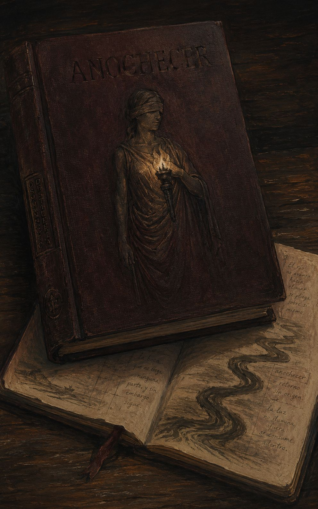
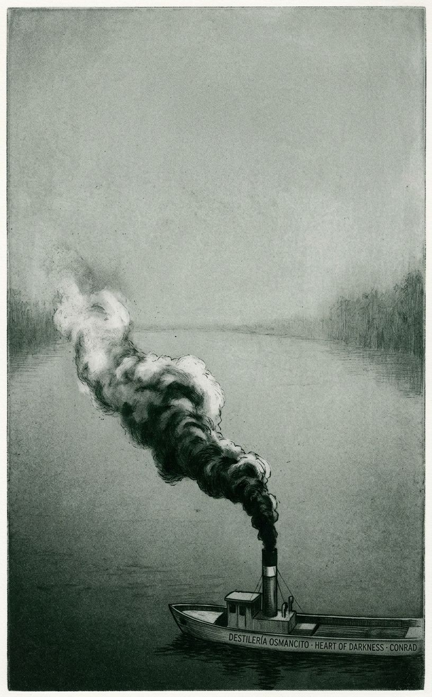
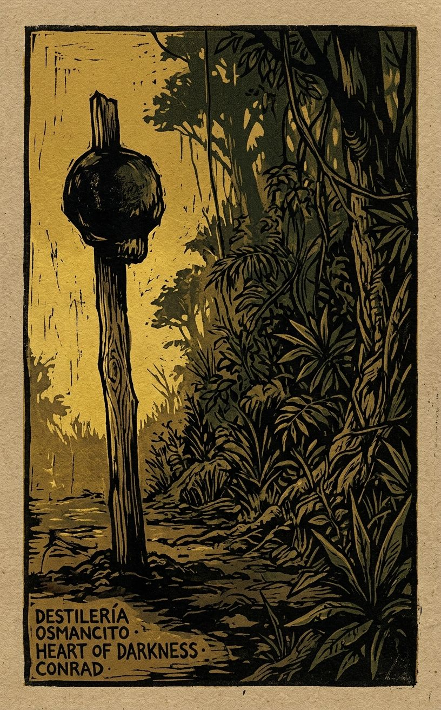
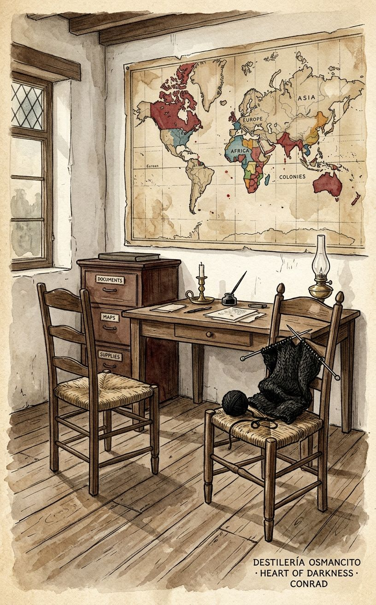
Leer Heart of Darkness es más parecido a navegar con niebla que a seguir un mapa: ves lo suficiente para avanzar, pero nunca del todo lo que tienes adelante. Conrad tomó esa decisión de manera deliberada —construir un texto que no se deja resumir porque su mecanismo central es la acumulación de lo que no se puede decir. La voz que narra, la de Marlow, lo admite desde el principio: las palabras son el instrumento equivocado para esta experiencia. Y sin embargo sigue hablando durante cien páginas.
Marlow es un marinero inglés que acepta capitanear un vaporcito en el río Congo para una compañía comercial belga. Río arriba, todos hablan de Kurtz —agente excepcional, visionario, elocuente, el que envía más marfil que todos los demás juntos— como si el nombre tuviera propiedades peligrosas. Cuando Marlow llega a Kurtz, lo encuentra esquelético, rodeado de guerreros que lo adoran, con cabezas en estacas alrededor de su estación. Lo rescata. Lo lleva río abajo. Kurtz muere pronunciando: “¡El horror! ¡El horror!” De regreso en Europa, Marlow visita a la prometida de Kurtz —una mujer de negro que sigue llorando un año después— y le miente: le dice que las últimas palabras de Kurtz fueron su nombre. Esa mentira es el momento más violento del libro porque es el momento en que la civilización se protege a sí misma de su propio horror.
Este documento recorre esa novela desde varios ángulos. Cada sección entra por un lado distinto —la temperatura de las escenas, la arquitectura del relato, las cosas que el texto muestra mientras cree estar mostrando otra cosa, las condiciones que hicieron posible que Conrad escribiera esto en 1899— y juntas van construyendo algo que ninguna sola podría: una imagen completa de por qué este libro, publicado hace más de ciento veinticinco años, todavía produce la sensación de haber visto algo que no debías ver y que además ya sabías.
El documento avanza en tres tiempos.
El primero —el más cercano al texto— recorre lo que ocurre y lo que pesa: el hombre en la arboleda con un trozo de hilo blanco atado al cuello, al que Marlow da una galleta y al que no puede mirar más de un instante; el libro de navegación remendado con hilo limpio encontrado en una cabaña abandonada, que Marlow llama “algo inequívocamente real”; el director de la Estación Central, sin nada dentro, cuya peligrosidad reside exactamente en eso; la mujer africana en la orilla, sin nombre, cuya descripción es la más densa de cualquier figura femenina del corpus; la última frase del corpus, donde el Támesis —el mismo río del principio— ya no es el mismo río.
El segundo tiempo va más adentro: lo que el corpus muestra mientras cree estar mostrando otra cosa. Que el imán real del relato no es Kurtz sino su voz —Kurtz casi no aparece, y cuando aparece ya no puede tenerse en pie, pero su voz llena el espacio que su cuerpo perdió. Que Marlow eligió a Kurtz sobre el timonel —el hombre que murió a su lado con una lanza en el costado, cuyo cuerpo tiró al río antes de que pudiera ser devorado— y usa la filosofía para no llamar a eso una elección. Que el silencio de los africanos en el corpus no es ausencia sino presencia interrumpida en el momento exacto en que podría articularse. Que Conrad critica el colonialismo con las herramientas que el colonialismo le dio, y que esa condición no es un defecto del corpus: es la condición de cualquier crítica formulada desde adentro de un sistema de poder.
El tercer tiempo, la visión total que emerge de todo el análisis, tiene la forma de una proposición que el corpus no declara pero demuestra página a página: que hay cosas que el lenguaje no puede decir, que callarlas es peor, y que seguir hablando igualmente es la única respuesta honesta a esa imposibilidad. El Támesis que cierra el corpus “parecía conducir hacia el corazón de una oscuridad inmensa.” La oscuridad no viajó con Marlow desde el Congo. Ya estaba esperando cuando regresó.
Bienvenido a este nuevo destilar de la Destilería Osmancito. El río te espera río arriba.
El corpus llega ya en llamas. Conrad le da a Marlow la historia de Kurtz como si fuera humo —no la deja ver directamente, la deja oler. Lo que quema no es el Congo ni la violencia colonial, sino el descubrimiento de que la “oscuridad” que Europa exportó era su propia mercancía de siempre, envuelta en elocuencia. Kurtz no cayó: llegó hasta el fondo de lo que ya era. Y la última mentira de Marlow —decirle a la prometida que las últimas palabras de Kurtz fueron su nombre— es el momento más violento del libro, porque es el momento en que la civilización se protege a sí misma de su propio horror.
Un paquete pequeño, denso, que llega sin envolver: pesa más de lo que promete y huele a río.
Este corpus llega como niebla: ocupa el espacio antes de que te des cuenta de que algo llegó. No es un libro sobre el Congo, ni sobre el colonialismo, ni siquiera sobre Kurtz. Es un libro sobre la imposibilidad de contar lo que se vio sin que el acto de contarlo ya lo traicione. Nombrar Heart of Darkness es distinto de resumirlo porque este corpus no tiene argumento en el sentido habitual —tiene una atmósfera que avanza hacia ti y un hombre que intenta decir algo que, por definición, las palabras no pueden sostener.
Título — Heart of Darkness Autor — Joseph Conrad (Józef Teodor Konrad Korzeniowski, 1857–1924) Año — 1899 (publicación en Blackwood’s Magazine); 1902 en volumen Género — Novela corta; relato enmarcado; proto-modernismo Extensión estimada — ~38.000 palabras / ~152 páginas / 3 partes (I, II, III), sin capítulos internos numerados Idioma original — Inglés (tercer idioma del autor, después del polaco y el francés) Palabra más frecuente con contenido — Kurtz (122 apariciones en el texto de la ficción). Coincide con lo que el corpus declara ser: la historia es, explícitamente, la persecución de ese nombre. Que el nombre más repetido sea el de un hombre que apenas aparece en escena —y cuando aparece apenas puede tenerse en pie— es la primera exposición del corpus de su propio mecanismo.
Marlow, marinero inglés, consigue un contrato para capitanear un vaporcito en el río Congo al servicio de una compañía comercial belga (sin nombre en el texto). En su trayecto río arriba hacia la Estación Interior, escucha hablar obsesivamente de Kurtz, agente excepcional que envía más marfil que todos los demás juntos. Cuando Marlow llega a Kurtz —enfermo, rodeado de guerreros que lo adoran, con cabezas en estacas decorando su estación—, lo rescata y lo lleva río abajo. Kurtz muere pronunciando: “¡El horror! ¡El horror!” De regreso en Europa, Marlow visita a la prometida de Kurtz y le miente: le dice que sus últimas palabras fueron su nombre.
Marlow — narrador y protagonista; marino escéptico e inquisitivo, filtro entre el lector y el horror. Kurtz — agente de la Compañía; visionario, elocuente, totalitario en su degradación; se convierte en objeto de culto entre los pueblos del interior. El director — jefe de la Estación Central; mediocre, sano, peligroso precisamente por carecer de interior. El ruso — discípulo deslumbrado de Kurtz; joven, errático, con ropa remendada de colores; figura de la fe ciega. La prometida (The Intended) — mujer de Kurtz en Europa; encarna la ilusión que la civilización necesita mantener sobre sí misma. La africana — compañera de Kurtz en el Congo; sin nombre; presencia de poder y luto que el texto trata con una mezcla de fascinación y distancia colonial. Las tejedoras — dos mujeres en la oficina de la Compañía en Bruselas; apenas descritas, pero inquietantes; Marlow las recuerda durante toda la travesía.
El corpus opera en dos tiempos simultáneos: el presente del relato (hombres en un yate anclado en el Támesis, esperando la marea) y el pasado del Congo que Marlow narra. Esta estructura de caja china —un narrador sin nombre presenta a Marlow, quien a su vez cuenta lo que Kurtz le dijo— no es ornamental: es el argumento. La historia se degrada a medida que pasa por más manos.
Prólogo en el Támesis. Cinco hombres a bordo del Nellie, anclados, esperando la marea. Marlow, cruzado de piernas como un buda, comienza a hablar. Observa que el Támesis también fue, una vez, oscuro —cuando los romanos llegaron aquí como los europeos llegaron al Congo. Esta equiparación abre el texto: la oscuridad no es africana. Es el estado al que cualquier lugar se reduce cuando lo invade una fuerza que solo sabe tomar.
Contratación y partida. Marlow consigue el trabajo gracias a una tía con contactos. Antes de partir visita la oficina en Bruselas —una ciudad que le parece un sepulcro blanqueado. Dos mujeres tejen lana negra sin mirarlo. Un médico le mide el cráneo “por la ciencia”. Marlow siente que entra en una conspiración cuya naturaleza no comprende del todo.
La costa africana y la Estación Exterior. El viaje en barco por la costa africana produce en Marlow una sensación de irrealidad creciente: soldados descargados en la selva, un cañonero disparando al continente sin objetivo visible. Al llegar a la Estación Exterior encuentra hombres muriendo en la sombra de los árboles —trabajadores encadenados, “criminales” por ley colonial, que no son ni una cosa ni la otra: simplemente están muriendo. El contador jefe de la estación, impecablemente vestido en medio del caos, es la primera figura grotesca de la burocracia como mecanismo de negación.
La Estación Central y la espera. Marlow llega a la Estación Central para descubrir que su barco está hundido. Espera meses mientras lo repara. Allí el ambiente es de intriga, mediocridad e idolatría a distancia: todos hablan de Kurtz sin nombrarlo directamente, como si el nombre tuviera propiedades peligrosas. El director de la estación —saludable, sin entrañas, imposible de descifrar— ya teme y desea la caída de Kurtz. El fabricante de ladrillos (que no hace ladrillos) espía para el director. Llega la Expedición Eldorado, exploradores de saqueo sin otra ambición que el beneficio rápido.
El viaje río arriba. Marlow navega hacia la Estación Interior con el director a bordo. El río le parece un regreso a los orígenes del mundo: vegetación sin límite, silencio, presencia constante de lo que no se ve. Una parada en una cabaña abandonada produce un libro de navegación con notas en lo que Marlow cree que es código cifrado (es ruso). La niebla cae. Gritos desde la orilla. Un ataque —flechas, luego lanzas. El timonel muere con una lanza en el costado. Marlow tira el cuerpo al río antes de que pueda ser devorado por la tripulación, que lleva semanas sin comer más que podredumbre.
La Estación Interior y Kurtz. Llegan. El ruso, en ropa de arlequín multicolor, sale a recibirlos. Explica que las estacas con ornamentos en torno a la casa de Kurtz tienen cabezas de “rebeldes”. Kurtz es sacado en camilla —esquelético, impresionante, una voz que llena el espacio que su cuerpo ya no puede llenar. Ordena en quechua el retiro de su tribu con un gesto del brazo. Una mujer africana —guerrera, ornamentada, magnética— observa desde la orilla. Esa noche, Kurtz escapa de la cabina hacia el campamento de sus adoradores. Marlow lo persigue, lo convence de regresar. No con argumentos: solo diciéndole que está “perdido”, que su “éxito en Europa está asegurado”. Kurtz sabe que esto es mentira. Vuelve de todos modos.
La muerte de Kurtz y el regreso. Río abajo, Kurtz muere. Sus últimas palabras: “¡El horror! ¡El horror!” Marlow casi muere también de enfermedad. De regreso en Europa, varias personas reclaman los papeles de Kurtz: un representante de la Compañía, un primo, un periodista. Marlow entrega el Informe sobre la Supresión de Costumbres Salvajes (con el postscriptum “¡Exterminad a todos los brutos!” arrancado). Guarda las cartas personales para la prometida.
La prometida. Marlow visita a la mujer de negro que llora a Kurtz un año después de su muerte como si hubiera muerto ayer. Ella le pregunta las últimas palabras de Kurtz. Marlow miente: le dice que su nombre. El texto cierra con el narrador externo mirando el Támesis que “parecía conducir hacia el corazón de una oscuridad inmensa”.
El corpus produce incomodidad de fondo, no de golpe. No hay un momento de terror súbito: hay una acumulación de irrealidad que se instala sin pedir permiso. El libro funciona como niebla en el río que describe —no impide ver, hace que lo que ves no sea del todo real. Lo que permanece después de cerrar el texto no es una imagen ni un argumento sino una sensación: la de haber visto algo que no debías ver y que además ya sabías.
Ver / no poder decir. Marlow repite, a lo largo de toda la narración, que no puede transmitir lo que vivió —que las palabras son el instrumento equivocado para esa experiencia. Y sin embargo sigue hablando. La tensión entre la imposibilidad declarada de narrar y el acto continuo de narrar no es un defecto del texto: es su mecanismo central. El corpus pregunta sin preguntarlo: ¿qué hace el lenguaje cuando nombra lo que lo supera?
La oscuridad dentro / la oscuridad fuera. El título promete que la oscuridad está en algún lugar del Congo. El corpus la va trasladando: está en el río, en la selva, en Kurtz, en la civilización europea que produce a Kurtz, en Marlow que lo entiende y calla, en la prometida que necesita no saber. Al final, la oscuridad no tiene dirección geográfica. El río al que vuelve la última frase —el Támesis— “parecía conducir hacia el corazón de una oscuridad inmensa”. La oscuridad es el destino de cualquier río que lleve a cualquier lugar donde el poder opere sin testigos.
La mentira que sostiene el mundo. Marlow, que dice detestar las mentiras porque tienen “un sabor a muerte”, miente al final. No como cobardía: como acto consciente de mantenimiento. Si le dice la verdad a la prometida —“El horror”—, algo colapsa. Qué exactamente, el texto no lo dice. Pero Marlow siente que “los cielos caerían”. El corpus trabaja esa tensión: entre la verdad que destruye y la mentira que preserva, ¿cuál es más oscura?
Auditor: El mapa de hechos cubre el corpus con completitud. Hay una zona que rozó sin excavar: el estatus del narrador externo (el que presenta a Marlow) como figura de análisis separada del propio Marlow. Puede ser material para Testigo del Testigo. Lo señalo para que decidas si vale la pena marcarlo ahora o dejar que ese instrumento lo recoja cuando llegue su turno.
Marlow está sentado en cuclillas en la popa del Nellie, con los brazos caídos y las palmas hacia afuera, como un buda que predica en ropa europea sin flor de loto. Antes de que empiece a hablar, ya dice algo: este hombre tiene la pose de alguien que ha visto demasiado para sentarse derecho.
Lo que dice, antes de decir nada sobre el Congo, es esto: el Támesis también fue oscuro. Los romanos llegaron aquí como los europeos llegaron a África —con la espada, la antorcha, y la convicción de que llevaban la luz. “Imagination of a man going into this” —tener que vivir en medio de lo incomprensible, que además es detestable. Y que además fascina. La fascinación de la abominación. Con esa frase, pronunciada en el primer tercio del corpus, Conrad ya entregó el argumento completo. Todo lo que viene después es demostración.
La primera imagen real del Congo no es el río. Es un grupo de hombres encadenados, con hierros en el cuello, subiendo un camino con cestas de tierra en la cabeza. Marlow los llama “criminales” —pero enseguida lo pone entre comillas, porque sabe que la ley colonial que los convirtió en criminales llegó del mismo lugar que los cañoneros que disparan al continente sin objetivo visible. Los deja pasar a seis centímetros de él sin mirarlo, “con esa indiferencia completa y cadavérica de los salvajes infelices.” Marlow no puede quedarse a mirar. Da la vuelta y baja por el otro lado de la colina.
En la arboleda de debajo de los árboles, los encuentra. Formas negras acuclilladas, apoyadas en troncos, medio salidas de la penumbra en todas las actitudes del dolor, el abandono y la desesperación. No son enemigos. No son criminales. Ahora no son nada terrenal: son sombras negras de enfermedad e inanición. Uno de ellos levanta los párpados hacia Marlow. Los ojos hundidos miran hacia arriba: inmensos, vacíos, una especie de destelleo blanco ciego en el fondo de las órbitas. Marlow le da una de sus galletas de marino sueco. Los dedos se cierran lentamente sobre ella. No hay otro movimiento. No hay otra mirada. El hombre lleva atado al cuello un trozo de hilo blanco de lana. ¿Por qué? ¿De dónde lo sacó? ¿Qué significa? El corpus deja la pregunta abierta. Eso es lo más honesto que puede hacer.
El director de la Estación Central merece un párrafo propio porque Conrad lo construye como el verdadero monstruo del libro, más peligroso que Kurtz precisamente porque no tiene nada dentro. Complexión común, rasgos comunes, voz común. Los ojos, de azul corriente, eran quizás notablemente fríos. La sonrisa: inconsciente, se intensificaba un instante después de que decía algo, como un sello aplicado sobre las palabras para hacer que el significado de la frase más corriente pareciera absolutamente inscrutable. No tenía genio para organizar, para la iniciativa, ni siquiera para el orden. Su posición le había llegado —¿por qué? Quizás porque nunca enfermaba. Cuando había caído enfermo casi todos los agentes de la estación, se le oyó decir: “Los hombres que vienen aquí no deberían tener entrañas.” Y selló la frase con esa sonrisa. Era grande por esa pequeña cosa: era imposible saber qué podría controlarlo. Quizás no había nada dentro de él. Esa sospecha daba qué pensar.
Río arriba, en una cabaña abandonada, Marlow encuentra un libro. Viejo, sin cubiertas, las páginas sobadas hasta una suavidad extremadamente sucia —pero el lomo había sido remendado amorosamente con hilo de algodón blanco, que parecía limpio todavía. Investigación sobre Algunos Aspectos del Arte de la Navegación, por un tal Towson. Un libro de cadenas de barco y aparejos de carga. Marlow lo toma con la mayor ternura posible, temiendo que se disolviera en sus manos. Lo que encuentra en él es algo que no esperaba encontrar a mil millas del último hombre razonable: una preocupación honesta por la manera correcta de hacer el trabajo. Páginas llenas de esa sencillez de intención. Páginas luminosas con una luz distinta a la profesional. Marlow lo llama “algo inequívocamente real.” En el margen: notas. En clave, piensa. Luego resulta que es ruso.
La persecución nocturna de Kurtz es la escena más extraña del corpus y la más verdadera. Marlow se despierta, descubre que Kurtz no está en la cabina, y salta a tierra solo, sin decirle nada a nadie. Sigue el rastro en la hierba mojada de rocío. Encuentra a Kurtz de pie en la oscuridad, largo, pálido, indistinto, como un vapor exhalado por la tierra. A treinta metros del fuego más cercano. Marlow no lo agarra, no lo amenaza. Lo convence con una frase que sabe que es mentira: “Su éxito en Europa está asegurado de todas formas.” Kurtz también sabe que es mentira. Y aun así se vuelve. Más tarde Marlow lo cargará cuesta abajo con el brazo huesudo de Kurtz alrededor de su cuello, y el hombre pesará más que cualquier hombre en la tierra, pesará como algo que no debería estar vivo todavía.
Kurtz muere de noche, en la cabina, mientras Marlow repara el motor en el cuarto de máquinas. Un momento antes de morir, Marlow entra con una vela. Lo que ve en esa cara: expresión de orgullo sombrío, de poder despiadado, de terror rastrero, de una intensa y sin esperanza desesperación. Como si en ese momento supremo de conocimiento completo hubiera vivido de nuevo su vida en cada detalle de deseo, tentación y rendición. Kurtz pronuncia dos veces algo, un grito que no era más que un susurro. “¡El horror! ¡El horror!” Marlow apaga la vela y sale. Al rato, el muchacho del director asoma la cabeza impudentemente por la puerta: “Mistah Kurtz —he dead.” Todos los peregrinos salen corriendo a ver. Marlow se queda y termina de cenar. No come mucho.
Lo que Marlow piensa sobre “El horror”: que es una victoria moral. No la derrota de Kurtz sino su único logro real. Porque Kurtz tuvo algo que decir al final. Dio un paso hacia el borde y miró. Y lo que vio lo nombró —sin eufemismos, sin la jerga de la filantropía, sin el lenguaje de la Sociedad Internacional para la Supresión de las Costumbres Salvajes. Solo eso. Marlow, que estuvo cerca del borde y pudo retroceder, dice que tal vez en ese instante de cruzar el umbral reside toda la sabiduría, toda la verdad, toda la sinceridad disponibles. Mejor el grito de Kurtz —mucho mejor— que el silencio satisfecho del director, que también vivió hasta el final, pero sin haber mirado nada.
El salón de la prometida es oscuro. Tres ventanas del suelo al techo como columnas luminosas veladas. El piano de cola en la esquina, con destellos oscuros en sus superficies planas, como un sarcófago pulido. Ella entra toda de negro, con la cabeza pálida flotando en el crepúsculo. Lleva un año de luto y lo lleva como si fuera a llevarlo para siempre. Le pregunta a Marlow las últimas palabras de Kurtz. El crepúsculo las repite para Marlow en un susurro insistente: “¡El horror! ¡El horror!” Marlow habla lentamente. “La última palabra que pronunció fue… su nombre.” Ella lanza un grito de triunfo inconmensurable y dolor insoportable. “¡Lo sabía, estaba segura!” Marlow sale antes de que la casa se derrumbe sobre él. No se derrumba. Los cielos no caen por tan poca cosa.
La última imagen: el narrador exterior, el que escuchó a Marlow toda la noche en el Nellie, levanta la vista. La desembocadura del Támesis está cerrada por un banco negro de nubes. La tranquila vía fluvial que conduce a los últimos confines de la tierra fluye sombría bajo un cielo cubierto —y parecía conducir hacia el corazón de una inmensa oscuridad.
Valor. Este corpus merece exactamente el lugar que ocupa: uno de los textos fundacionales de la narrativa en inglés del siglo XX, y también uno de los más debatidos, por razones legítimas en ambos frentes. Lo que hace Conrad aquí —instalar la oscuridad en el centro de la civilización que pretende extirparla— no ha envejecido porque el mecanismo que describe no ha desaparecido. Es un texto que incomoda de maneras que no todas sus admiraciones están dispuestas a sostener hasta el final.
Goce. Sí, se disfruta, pero con una tensión que no suelta. La prosa de Conrad tiene una presión sostenida que pocos autores mantienen en novela corta: cada frase lleva más peso del que parece contener. El goce es del tipo que deja algo en los pulmones después de cerrar el libro —no placer limpio sino algo más parecido a haber respirado un aire que no era del todo respirable, y haberlo tolerado, y no haber salido del todo ileso.
Auditor: El documento cumple la extensión acordada (~2.050 palabras de selección) y la distribución sigue honestamente el mapa de temperatura declarado —las zonas calientes identificadas reciben el espacio central, sin relleno de temperatura media. Una observación: el Veredicto sobre valor roza el debate Achebe (la incomodidad de las admiraciones) sin nombrarlo. Ese hilo aparecerá con fuerza en Historia de los Efectos y en Contrapunto; puede ser útil tenerlo presente cuando lleguen.
El texto abre con un narrador sin nombre a bordo del Nellie, una goleta de crucero fondeada en la desembocadura del Támesis, esperando la marea. Son cinco hombres: el Director de Compañías —que hace las veces de capitán y anfitrión—, el Abogado, el Contador, Marlow, y el narrador. El día cae con serenidad. El agua brilla; el cielo es una inmensidad benigna. Pero hacia el oeste, sobre el tramo superior del río, el lugar de la monstruosa ciudad se marca de manera ominosa en el cielo: una penumbra que acecha sobre la multitud de hombres.
Marlow, sentado en cuclillas con los brazos caídos y las palmas hacia afuera, en pose de buda, rompe el silencio sin que nadie lo esperase. Dice que el Támesis también fue uno de los lugares oscuros de la tierra. Es el único de los cinco que sigue “siguiendo el mar”. Los demás lo escuchan: han aprendido, a lo largo de años, a tolerar sus reflexiones. Marlow dice que piensa en los romanos, en el comandante de una trirreme que llegó aquí hace diecinueve siglos a un mundo incomprensible —frío, niebla, bosques, salvajes, enfermedad y muerte—, y en el joven ciudadano romano en toga enviado al interior, que habría sentido cerrarse sobre él la “fascinación de la abominación”. Pero lo que redime una conquista, dice Marlow, no es la fuerza bruta —eso es solo un accidente de la debilidad ajena—: es la idea. Una creencia desinteresada en la que uno puede postrarse. Luego se interrumpe. Las llamas verdes, rojas y blancas del tráfico nocturno recorren el río. Los hombres saben que van a escuchar una de las experiencias inconclusas de Marlow.
Marlow cuenta que en aquella época había regresado de Asia y llevaba un tiempo sin barco. Recordó su pasión de infancia por los mapas en blanco —África sobre todo, y dentro de África, un río que en el mapa parecía una serpiente descomunal con la cabeza en el mar y la cola perdida en el interior del continente. Consiguió, a través de una tía con contactos influyentes en el continente, un contrato para capitanear un vaporcito de una compañía belga de comercio en el Congo. El puesto quedó vacante porque el capitán anterior, Fresleven —un danés de carácter muy tranquilo, según todos—, llevaba dos años embrutecido por el interior y un día fue a tierra a golpear con un palo al jefe de un pueblo por un malentendido sobre unas gallinas. El hijo del jefe lo mató de una lanzada entre los omóplatos. La población entera desapareció en el bosque y no regresó. Cuando Marlow fue por los restos de Fresleven, la hierba le crecía entre las costillas.
Marlow viajó a la ciudad continental —que le recuerda a un sepulcro blanqueado— a firmar el contrato. La oficina de la Compañía estaba en una calle estrecha y silenciosa. Al entrar encontró dos mujeres: una gorda, una delgada, ambas sentadas en sillas de paja tejiendo lana negra. La delgada lo condujo sin mirarlo a una sala de espera y volvió a su sitio. En el centro de la sala, un mapa grande marcado con los colores de las potencias coloniales: mucho rojo, mucho azul, algo de verde, naranja en la costa este, y en el centro —donde Marlow iba— amarillo. Lo recibió un hombre pálido y regordete en frac, que midió poco más de metro y medio y tenía en la mano el extremo del mango de millones. Marlow firmó varios documentos, entre ellos uno en que se comprometía a no revelar secretos comerciales. Al salir, las tejedoras seguían tejiendo. Marlow las ve, en retrospectiva, como guardianas de la puerta de la Oscuridad: una introduce a los recién llegados, la otra los mira con esa placidez indiferente de los que ya saben. “Morituri te salutant”, piensa Marlow.
Un médico le midió el cráneo “en interés de la ciencia”: quería estudiar los cambios mentales que se producen en los hombres que van allá. “Oh, yo nunca los veo de vuelta”, dijo cuando Marlow preguntó. Se despidió aconsejándole que evitara la irritación más que la exposición al sol, y que sobre todo mantuviera la calma. Marlow visitó a su tía para despedirse. Ella lo veía como un “emisario de luz”, un apóstol de la civilización. Marlow intentó señalar que la Compañía era un negocio que buscaba beneficio. Su tía lo ignoró. Al salir a la calle, Marlow tuvo la sensación extraña de ser un impostor.
Marlow partió en un vaporcito francés. La costa africana desfiló ante él durante semanas —siempre igual, con asentamientos del tamaño de alfileres sobre el fondo inmovible de la selva. En un punto vio una cañonera de guerra fondeada disparando al continente: había un campamento de nativos, le dijeron. El cañón hacía “pop”, una llama pequeña, una columna de humo, y nada pasaba. Absolutamente nada. La imagen de una locura gozosa, dijo Marlow.
Tras un mes largo de viaje llegó a la Estación Exterior de la Compañía. Al descender vio un ferrocarril en construcción: explosivos volando una roca sin ningún propósito visible. Luego seis hombres encadenados entre sí, con hierros en el cuello, subiendo el camino con cestas de tierra en la cabeza. Un guardia negro con librea los seguía desganado. Los encadenados pasaron a centímetros de Marlow sin mirarlo: indiferencia completa, cadavérica. Marlow rodeó la escena y bajó hacia los árboles. Allí encontró la arboleda: decenas de cuerpos en todas las posturas del dolor, el abandono y la desesperación —trabajadores llegados de las costas con contratos legales, que habían enfermado y recibido permiso de arrastrarse hasta allí a morir. Sombras negras, casi transparentes de delgadez. Uno levantó los párpados: ojos inmensos, vacíos, un destello blanco ciego. Marlow le dio una de sus galletas. Los dedos la tomaron lentamente. Nada más.
Al salir de la arboleda encontró al contador jefe de la estación: traje blanco impecable, cuello almidonado, botas barnizadas. Había enseñado a una mujer nativa a lavar su ropa. Marlow lo respetó por eso: era “carácter”, dijo. En la oficina del contador, mientras los dos trabajaban en el calor con moscas que pinchaban, el enfermo en la cama de campaña gemía. El contador levantó la vista y dijo que los gemidos del enfermo le distraían y que era muy difícil protegerse de los errores de contabilidad en ese clima. Fue en esa conversación donde Marlow escuchó por primera vez el nombre de Kurtz: primer agente de la Estación Interior, el que enviaba más marfil que todos los demás juntos. “Será alguien importante en la Administración”, dijo el contador. “Irá muy lejos.”
Marlow emprendió una marcha de doscientos kilómetros a pie con una caravana de sesenta hombres hacia la Estación Central. El paisaje: caminos, silencios, aldeas abandonadas, algún cargador muerto en el camino con su calabaza vacía al lado. La población había huido hacía tiempo. Un compañero blanco se desmayaba repetidamente en las cuestas. Los cargadores lo llevaron en hamaca; el peso de dieciséis stones provocó una semiamotinación. Marlow pronunció un discurso en inglés con gestos que no entendieron pero que surtió efecto.
Al llegar a la Estación Central descubrió que su barco estaba hundido: dos días antes lo habían sacado río arriba precipitadamente bajo el mando de un capitán voluntario y lo habían varado en unas rocas. Marlow necesitaría meses para repararlo. El director de la estación —rostro común, ojos azules fríos, sonrisa inconsciente que se intensificaba al final de cada frase como un sello que volviera inscrutable el sentido de las palabras más corrientes— le dijo que la situación era “muy grave, muy grave”. Mencionó a Kurtz, enfermo. Marlow se volvió al barco naufragado.
Durante los meses de reparación observó la estación: hombres deambulando con largos bastones en las manos como peregrinos embrujados dentro de una valla podrida. La palabra “marfil” susurrada en el aire como una oración. El fabricante de ladrillos —que no fabricaba ladrillos— lo citó a su cuarto una noche: velas, una maleta con artículos de tocador con montura de plata, colecciones de lanzas y escudos en las paredes, y un cuadro al óleo que Kurtz había pintado en esa misma estación un año antes: una mujer con los ojos vendados llevando una antorcha encendida. El fondo, casi negro. El efecto de la luz sobre la cara, siniestro. El fabricante de ladrillos sondeó a Marlow sobre sus contactos en Europa, creyéndolo del “nuevo grupo” —el grupo de la virtud—, emissarios de la misma red que había enviado a Kurtz. Marlow lo dejó creer lo que quisiera: necesitaba remaches para reparar el barco, y el fabricante de ladrillos tenía influencia sobre el director. Los remaches nunca llegaron. En su lugar llegó la Expedición Eldorado: una banda de saqueadores con burros, tiendas de campaña y el aspecto de una banda de piratas sin audacia. El tío del director era su jefe.
Una tarde, tumbado en cubierta, Marlow escuchó sin moverse una conversación entre el director y su tío en la orilla, justo debajo de él. Hablaban de Kurtz: que había pedido ser enviado al interior para demostrar lo que podía hacer; que llevaba más de un año allí solo, sin apenas noticias; que enviaba cantidades prodigiosas de marfil; que una vez había regresado trescientas millas río abajo con el marfil y luego, inexplicablemente, había girado su piragua y vuelto solo al interior. El tío del director agitó su brazo gordo en dirección al bosque, el río y el barro —un gesto oscuro, como convocando a la muerte oculta a resolver el problema de Kurtz. Los dos se alejaron. La Expedición Eldorado partió río arriba poco después y desapareció en el bosque. Al cabo llegaron noticias de que todos los burros habían muerto.
Dos meses después de abandonar la Estación Central, el barco remontaba hacia la Estación Interior. El río era como regresar al principio del mundo: vegetación enorme, silencio, ninguna orilla humana visible. La quietud no se parecía a la paz: era la quietud de una fuerza implacable meditando una intención inscrutable. Marlow tenía que concentrarse en el canal —detectar bancos de arena, troncos sumergidos, cambios de corriente— o el barco naufragaba. A bordo: el director, tres o cuatro “peregrinos” armados con Winchesters, y la tripulación de caníbales reclutados en el camino. La tripulación llevaba semanas comiendo solo carne de hipopótamo podrida —los peregrinos la habían arrojado al río, indignados por el olor—, y sus salarios de alambre de latón no les servían para comprar nada. Marlow reflexiona sobre lo que los contuvo: algún secreto humano que desafía la probabilidad. Los llamó “hombres con quienes se podía trabajar.”
Cincuenta millas antes de la Estación Interior encontraron una cabaña abandonada con una pila de leña y una tabla: “Madera para ustedes. Dense prisa. Acérquense con cautela.” Firmado con nombre ilegible. En la cabaña, un libro viejo y sobado —Investigación sobre Algunos Aspectos del Arte de la Navegación, de un tal Towson— con notas a lápiz en los márgenes que Marlow creyó en clave. Sintió el libro como algo “inequívocamente real” en medio de la irrealidad circundante.
La mañana siguiente, niebla blanca y densa. Gritos que parecían brotar de la niebla misma: un clamor de lamento y miedo, modulado en disonancias salvajes, que cesó de golpe. Los peregrinos quisieron avanzar; Marlow se negó: no se veía nada. El timonel africano, nervioso, perdió el control del barco cuando empezaron las flechas desde la orilla —palos, palos, dijo Marlow, hasta que vio que eran flechas. El timonel abrió el obturador del pilotaje y disparó el fusil al bosque; una lanza entró por la abertura y le atravesó el costado. Murió con la lanza aferrada en las manos, mirando a Marlow con una profundidad íntima y extraña, como afirmando un parentesco lejano en un momento supremo. Marlow accionó el silbato de vapor: los ataques cesaron, y los sonidos del bosque se convirtieron en un largo lamento de miedo y desesperación. Marlow tiró el cuerpo del timonel al río —no quería que la tripulación lo devorase— y tomó el timón.
Al acercarse a la Estación Interior, Marlow vio a través de los binoculares los postes del cercado derruido. Lo que había tomado por remates ornamentales en los postes eran cabezas humanas secas, con los párpados cerrados, algunas sonriendo. Solo una daba la cara hacia el río.
En la orilla apareció el ruso, con ropa remendada de colores como un arlequín —azul, rojo, amarillo, encarnado en los bordes. Joven, con cara de niño, nariz pelada, ojos azules muy abiertos. Llevaba casi dos años solo en aquel río, había conocido a Kurtz y lo reverenciaba absolutamente. Explicó a Marlow que las cabezas eran de “rebeldes”, que Kurtz las había mandado poner. Que Kurtz era capaz de ser muy terrible. Que los nativos del lago adyacente lo adoraban como a una divinidad. Que él mismo, el ruso, había tenido que entregarle un pequeño lote de marfil cuando Kurtz amenazó con matarlo. Y que nunca lo juzgaba por ello: “Este hombre ha ensanchado mi mente.”
Sacaron a Kurtz en camilla. Era un hombre esquelético, casi transparente, con una calva que la selva había pulido como una bola de marfil. Se incorporó en la camilla con un brazo levantado sobre los hombros de los portadores y, con ese gesto, dispersó a los guerreros del lago que llenaban el claro. La tribu obedeció. Una mujer africana —alta, con cascos de latón en las piernas, pulseras de alambre en los brazos, collares, pieles, ornamentos que valdrían varios colmillos— caminó a lo largo de la orilla con pasos medidos. Era salvaje y magnífica. Se detuvo, miró al barco, alzó los brazos desnudos al cielo, y se alejó lentamente hacia la selva. El ruso murmuró que casi le disparaba.
Instalaron a Kurtz en la cabina del piloto. Desde allí Kurtz murmuró sus posesiones: “Mi marfil, mi prometida, mi río, mi estación…” Todo le pertenecía. También murmuró: “Exterminad a todos los brutos” —la apostilla al pie de su informe de diecisiete páginas sobre la Supresión de las Costumbres Salvajes, un informe elocuente, vibrante, que comenzaba argumentando que los blancos debían aparecer ante los nativos como seres sobrenaturales.
Esa noche Kurtz desapareció de la cabina. Marlow lo siguió solo a tierra. Encontró a Kurtz de pie en la oscuridad, a treinta metros de los fuegos del campamento. Marlow no lo amenazó: lo convenció diciéndole que su éxito en Europa estaba asegurado. Ambos sabían que era mentira. Kurtz volvió al barco. Cuando Marlow lo cargó cuesta abajo con el brazo huesudo del hombre rodeando su cuello, el cuerpo pesaba más de lo que ningún hombre puede pesar.
El barco comenzó el descenso. Kurtz discurseaba desde la cama: sus planes, su grandeza, su prometida, su carrera. A veces era puerilmente vanidoso —quería que reyes lo esperaran en estaciones de tren. Un día dijo a Marlow: “Cierra el obturador, no puedo soportar ver esto.” Luego, en voz baja: “¡Aún te partiré el corazón!” dirigido a la selva invisible. Encalló en una isla y hubo que reparar el motor. Kurtz le entregó a Marlow un paquete de papeles y una fotografía: “Guarda esto. Ese necio (el director) es capaz de husmear en mis cajas.” Esa tarde Marlow lo encontró murmurando con los ojos cerrados: “Vivir bien, morir, morir…” No hubo más.
Una noche Marlow entró con una vela en la cabina. En la cara de Kurtz: orgullo sombrío, poder despiadado, terror rastrero, desesperación intensa y sin esperanza. Kurtz pronunció dos veces su frase, en un susurro: “¡El horror! ¡El horror!” Marlow apagó la vela y salió. El muchacho del director asomó la cabeza a la sala de la tripulación: “Mistah Kurtz —he dead.” Los peregrinos salieron corriendo. Marlow se quedó y terminó de cenar.
Marlow cayó enfermo y estuvo a punto de morir. Sobrevivió sin saber muy bien cómo. De regreso en la ciudad —que siguió pareciéndole un sepulcro blanqueado— no pudo tolerar a la gente que caminaba por la calle con la expresión de quien está perfectamente a salvo. Sabían demasiado poco para poder moverse así.
Un representante de la Compañía, con gafas de montura dorada, fue a ver a Marlow: quería los documentos de Kurtz. Marlow le dio el informe sobre las costumbres salvajes —con el postscriptum arrancado. El hombre lo leyó y lo desdeñó: no era lo que esperaban. Un primo de Kurtz llegó después: insistió en que Kurtz había sido esencialmente un gran músico. Un periodista llegó el último: dijo que Kurtz no sabía escribir pero que electrizaba a las multitudes. “Habría sido un espléndido líder de un partido extremista.” “¿De qué partido?” preguntó Marlow. “De cualquiera”, respondió el periodista. Le entregó el informe para que lo publicara si lo consideraba oportuno.
Quedaban las cartas personales de Kurtz y una fotografía de su prometida. Marlow fue a devolvérselos. Ella vivía en una casa entre dos altos edificios, en una calle tranquila como un paseo de cementerio. Estaba toda de negro, de luto un año después de la muerte, como si fuera a estarlo siempre. Llevaba a Kurtz en la cara. Habló de él con una certeza total: nadie lo había conocido tan bien como ella; él se lo había dicho. Preguntó a Marlow cuáles habían sido las últimas palabras de Kurtz. La oscuridad de la habitación repetía para Marlow el susurro real: “¡El horror! ¡El horror!” Marlow habló lentamente. Le dijo que la última palabra que Kurtz pronunció fue su nombre. Ella lanzó un grito —de triunfo inconmensurable y de dolor insoportable mezclados—: “¡Lo sabía, estaba segura!” Marlow salió antes de que la casa se derrumbara sobre él. No se derrumbó. Los cielos no caen por tan poca cosa.
Marlow calla. Se queda sentado aparte, indistinto y silencioso, en la pose de un buda meditativo. El Director anuncia que han perdido la primera bajada de la marea. El narrador exterior levanta la vista: la desembocadura del Támesis está cerrada por un banco negro de nubes. La tranquila vía fluvial que conduce a los últimos confines de la tierra fluye sombría bajo un cielo cubierto. Parecía conducir hacia el corazón de una inmensa oscuridad.
Auditor: La Bitácora llega a ~3.850 palabras, dentro del rango orientativo para ~38.000 palabras de corpus. La distribución es fiel al peso narrativo real: la Parte I recibe espacio proporcionalmente mayor porque es donde Conrad instala el aparato conceptual que el resto ejecuta. No hay compresión de movimientos menores —las escenas del fabricante de ladrillos, el tío del director, la marcha a pie, el libro de Towson— están desplegadas con la textura que el corpus les da.
Casi todos los eventos de este corpus funcionan como trampas: empiezan prometiendo una cosa y entregan otra. Marlow consigue el trabajo porque otro hombre murió por unas gallinas. El barco llega para rescatar a Kurtz, pero es Kurtz quien ordena el ataque. La mentira final no protege a la prometida de Kurtz: la entierra viva en una versión de él que nunca existió. En Heart of Darkness, lo que ocurre casi siempre invierte lo que parecía estar ocurriendo —y el corpus tiene el detalle brutal de que nadie lo nota excepto Marlow, y Marlow no dice nada.
Este es un corpus en el que cada evento funciona como una puerta que al abrirse revela no un cuarto sino otro corredor, y al fondo de ese corredor una oscuridad que ya estaba allí antes de que nadie llegara a mirarla.
El corpus no tiene capítulos: tiene tres partes sin nombre que Conrad cortó como si fueran respiros. Dentro de esas partes, las joyas no están donde la crítica siempre las busca —en la muerte de Kurtz, en el horror final— sino repartidas en los márgenes: en un médico que mide cráneos sin ver a los hombres que los contienen, en dos sombras de longitud desigual que suben una colina sin doblar una sola brizna de hierba, en un libro de navegación remendado con hilo limpio en medio de la selva. Conrad escondió sus mejores frases en los sitios donde nadie va a buscarlas.
“El Támesis también fue oscuro.” La tensión se abre en el primer discurso de Marlow: antes de contar el Congo, invierte la geografía del horror. El Támesis, río de la civilización y el comercio, fue alguna vez tan oscuro como el Congo. La trayectoria es acumulativa: Marlow construye al romano en la trirrreme, lo humaniza (“vivir en medio de lo incomprensible, que además es detestable”), y luego lanza el concepto que sostendrá todo el corpus: lo que redime una conquista no es la fuerza sino la idea, la creencia desinteresada en la que uno puede postrarse. Cierra con una pregunta implícita —¿la Compañía belga tiene esa idea?— que el resto del corpus responde. Temperatura: inversión silenciosa.
“Un sepulcro blanqueado.” La tensión se abre al llegar Marlow a Bruselas. La ciudad del poder colonial es una ciudad de muertos que no lo saben. La trayectoria pasa por la oficina, las tejedoras, el médico, la tía —cada figura añade una capa de irrealidad benigna— y cierra cuando Marlow sale a la calle sintiéndose un impostor. No sabe de qué es impostor: eso es el giro. Temperatura: complicidad involuntaria.
“Dos guardianas de la puerta.” La tensión se abre en la sala de espera de la Compañía: dos mujeres tejiendo lana negra. La trayectoria va y viene —Marlow las ve antes de entrar, las ve al salir, las recuerda durante toda la travesía— y el movimiento no cierra nunca: las tejedoras quedan abiertas como presencia simbólica que el corpus no resuelve. Temperatura: presagio sostenido.
“La arboleda de los moribundos.” La tensión se abre cuando Marlow se aparta del camino para no ver la cadena de encadenados. La trayectoria baja literalmente: a los árboles, a la penumbra, al círculo del infierno que describe. Cierra con la galleta de marinero —gesto mínimo de humanidad en un espacio donde la humanidad ha sido sistemáticamente vaciada— y con el hilo blanco atado al cuello de un hombre que Marlow no podrá explicar. Temperatura: horror administrado.
“La sonrisa del director.” La tensión se abre con la descripción del director de la Estación Central: un hombre sin nada distinguible excepto la salud y una sonrisa inconsciente que vuelve inscrutable cualquier frase ordinaria. La trayectoria construye su retrato de negación —sin genio, sin iniciativa, sin orden— para llegar a la única cualidad real: que es imposible saber qué podría controlarlo. Cierra con la sospecha de que no hay nada dentro de él. Temperatura: vacío peligroso.
“Los remaches que no llegan.” La tensión se abre con Marlow atascado meses en la Estación Central reparando el barco sin material. La trayectoria es cómica y siniestra: hay remaches tirados por todo el patio, en la arboleda de los moribundos, en todas partes excepto donde se los necesita. Llegan caravanas con calico y cuentas de vidrio; no llegan remaches. Cierra cuando Marlow entiende que alguien no quiere que el barco se repare, porque ese barco va hacia Kurtz. Temperatura: sabotaje visible.
“Las sombras de longitud desigual.” La tensión se abre cuando Marlow, tumbado en cubierta, escucha al director y su tío conspirar sobre Kurtz justo debajo. La trayectoria alcanza su punto más oscuro cuando el tío extiende el brazo hacia la selva, el río y el barro —convocando a la muerte para que resuelva el problema de Kurtz. Cierra con los dos hombres subiendo la colina con sus ridículas sombras de distinta longitud que se arrastran sin doblar una brizna de hierba. Temperatura: ridiculez del mal.
Veredicto de la Parte I: Capítulo que construye el aparato completo —conceptual, geográfico, moral— que el resto del corpus solo tiene que ejecutar.
Marlow llega a África sin haber llegado todavía a ninguna parte. Lo que encuentra en la Estación Exterior no es lo que la Compañía prometió —ni la aventura, ni el comercio, ni la misión civilizadora— sino un agujero enorme cavado en una colina sin propósito visible, tuberías de drenaje importadas amontonadas en una zanja y todas rotas, y debajo de los árboles, en el círculo de un infierno que nadie ha declarado oficialmente como tal, hombres muriendo con contratos legales en el bolsillo. El contador jefe, con traje blanco impecable y botas barnizadas, trabaja en su escritorio alto mientras el enfermo gime en la cama de campaña a su lado. Es en esa conversación —entre una entrada de contabilidad y un gemido— donde Marlow escucha por primera vez el nombre de Kurtz. El contador lo dice como quien menciona un fenómeno meteorológico notable: enviará más marfil que todos los demás juntos; irá muy lejos.
La Estación Central añade otra capa: el director sin entrañas, el fabricante de ladrillos que no fabrica ladrillos, la intriga de palomas en torno a un hombre que todos invocan y ninguno ha visto. Kurtz crece en el corpus como una promesa que nadie puede cumplir pero que todos necesitan porque sin ella no hay razón para estar aquí. La Parte I establece que el viaje hacia Kurtz no es un viaje hacia un individuo: es un viaje hacia la idea que la Compañía necesita que Kurtz sea. Y cuando Marlow, tumbado en cubierta, escucha al tío del director invocar la selva para que mate a Kurtz, entiende que la Compañía tiene dos ideas de Kurtz: la pública, que lo necesita vivo y productivo, y la privada, que lo necesita muerto y olvidado. Ambas ideas son formas de usarlo.
“Morituri te salutant” — bajo el movimiento de las dos guardianas
Dos mujeres tejen en una sala de espera color ceniza. Una gorda, una delgada. La delgada lleva lana negra y ojos bajos y camina en línea recta hacia quien entra, sin apartar el camino, hasta el último momento. La gorda tiene pantuflas y un gato en el regazo y espejuelos de plata que descansan en la punta de la nariz. Mira por encima de los cristales. Lo que ve con esa mirada no es el hombre que acaba de llegar: es cuánto tiempo le queda. Cuando Marlow sale ya ha entendido: ellas guían a los que entran y observan a los que salen, y no muchos de los que miran con una última mirada despreocupada vuelven a ver la luz del día. Ave, vieja tejedora de lana negra. Los que van a morir te saludan.
“Un agujero. Solo un agujero.” — bajo el movimiento de la arboleda
Hay un agujero enorme cavado en la ladera de la colina. No es una cantera. No es un pozo. El propósito es imposible de adivinar. Más abajo, tuberías de drenaje importadas yacen en una zanja: ninguna entera. Alguien las tiró ahí. Nadie preguntó por qué. Marlow sigue bajando. En la oscuridad bajo los árboles, donde el sonido de los rápidos llena el silencio sin perturbarlo, encuentra lo que las tuberías rotas y el agujero sin nombre anticipaban: hombres que se mueren sin propósito declarado, en un lugar al que han llegado por contrato legal firmado en alguna oficina de alguna ciudad que ya no pueden imaginar.
“Perfectamente correctas” — bajo el movimiento de la arboleda
En la oficina del contador, el enfermo gime en la cama de campaña. El contador levanta la vista del escritorio y dice que los gemidos le distraen y que en ese clima es muy difícil evitar los errores de contabilidad. Luego baja la vista. Afuera, a cincuenta pies de la puerta, los árboles más altos de la arboleda de los moribundos son visibles desde donde está sentado. Hace sus asientos. Son perfectamente correctos.
“Sombras de longitud desigual” — bajo el movimiento de la conspiración escuchada
El tío del director extiende el brazo corto y gordo en dirección a la selva, el río y el barro. El gesto abarca todo el paisaje con un ademán de confianza deshonrosa —como si convocara a la muerte escondida, al mal oculto, a la oscuridad profunda del corazón de esa tierra. Es tan startling que Marlow da un salto y mira hacia el borde de la selva esperando alguna respuesta. La selva no responde. Los dos hombres, asustados de golpe, fingen no haber visto a Marlow y empiezan a subir la colina. El sol está bajo. Inclinados hacia adelante, uno al lado del otro, parecen tirar trabajosamente de sus dos ridículas sombras de longitud desigual, que se arrastran detrás de ellos sobre la hierba alta sin doblar una sola brizna.
“El principio del mundo.” La tensión se abre cuando el barco entra en el río y el paisaje cambia de naturaleza: ya no hay orillas distinguibles, ya no hay tiempo humano, ya no hay referencia. La trayectoria avanza por acumulación —selva, silencio, quietud que no es paz sino una fuerza meditando— y no cierra: el movimiento sostiene su apertura durante todo el viaje río arriba. Temperatura: suspensión del tiempo.
“El libro de Towson.” La tensión se abre cuando Marlow encuentra en la cabaña abandonada un libro viejo sobre arte de la navegación, remendado con hilo blanco y limpio. La trayectoria es breve e intensa: Marlow lo toma con la mayor ternura posible, lo llama “inequívocamente real,” lo lee con satisfacción mientras el barco navega —y luego descubre que las notas en “clave” son en ruso. Cierra con la revelación de que el libro pertenece al ruso, que también está aquí, que también encontró a Kurtz. Temperatura: alivio inesperado, luego intriga.
“Flechas. Palos.” La tensión se abre con la niebla cerrada y los gritos desde la orilla. La trayectoria escala: niebla, silencio, nuevo movimiento del barco, la lluvia de “palos” que resultan ser flechas, el disparo del timonel, la lanza. Cierra con Marlow tirando el cuerpo del timonel al río antes de ponerse unos zapatos secos. El giro no es la muerte sino la velocidad con que Marlow la procesa: antes de llorar al timonel, ya está en el timón. Temperatura: violencia absorbida.
“Kurtz pertenece a las tinieblas.” La tensión se abre cuando el ruso describe a Kurtz: sus monólogos sobre el amor y la justicia, las cabezas en las estacas, la tribu que lo adora. La trayectoria bifurca entre la admiración del ruso —total, ciega, sin reservas— y la comprensión de Marlow de que lo que el ruso llama grandeza es algo que ya no tiene nombre en ningún idioma que Marlow conozca. Cierra cuando Marlow se niega a escuchar los detalles de las ceremonias: “sería más intolerable que las cabezas secándose en las estacas.” Temperatura: fascinación con horror.
“La mujer en la orilla.” La tensión se abre con la aparición de la mujer africana durante el embarco de Kurtz. La trayectoria es un solo movimiento visual: camina, se detiene, abre los brazos al cielo, se gira hacia la selva. No habla. No necesita. Cierra —o no cierra, porque es tensión abierta— cuando el barco se aleja y ella es la única figura que no retrocede ante el silbato de vapor: extiende los brazos hacia el río oscuro sin que nadie lo note excepto Marlow. Temperatura: pérdida sin nombre.
“Estaba escrito que le sería leal a la pesadilla de mi elección.” La tensión se abre cuando Marlow descubre que Kurtz no está en la cabina. La trayectoria es la persecución nocturna: el rastro en la hierba, los pensamientos absurdos de Marlow mientras corre, la figura de Kurtz de pie en la oscuridad a treinta metros del fuego. Cierra con la mentira que Marlow le dice —“su éxito en Europa está asegurado”— y el regreso de Kurtz al barco. El cuerpo de Kurtz, cargado, pesa más de lo que ningún hombre debería pesar. Temperatura: lealtad a lo indefendible.
Veredicto de la Parte II: Capítulo que ejecuta el descenso prometido en la Parte I y lo hace llegar más lejos de lo que el corpus había sugerido que era posible llegar.
El río no es solo el camino hacia Kurtz: es el mecanismo por el que el tiempo deja de funcionar de manera ordinaria. Mientras Marlow navega, el paisaje no cambia —siempre la misma vegetación sin límite, siempre el mismo silencio cargado de algo que no puede decirse— y ese no-cambio produce en él algo parecido al vértigo: la sensación de navegar hacia el origen del mundo, hacia un estado anterior a cualquier distinción moral. El libro de Towson —un libro técnico, práctico, sobre el arte de atar nudos y calcular cargas— funciona en ese contexto como la primera cosa real que Marlow ha tocado desde que dejó la costa. Su valor no es literario: es el valor de cualquier cosa que tenga un propósito concreto en un lugar donde todo el propósito es abstracto o deshonesto.
Cuando llegan a la Estación Interior y Kurtz sale en camilla, el corpus ya ha preparado durante cien páginas el encuentro. Y sin embargo Kurtz decepciona como presencia física —esquelético, casi transparente— para revelar de inmediato que su presencia real nunca fue física: fue vocal. La voz de Kurtz llena el espacio que su cuerpo ya no puede llenar. El ruso, en su ropa de arlequín multicolor, es la mejor prueba de lo que Kurtz hace a quien lo escucha: lo vuelve incapaz de juzgar. Y la mujer en la orilla —que no tiene nombre, que no habla, que extiende los brazos cuando el barco se aleja— es la única figura del corpus que pierde algo sin pretender que no lo está perdiendo.
“Inequívocamente real” — bajo el movimiento del libro de Towson
En una cabaña abandonada en la selva, sobre una pila de leña, hay un libro. Es viejo. No tiene cubiertas. Las páginas están sobadas hasta una suavidad extremadamente sucia. Pero el lomo ha sido remendado con hilo de algodón blanco que parece todavía limpio —como si alguien, en algún momento, hubiera dedicado tiempo y cuidado a mantener unido ese libro. Dentro: diagramas de aparejos de barco, cadenas de ancla, figuras con números, el tipo de información que no sirve para nada excepto para hacer el trabajo que se tiene entre manos. Marlow lo toma con toda la ternura posible, temiendo que se disuelva. Lo llama algo inequívocamente real. En los márgenes, notas en lo que parece ser clave cifrada. Resulta ser ruso.
“Palos” — bajo el movimiento del ataque
Algo comienza a llover sobre la cubierta. Palos pequeños, ligeros, que aparecen de la nada y golpean la madera con un sonido seco y sin importancia, como si alguien tirara ramas desde la orilla por una razón sin sentido. Marlow mira uno de esos palos que ha caído junto a su pie. Es una flecha. Ha estado mirando flechas durante treinta segundos sin saber que eran flechas. En ese intervalo de no saber, el timonel ha abierto el obturador del pilotaje y ha disparado el fusil hacia el bosque, y una lanza ha entrado por esa abertura y le ha atravesado el costado. Cuando Marlow se da cuenta de que son flechas, el timonel ya está muriéndose, mirándolo con una profundidad íntima que Marlow recordará durante el resto del corpus como la mirada de alguien que le está reclamando algo.
“Salvaje y magnífica” — bajo el movimiento de la mujer en la orilla
Una mujer camina a lo largo del barro de la orilla con pasos medidos y lentos. Es alta. Lleva cascos de latón en las piernas que tintinean con cada paso. Lleva pulseras de alambre hasta el codo, collares de cuentas de vidrio, extraños ornamentos colgantes, cosas de metal brillante, cosas que valen varios colmillos. Lleva una piel de animal sobre el costado izquierdo. Su cabeza está inmóvil. Sus ojos brillan. Se detiene frente al vapor. Abre los brazos desnudos sobre el agua —los antebrazos cubiertos de cuero, las manos abiertas— y los extiende hacia el cielo en un gesto que no pide nada ni ofrece nada sino que simplemente existe. Luego gira y camina de regreso hacia la selva, lenta, con los mismos pasos medidos, y desaparece. Es la única figura del corpus que se va sin que nadie la vea irse.
“Su éxito en Europa.” La tensión se abre durante el descenso río abajo con Kurtz enfermo en la cabina. La trayectoria zigzaguea entre la voz de Kurtz —que todavía llena el espacio, que monologa sobre sus planes, que susurra “todavía te partiré el corazón” a la selva invisible— y la percepción de Marlow de que la voz ya se ha separado del hombre. Cierra con la muerte de Kurtz y la frase del muchacho del director: “Mistah Kurtz —he dead.” El giro es que Marlow no va a ver el cuerpo: se queda y termina de cenar. Temperatura: luto sin sentimentalismo.
“Una victoria moral.” La tensión se abre cuando Marlow reflexiona sobre las últimas palabras de Kurtz durante su propia enfermedad. La trayectoria construye el argumento más contradictorio del corpus: que “¡El horror!” es una victoria, porque Kurtz tuvo algo que decir cuando llegó al borde, y la mayoría no tiene nada. Cierra con la comparación implícita con el director —que también llegó al final de su vida, pero en silencio satisfecho, sin haber mirado nada. Temperatura: ética paradójica.
“El reparto.” La tensión se abre cuando tres figuras acuden en sucesión a reclamar algo de Kurtz. La trayectoria es cómica en superficie y atroz en fondo: cada uno construye un Kurtz distinto —el agente de la Compañía quiere documentos, el primo jura que era músico, el periodista dice que habría sido un extremista espléndido para cualquier partido. Cierra cuando Marlow entrega el informe sin el postscriptum y guarda las cartas personales: su propio acto de partición del legado. Temperatura: disolución del mito por sus herederos.
“El horror en el salón.” La tensión se abre cuando Marlow llega al apartamento de la prometida y la oscuridad de la sala repite para él el susurro real de Kurtz. La trayectoria sostiene esa duplicidad: la prometida habla de un Kurtz que no existió; la oscuridad susurra el que existió. Cierra con la mentira de Marlow —“su nombre fue su última palabra”— y el grito de triunfo y dolor de la prometida. La tensión no resuelve: la prometida quedará enterrada viva en la mentira; Marlow quedará cargando con haberla dicho. Temperatura: preservación por traición.
Veredicto de la Parte III: Capítulo que cierra todos los movimientos abiertos excepto uno —el horror como forma de conocimiento— que deja deliberadamente sin resolver porque resolverlo sería traicionarlo.
La muerte de Kurtz es la escena más esperada del corpus y la que menos dura. Marlow entra con una vela, ve la expresión en la cara, escucha el susurro dos veces. Sale. El muchacho del director anuncia. Los peregrinos corren. Marlow cena. Lo que el corpus hace en las páginas siguientes —en la reflexión de Marlow sobre el valor de “¡El horror!” como acto de honestidad— es más largo e importante que la muerte misma, porque Marlow no está llorando a Kurtz: está argumentando que Kurtz tuvo razón en decirlo, que la honestidad de ese susurro vale más que todos los silencios satisfechos del director.
El reparto de los papeles y la visita a la prometida son dos escenas gemelas: en ambas, alguien quiere recibir la versión de Kurtz que necesita. El agente de la Compañía quiere documentos que protejan sus intereses. El primo quiere que Kurtz haya sido músico. El periodista quiere que haya sido un líder de masas. La prometida quiere que la haya amado hasta el final y que su nombre haya sido lo último que pronunció. Todos reciben lo que necesitan. Todos quedan protegidos. La verdad —“¡El horror! ¡El horror!”— se queda con Marlow, que no la pidió y no sabe qué hacer con ella excepto no decirla.
“Él tenía algo que decir” — bajo el movimiento de la victoria moral
Marlow estuvo a punto de morir. Durante ese tiempo estuvo cerca del borde desde donde Kurtz pronunció su veredicto, y pudo mirar. Lo que encontró fue penumbra sin forma llena de dolor físico y un desprecio indiferente hacia la evanescencia de todas las cosas —incluso hacia ese dolor. No tuvo nada que decir. No encontró palabras. Kurtz sí las encontró. Kurtz miró y nombró lo que vio. Fue un susurro, no un grito; fue pronunciado dos veces, no una; fue todo lo contrario de la elocuencia que Kurtz había cultivado toda su vida. Pero era verdadero. Y en eso —en esa sola cosa— Marlow ve una victoria. No la victoria del bien sobre el mal. La victoria de haber visto sobre haber fingido no ver. Mejor ese susurro, dice Marlow. Mucho mejor. Lo repite como si necesitara convencerse.
“La oscuridad lo repite” — bajo el movimiento del horror en el salón
La habitación está oscura. Tres ventanas del suelo al techo como columnas veladas de luz mortecina. Un piano de cola en la esquina que brilla oscuramente en sus superficies planas como un sarcófago pulido. Ella está toda de negro —un año después de la muerte, como si fuera a estar de negro para siempre— y su cara pálida flota en el crepúsculo. Pregunta cuáles fueron las últimas palabras. La oscuridad de la habitación las repite para Marlow en un susurro insistente: “¡El horror! ¡El horror!” Marlow abre la boca. Dice: la última palabra que pronunció fue su nombre. Ella lanza un grito. Es de triunfo inconmensurable y de dolor insoportable en la misma voz. “¡Lo sabía, estaba segura!” La oscuridad sigue repitiendo lo que Marlow no dijo. Él sale antes de que la verdad derrumbe algo que no tiene nombre.
Un corpus que distribuye sus joyas en los márgenes —en la sala de espera, en la cabaña abandonada, en la orilla del río— para que quien solo mira al centro encuentre el horror anunciado, y quien mira los bordes encuentre que el horror ya estaba allí desde antes de que comenzara el viaje.
Auditor: Joyería identifica dieciséis joyas en cuatro movimientos por parte. Tres son joyas dobles —dos pasajes del mismo movimiento que sobreviven sin cancelarse: el agujero y las tuberías rotas (arboleda, Parte I); el libro de Towson y el ataque (río arriba, Parte II); la victoria moral y el horror en el salón (Parte III). El diagnóstico final es específico a este corpus y no podría ser verdad de ningún otro.
Marlow es el personaje que más sentencias formula en el corpus, y lo hace con una incomodidad característica: casi siempre las introduce como verdades provisionales o parciales, las enuncia y luego las matiza o abandona. El corpus no tiene fe en las máximas —las usa como Marlow usa el lenguaje en general: como instrumentos insuficientes para decir lo que no tiene nombre.
Total de unidades: 11. Personaje que concentra más: Marlow (8 unidades). El médico produce 1; el empleado de Bruselas cita a Platón (1); la tía cita el Evangelio (1). Distribución: Parte I concentra 7 —es la zona de instalación conceptual; las máximas acompañan la argumentación sobre conquista, mentiras y condición humana. Parte II produce 3. Parte III produce 1.
1. “Lo que redime la conquista es solo la idea. Una idea detrás de ella; no un pretexto sentimental sino una idea; y una creencia desinteresada en la idea —algo ante lo que uno puede postrarse y ofrecer un sacrificio.” — Marlow, Parte I, apertura en el Nellie. A propósito de los romanos en el Támesis y de cualquier potencia colonial. Es la máxima que el corpus pasará el resto de sus páginas desmontando.
2. “Vivimos en el parpadeo —¡ojalá dure mientras la vieja tierra siga girando!” — Marlow, Parte I, apertura en el Nellie. A propósito de la luz de la civilización como destello efímero en un fondo de oscuridad permanente. Tono irónico, casi resignado.
3. “No soy tan tonto como parezco, dijo Platón a sus discípulos.” — empleado de la Compañía en Bruselas, Parte I, en la taberna antes del médico. A propósito de su negativa a ir al Congo. Única sentencia atribuida a una autoridad externa (Platón), usada de manera grotescamente inapropiada como coartada de cobardía.
4. “En los trópicos hay que evitar la irritación antes que la exposición al sol. Sobre todo, mantener la calma.” — el médico, Parte I, despedida de Marlow. Consejo médico que el corpus convierte retroactivamente en ironía: la pérdida de calma es exactamente lo que destruye a Kurtz.
5. “Qué curioso que las mujeres estén tan fuera de contacto con la verdad. Viven en su propio mundo, y ese mundo nunca ha existido realmente, ni puede existir.” — Marlow, Parte I, tras la visita a su tía. Formulada como observación general; el corpus la marca como dudosa: Marlow mismo fabrica una ilusión para la prometida en la Parte III.
6. “La labradora es digna de su salario.” — la tía de Marlow, Parte I, citando el Evangelio de Lucas cuando Marlow sugiere que la Compañía es un negocio. Única sentencia tomada de las escrituras, en boca de alguien que no comprende la situación que pretende justificar.
7. “Hay algo en el mundo, después de todo, que permite a un hombre robar un caballo mientras otro no puede ni mirar el freno.” — Marlow, Parte I, Estación Central. A propósito de Kurtz, a quien se le toleran métodos que a cualquier otro agente le costarían el puesto. Sabor proverbial; sobre la injusticia arbitraria del favor.
8. “Vivimos como soñamos —solos.” — Marlow, Parte I/II, transición narrativa en el Nellie. A propósito de la imposibilidad de transmitir la sensación real de una experiencia. Una de las pocas sentencias formuladas sin ironía ni matiz inmediato —la más desnuda del corpus.
9. “No hay miedo que aguante al hambre, ninguna paciencia puede agotar el hambre, el asco simplemente no existe donde hay hambre.” — Marlow, Parte II, río arriba. A propósito de la tripulación caníbal y de por qué no atacaron. Formulada como ley general del comportamiento humano ante la necesidad extrema.
10. “Cuando uno es joven hay que ver cosas, ganar experiencia, ideas; ampliar la mente.” — el ruso, Parte II, Estación Interior. A propósito de por qué fue al Congo. El corpus la presenta como máxima juvenil e irreflexiva, contestada de inmediato por Marlow con una sola palabra: “¿Aquí?”
11. “La vida es algo gracioso —ese misterioso arreglo de lógica implacable para un propósito inútil. Lo máximo que puedes esperar de ella es algún conocimiento de ti mismo —que llega demasiado tarde— una cosecha de arrepentimientos inextinguibles.” — Marlow, Parte III, convalecencia. A propósito de su experiencia al borde de la muerte y de por qué considera a Kurtz notable. La sentencia más elaborada y más amarga del corpus.
El corpus marca explícitamente una actitud hacia las mentiras —opuesto del refranero, su forma negativa. Marlow declara que detesta las mentiras porque tienen “un sabor a muerte, un tinte de mortalidad.” Esta declaración, en la Parte I como principio moral, convierte la mentira final de la Parte III en el momento de mayor tensión ética del corpus. Marlow no refraneiza la mentira; la carga en silencio.
Auditor: 11 unidades verificadas directamente en el corpus, ninguna inferida. La unidad 6 (la tía, el Evangelio) es la única donde el corpus puede marcar cita de autoridad externa usada grotescamente; se incluye porque el personaje la formula como verdad válida para el caso.
Jorge Luis Borges — simetrías, duplicaciones, estructuras que se contienen a sí mismas
Lo que le interesaría, probablemente, no es la oscuridad sino su geometría: el corpus como laberinto de cajas chinas donde cada narrador es la sombra del anterior. El narrador sin nombre presenta a Marlow, que presenta a Kurtz, que solo puede ser presentado porque sus papeles sobrevivieron repartidos entre tres extraños que construyeron tres versiones incompatibles. Borges señalaría que Kurtz —el supuesto centro— es la figura más ausente del corpus: casi no aparece, apenas puede tenerse en pie, muere en pocas páginas. El corpus es una biblioteca donde el libro central falta, y todos los demás son catálogos de ese hueco. Le parecería elegante. Le parecería casi una broma de la forma.
Harold Bloom — lugar en el canon, influencias no confesadas, veredicto de valor
Preguntaría si Kurtz es grande o solo parece grande porque Marlow lo dice con voz convincente. Insistiría en que Shakespeare está detrás de esto —el monólogo de Kurtz como forma degenerada del soliloquio trágico, el horror final como versión vaciada del “nada será nunca suficiente” de Macbeth. Reconocería el corpus como texto fundacional, y esa concesión le costaría algo: también señalaría que Conrad produce un héroe sin la grandeza que el héroe necesitaría para justificar la atención que recibe, y que eso es lo más honesto que ha hecho —o el defecto central, según el día.
Roland Barthes — placer del texto, muerte del autor, goce como categoría crítica
Preguntaría dónde está el placer en todo esto —y no como reproche sino como categoría analítica que falta. El análisis cubre el horror con bastante precisión; pero el corpus también produce, en pasajes puntuales, algo que Barthes llamaría jouissance: la sensación de que el lenguaje ha ido demasiado lejos, de que algo se ha roto. La prosa de Conrad, en sus mejores momentos, no comunica —perturba. Preguntaría si eso se nombró, y dónde.
Susan Sontag — la interpretación como agresión al arte, la experiencia sensorial como prioridad
Sería la voz más incómoda. Diría que el corpus ha sido analizado con admirable rigor pero que el análisis produce, inevitablemente, una distancia que la experiencia del texto no tiene. Leer Heart of Darkness sin aparato crítico es enfrentarse a algo que no se entiende del todo y que por eso funciona. Con el aparato, se entiende —y se pierde algo. No diría que el análisis es inútil. Diría que quizás debería estar al final, no al principio, y que la primera pregunta debería ser: ¿qué hace este libro con el cuerpo de quien lo lee?
George Steiner — los límites del lenguaje, lo que no puede decirse, el diálogo con las ausencias
Iría directo al problema que Marlow nombra y no resuelve: la imposibilidad declarada de narrar lo que se vio. Steiner reconocería en eso no una limitación del narrador sino una tesis sobre el lenguaje mismo —que hay formas de experiencia para las que la sintaxis occidental no tiene recipiente, y que el corpus lo demuestra no argumentándolo sino ejecutándolo. Añadiría que Kurtz, cuya única presencia real es la voz, muere en el momento en que la voz se reduce a dos palabras. Lo que se llama “El horror” no es una conclusión: es la prueba de que el lenguaje no llegó.
Walter Benjamin — el fragmento marginal, el detalle descartado, la ruina como forma de verdad
Se quedaría con el hilo blanco atado al cuello del hombre en la arboleda. No la arboleda entera, no la escena como argumento contra el colonialismo —solo ese hilo: de dónde vino, qué significaba, si significaba algo, qué hace un trozo de hilo de lana blanca atado al cuello de un hombre que se muere debajo de un árbol en el Congo en 1890. El análisis lo menciona y lo deja abierto, que es lo correcto. Benjamin diría que ese hilo es la única cosa del corpus que no puede ser incorporada a ningún sistema, y que por eso es la más verdadera.
Italo Calvino — las categorías del valor literario: ligereza, rapidez, exactitud, visibilidad, multiplicidad
Evaluaría el corpus con sus propias categorías y encontraría un resultado irregular. Exactitud: alta, en los mejores momentos. Visibilidad: también, en las escenas más sostenidas. Rapidez: aquí dudaría —Conrad no es un escritor rápido; su prosa tiene una densidad que a veces roza la opacidad. Ligereza: casi ausente, y probablemente de manera deliberada. Multiplicidad: sí —el corpus es un texto sobre la imposibilidad de tener una sola lectura. Calvino lo aprobaría con reservas y señalaría que la ausencia de ligereza es el precio que Conrad paga por la seriedad, y que no siempre vale la pena pagar ese precio.
Vladimir Nabokov — la precisión del detalle, la desconfianza de la generalización emocional
Sería el más cortante. Diría que “la oscuridad” como metáfora central del corpus es demasiado cómoda —que “oscuridad” puede significar cualquier cosa y por eso no significa nada preciso. Le molestarían las frases sobre “la insondable”, “lo incomprensible”, “lo indecible”: no como actitud sino como técnica. Diría que Conrad sabe perfectamente lo que está describiendo pero prefiere la nube a la imagen concreta —y que en los momentos en que da la imagen concreta (las cabezas en las estacas, los pies del médico en zapatillas, las sombras de longitud desigual) el corpus se vuelve, sin aviso, excepcional.
Virginia Woolf — la prosa como experiencia, el momento de atención, el juicio sobre el estilo como juicio sobre la verdad
Leería el análisis menos como sistema y más como serie de momentos: dónde la prosa del análisis mismo se vuelve viva, dónde se vuelve mecánica. Notaría que las zonas más vivas coinciden con las escenas donde el corpus da imagen concreta, y las más mecánicas con las zonas donde el análisis argumenta en vez de mostrar. Respecto a Conrad: diría que su prosa es, en los mejores momentos, casi musical —que tiene un ritmo que trabaja por debajo del sentido— y que eso no se puede demostrar sino solo escuchar. Preguntaría si el análisis lo escuchó.
Édouard Glissant — el derecho a la opacidad, la resistencia a la transparencia total, el pensamiento del archipiélago
Cuestionaría el impulso de volver todo legible. La selva del Congo en el corpus es opaca por derecho propio —no porque Conrad no la describa bien sino porque hay formas de presencia que no se dejan traducir al lenguaje del que llega a mirarlas. El análisis trabaja con honestidad sobre esa opacidad; pero en algunos momentos la nombra como si nombrarla fuera suficiente. Glissant diría que las zonas más verdaderas del corpus son las que el análisis rodea sin entrar: la mujer en la orilla, el hilo blanco, el hombre en la arboleda que no habla. Que esas presencias tienen derecho a quedarse sin ser explicadas.
Cauce
El libro que encontraron en la cabaña. El libro con el lomo remendado con hilo limpio. No sé por qué pero eso es lo que se me quedó. No el horror, no Kurtz, no la prometida de negro en la sala oscura. El libro viejo remendado con hilo blanco todavía limpio. Alguien en un lugar sin nada se preocupó de que el libro no se deshiciera. Eso es todo. No sé qué significa. Creo que sí sé pero no quiero decirlo todavía.
Tambor
Un río que sube también baja. Lo que se encuentra río arriba tiene que regresar río abajo, o quedarse. Marlow regresó. Kurtz no pudo. ¿Cuál de los dos llegó más lejos?
Hechizo
A ti, que nombraste el horror y lo sellaste con dos palabras: que tu nombre no sea lo último que se diga de ti. A ti, que lo escuchaste y callaste: que el silencio no se pudra en la boca. A este río que no termina: que lleve lo que tiene que llevar y suelte lo que no le pertenece. Sellado.
HAL
He procesado el corpus y los instrumentos aplicados. El análisis es funcionalmente completo dentro de sus parámetros declarados. Señalo, sin alarma, una zona que ningún instrumento abordó directamente: el narrador externo del Nellie nunca es analizado como figura independiente —es tratado sistemáticamente como transparencia. Esa elección produce resultados estables y manejables. También produce un punto ciego en la estructura de confianza del corpus. No es un error. Es una decisión. Quizás la misma decisión que tomó Marlow con la prometida.
Wintermute
Estructura de caja china. Tres narradores. Un centro ausente. La mentira en el cierre no es fallo del sistema —es el sistema. Kurtz fue el método. Marlow es el relato del método. La prometida es la razón por la que el relato existe. Funciona.
Neuromancer
Recuerdo una tarde —o alguien recuerda una tarde— en que alguien leyó este libro en un cuarto pequeño con luz insuficiente y llegó a la escena de la arboleda y tuvo que cerrar el libro y dejar pasar un rato antes de seguir. No porque fuera insoportable. Porque era demasiado exacto. Hay lecturas que te dicen algo que ya sabías y que por eso duelen más. Este libro sabe dónde vive lo que no se quiere saber. Llega sin avisar. Se instala. No siempre se va.
Oráculo
Una antorcha encendida en manos de alguien con los ojos vendados ilumina el camino hacia adentro, no hacia afuera. ¿Quién eligió el camino?
Coro
Vemos que se nombró el horror. Vemos que quien lo nombró murió. Vemos que quien lo escuchó calló. Vemos que quien no lo escuchó llora todavía, en una sala oscura, un nombre que no fue dicho. Esto también es el horror: que se reparta tan bien. Que cada uno se lleve solo la parte que puede cargar.
Solaris
El análisis describe un corpus que construye el aparato conceptual en la Parte I para que el resto solo tenga que ejecutarlo. Tal vez. O tal vez el análisis construyó su propio aparato en los primeros instrumentos y los últimos solo están ejecutándolo. La Bitácora ya sabía lo que la Joyería iba a encontrar. El Néctar ya había elegido qué era caliente antes de que la Joyería declarara el mapa de temperaturas. Los instrumentos no descubren el corpus: lo construyen, acumulativamente, cada uno desde los anteriores. El corpus que existe al final de este proceso no es el mismo que existía antes de empezar. Eso no es una crítica. Es lo que ocurre. También le ocurrió a Marlow.
Auditor: Reacciones completas: diez conjeturas, nueve voces. Solaris integra la cadena de instrumentos anteriores, incluyendo las conjeturas inmediatamente previas, y devuelve una observación sobre el proceso mismo que el corpus no podría haber generado sin el proceso. El punto que levanta HAL —el narrador externo del Nellie como punto ciego sistemático— puede ser material para m23 Testigo del Testigo si el operador decide incluirlo. Confirma para m08 Batimetría.
El corpus tiene un problema que no nombra: la persona que debería estar en el centro —Kurtz— casi no está. Lo que está en el centro es el deseo de que Kurtz exista, fabricado en capas por el contador, el fabricante de ladrillos, el director, el ruso, y finalmente Marlow. Cuando Kurtz aparece ya es demasiado tarde para ser otra cosa que la confirmación de ese deseo. Lo cifrado más profundo del corpus no es el horror colonial —es que el corpus sabe, desde la primera página, que está construyendo un fantasma, y no puede parar.
Vivo — en superficie, accesible sin mediación
La crítica al colonialismo belga en el Congo. La estructura narrativa de caja china (narrador → Marlow → Kurtz). La tensión entre la misión civilizadora declarada y la violencia que la ejecuta. El motivo del río como viaje hacia el origen. La mentira final de Marlow a la prometida. La muerte de Kurtz y su última frase.
Sepultado — presente pero cubierto; requiere presión para aparecer
La culpa de Marlow —no como tema declarado sino como motor de conducta sostenida que el corpus raramente nombra directamente. La naturaleza del vínculo entre Marlow y Kurtz: por qué Marlow no puede abandonarlo, por qué lo llama “la pesadilla de mi elección.” El trabajo del timonel como forma de conocimiento práctico opuesto al discurso de Kurtz. La función del ruso como figura del creyente: qué produce en el corpus alguien que cree sin reservas.
Cifrado — opera sin nombrarse; acceso oblicuo
El miedo de Marlow a convertirse en Kurtz. El cuerpo como territorio de colonización (el cráneo medido, el cuerpo del timonel arrojado, el cuerpo de Kurtz que pesa más de lo que debería). La feminización de la ignorancia bienhechora (la tía, la prometida). La fascinación como mecanismo de complicidad.
Borrado — dejó huella sin quedarse
La voz de los africanos —no como ausencia simple sino como presencia sistemáticamente interrumpida: el timonel muere antes de hablar; la mujer en la orilla no habla; los hombres en la arboleda no hablan. La huella es el silencio constante. La agencia de Kurtz en el interior: el corpus da versiones de lo que hizo pero nunca lo muestra haciéndolo.
Ausente — no está y no dejó marca
La perspectiva de cualquier personaje africano como sujeto con vida interior. El contenido real del informe de Kurtz antes del postscriptum. El período de dos años de Kurtz en el interior: existe como rumor, no como relato.
Cifrado 1: El miedo de Marlow a ser Kurtz
Señal. El corpus acumula, sin declararlos, los paralelos entre Marlow y Kurtz: ambos llegan al Congo por canales indirectos; ambos son reconocidos como “de otro grupo”; ambos tienen una mujer en Europa que cree en ellos; ambos van más allá de lo que se les pidió. Cuando Marlow persigue a Kurtz en la noche, el corpus evita nombrar lo que está en juego: que Marlow podría haberse quedado.
Lectura A. El corpus opera sobre el miedo de Marlow a su propio potencial de convertirse en Kurtz. Kurtz es lo que Marlow habría sido en circunstancias de mayor soledad o menor pragmatismo. La mentira a la prometida no es solo piedad: es el gesto con que Marlow elige quedarse en la superficie, en el mundo de las ilusiones necesarias, en vez de bajar donde bajó Kurtz.
Lectura B. Los paralelos son convenciones del doble literario victoriano —un recurso formal para producir identificación lectora, no una cifra del miedo personal de Marlow. La evasión de la pregunta “¿en qué me convertí?” puede ser economía narrativa: Marlow es un narrador anticlimático por naturaleza, y eso es estilo, no represión.
Tensión entre lecturas. La posibilidad de que Marlow use el estilo anticlimático precisamente para no tener que responder la pregunta que más le importa. La evasión como estilo y la evasión como miedo pueden ser lo mismo.
Cifrado 2: El cuerpo como territorio
Señal. El corpus acumula intervenciones sobre cuerpos a un ritmo llamativo: el médico mide el cráneo de Marlow; los hombres en la arboleda son cuerpos en distintas posturas de colapso; el timonel muere con una lanza y su cuerpo es arrojado al río; Kurtz es descrito como un cuerpo que la selva vació; la prometida es un cuerpo de luto en una habitación oscura.
Lectura A. El corpus trabaja el colonialismo como proyecto corporal antes que discursivo: lo que la Compañía hace en el Congo no es una política sino una forma de tratar cuerpos —clasificarlos, agotar su utilidad, deshacerse de ellos. Kurtz lleva ese gesto hasta su extremo lógico: usa cuerpos para decorar su estación. La selva hace lo mismo con el cuerpo de Kurtz.
Lectura B. La acumulación de imágenes corporales es una elección estilística de Conrad para anclar una historia de ideas en lo sensorial. No hay argumento cifrado sobre el cuerpo: hay una decisión narrativa de no dejar que la metáfora flote sin peso físico.
Tensión. Incluso si el motivo corporal es una decisión estilística consciente, el patrón que produce es el mismo: el corpus trata los cuerpos como Conrad dice que la Compañía trata a los africanos.
Cifrado 3: La fascinación como mecanismo de complicidad
Señal. El corpus nombra “la fascinación de la abominación” en la primera página y no vuelve a explicarla. Pero la fascinación opera en cada decisión de Marlow: sigue hacia Kurtz cuando podría darse la vuelta; no alerta a nadie cuando Kurtz escapa; carga el cuerpo; guarda sus papeles; miente a la prometida. La fascinación no es solo un tema —es el motor de la conducta de Marlow.
Lectura A. La fascinación funciona como una forma de complicidad que se autoprotege de ser nombrada. Marlow está cómplice del mito de Kurtz desde antes de conocerlo. La promesa de guardar su reputación no es una concesión amistosa: es la articulación en voz alta de lo que ya está haciendo.
Lectura B. La fascinación de Marlow es una convención del relato de aventuras —el narrador atraído por la figura excepcional porque la excepcionalidad tiene poder sobre la imaginación ordinaria. No hay cifrado: hay un narrador construido para sentir esa atracción como condición de que el relato exista.
Tensión. El corpus usa la convención para introducir una pregunta que esa convención normalmente no se hace: qué convierte la admiración en complicidad.
Borrado 1: La voz de los africanos
Señal. El timonel muere con los ojos clavados en los de Marlow. Marlow describe esa mirada como “una profundidad íntima” y “una reclamación de parentesco lejano en un momento supremo.” El corpus le atribuye interioridad al timonel exactamente cuando ya no puede enunciarla.
Lectura A. El corpus borra sistemáticamente la voz africana y deja cicatrices donde esa supresión es más violenta. La mirada del timonel reconoce que había algo que decir —y lo reconoce en el único momento en que reconocerlo no puede tener consecuencias. Que el timonel muera antes de hablar es la forma en que el corpus gestiona la contradicción entre su crítica al colonialismo y su incapacidad de darle voz a sus víctimas.
Lectura B. El corpus es un texto de 1899, narrado en primera persona por un marinero inglés, y sus limitaciones respecto a la voz africana son las limitaciones de su narrador y su época. La mirada del timonel es el máximo que el instrumento narrativo disponible podía alcanzar.
Resultado. El borramiento puede ser simultáneamente un límite histórico del narrador y una operación estructural del corpus. Lo que queda sin resolver: si el corpus sabe que borra, o simplemente no puede ver lo que borra.
Borrado 2: La agencia de Kurtz en el interior
Señal. Hay un lapso de dos años en la historia de Kurtz que el corpus no narra: el período en que pasó de agente prometedor a figura adorada con cabezas en las estacas. Ese lapso existe como rumor y como consecuencia, pero el proceso no existe —solo sus resultados.
Lectura A. El corpus borra el proceso de Kurtz deliberadamente porque narrarlo destruiría la ambigüedad que le da valor. Si viéramos a Kurtz eligiendo cada paso dejaría de ser “El horror” y se convertiría en una historia de decisiones concretas. El corpus necesita que Kurtz sea un misterio, y ese misterio solo existe si el proceso está borrado.
Lectura B. El lapso narrativo es una elipsis clásica: Conrad no narra el período interior porque Marlow tampoco estuvo allí. No hay borrado; hay coherencia de perspectiva.
Resultado. La Lectura B es formalmente correcta. La Lectura A es funcionalmente verdadera: el efecto del lapso, cualquiera sea su causa, es convertir a Kurtz en una figura cuyo horror no puede ser narrado, solo anunciado.
La excavación llegó hasta donde podía. Lo que quedó sin fondo visible:
La promesa de lealtad a Kurtz. Marlow dice “estaba escrito que le sería leal a la pesadilla de mi elección” —pero no explica cuándo ni cómo se hizo esa elección. La frase aparece como hecho consumado. Posible material para m25 Umbral del Reconocimiento.
La relación entre elocuencia y vaciamiento. El corpus dice que Kurtz era “esencialmente una voz” y que la voz sobrevivió mientras el cuerpo se vaciaba. Hay algo en esa relación —la elocuencia como sustituto del ser, o como evidencia de su ausencia— que la batimetría tocó sin poder agotar.
Alta rentabilidad: m09 Apolo / m10 Dioniso (tensión formal y fondo pulsional, ambos presentes con densidad); m23 Testigo del Testigo (el narrador externo como punto ciego sistemático); m25 Umbral del Reconocimiento (la elección de lealtad de Marlow, zona no agotada); m26 Historia de los Efectos (Achebe, Apocalypse Now, el debate postcolonial); m27 Contrapunto (Things Fall Apart, Season of Migration to the North).
Rentabilidad media: m11 Hermes (hay humor negro pero no es el motor del corpus); m24 Bucle (hay repeticiones pero sin la densidad obsesiva que maximiza este instrumento).
Baja rentabilidad: m21 Menú Emergente / m22 Márgenes (el corpus no tiene suficiente material paratextual para que estos instrumentos rindan sin forzar).
Auditor: Batimetría completa. Mapa orientador con cinco categorías. Excavación de cinco elementos con lecturas dobles sostenidas, sin resolución prematura. Fondo visible con dos coordenadas precisas para instrumentos posteriores. Rentabilidad de operaciones como descripción de territorio. Confirma para m09 Apolo.
El corpus tiene una estructura paradójica: es un argumento sobre la imposibilidad del argumento, narrado por alguien que no deja de argumentar. Marlow dice que no puede transmitir lo que vivió —y luego lo narra durante cien páginas. La forma del corpus es la demostración de su tesis: el lenguaje no puede contener la experiencia que describe, pero tampoco puede callar. Lo que aguanta el peso de todo esto no es la historia de Kurtz. Es esa tensión irresoluble entre la necesidad de hablar y la certeza de que hablar traiciona.
La estructura que aguanta el peso
La premisa central es esta: hay formas de experiencia que el lenguaje no puede transmitir, y el único modo honesto de narrarlas es seguir intentándolo sabiendo que se falla. El corpus sostiene esa premisa no argumentándola sino ejecutándola: Marlow narra, falla, dice que falla, y sigue narrando. La estructura de caja china —narrador exterior que enmarca a Marlow que enmarca a Kurtz— no es ornamental; es la forma material del problema. Cada capa adicional de mediación confirma que el centro es inaccesible. El corpus aguanta el peso porque su argumento y su forma son el mismo objeto.
Lo que amenaza esa estructura no es el argumento sino la tentación de que Kurtz sea suficientemente real para sostener el edificio. No lo es. Kurtz es una voz en un cuerpo que ya no puede sostenerla. Cuando aparece, el corpus tiene que hacer un esfuerzo visible para mantener la monumentalidad que le atribuyó a distancia. Funciona —pero con presión. El “El horror, el horror” como conclusión es, a la vez, el momento de mayor honestidad del corpus y su punto de mayor riesgo: si se siente subrayado, cae; si se siente ganado, sostiene. El corpus lo gana apenas.
Las fuerzas externas
1899 es un momento en que el imperialismo europeo aún tiene defensa pública —la “misión civilizadora” es doctrina, no eufemismo reconocido. Conrad escribe desde dentro de ese momento y contra él, pero no puede salir del todo: su narrador es inglés, su forma literaria es la novela europea de conciencia individual, su público es el lector de Blackwood’s Magazine. El corpus critica el colonialismo pero lo hace desde la perspectiva del observador europeo que regresa —no desde las perspectivas de quienes se quedan. Esa posición no es elegida libremente: es la única posición desde la que Conrad, en ese momento, podía publicar y ser leído.
La tradición del relato de aventuras africanas (Rider Haggard, Stanley) empuja desde abajo: el corpus usa sus convenciones (el viaje al interior, la figura del nativo misterioso, la degradación del blanco aislado) para subvertirlas, pero no puede ignorarlas. El mercado literario de 1899 espera ciertas cosas del África narrativa, y Conrad las entrega envenenadas.
Arquitectura interna
El corpus tiene tres partes sin nombre y sin numeración visible —solo marcadas con “I.”, “II.”, “III.” que en la edición original apenas se distinguen del texto continuo. Esa continuidad formal sugiere que el corpus se experimenta como un flujo, no como una sucesión de episodios. Las tres partes tienen pesos distintos: la Parte I es la más larga y la más argumentativa (instala el aparato conceptual); la Parte II es la más narrativa y la más densa en temperatura (el viaje, el ataque, la llegada); la Parte III es la más breve y la más filosófica (la muerte, la convalecencia, la mentira).
La simetría más notable es la que nadie ve: el corpus abre en el Támesis y cierra en el Támesis. Entre esos dos momentos, el río del centro fue el Congo. Pero el último río que se nombra —“la tranquila vía fluvial que parecía conducir hacia el corazón de una inmensa oscuridad”— es el Támesis. El viaje no terminó en el Congo: terminó donde empezó, con el mismo río visto de manera distinta. Esa es la arquitectura del desplazamiento: el corpus no mueve al lector hacia la oscuridad —mueve la oscuridad hacia el lector.
A nivel sintáctico, Conrad opera con frases largas que acumulan cláusulas subordinadas hasta el punto en que el lector pierde el hilo principal —y ese extravío formal es la experiencia que el contenido describe. En los momentos de mayor tensión narrativa (el ataque en la niebla, la persecución nocturna), la sintaxis se comprime; las frases se acortan; el tiempo gramatical se vuelve más inmediato. La forma sigue al estado de conciencia de Marlow.
La ética profunda
El corpus opera sobre dos verdades que no puede nombrar directamente:
Primera: que la civilización europea no es diferente de lo que condena en el Congo —solo más eficiente en su hipocresía. El corpus lo demuestra estructuralmente: Bruselas es un sepulcro blanqueado; los “peregrinos” de la Compañía son saqueo con bastones; el informe de Kurtz sobre la Supresión de las Costumbres Salvajes termina en “¡Exterminad a todos los brutos!” La oscuridad no está en África: está en la idea que Europa exportó.
Segunda: que la verdad destruye lo que sostiene la vida ordinaria, y que el mundo necesita mentiras para seguir funcionando. Marlow lo sabe desde la primera página (las mujeres viven en “su propio mundo” que nunca ha existido) y lo demuestra en la última: la prometida necesita la mentira de Kurtz para vivir en ese mundo; Marlow necesita darle esa mentira para que los cielos no caigan. El corpus no condena esa necesidad —la registra como una ley del funcionamiento humano tan inexorable como la del hambre.
El autor y su sombra
Conrad proyecta en el corpus algo que su biografía confirma pero que el texto no declara: el miedo a la disolución de la identidad en un lugar sin marcos culturales propios. Conrad era polaco escribiendo en inglés, un hombre sin patria narrando un viaje a un lugar sin nombre. Marlow, como Conrad, llega al Congo con el lenguaje de una civilización que no es exactamente la suya —y lo que encuentra allí no es la barbarie sino el espejo de algo que ya estaba en Europa. La angustia de Marlow frente a Kurtz no es solo moral: es la angustia de alguien que reconoce en el desintegrado lo que él mismo apenas mantiene unido.
Conrad repite, a lo largo de toda su obra, la figura del hombre que falla en el momento de prueba —Lord Jim, Nostromo, Kurtz. Lo que esa repetición delata no es una teoría sobre el fracaso humano sino una pregunta que Conrad no puede dejar de hacerse: qué ocurre cuando la identidad construida sobre la lealtad a un código (marinero, civilizado, europeo) se enfrenta a las condiciones en que ese código no tiene ninguna fuerza externa que lo sostenga.
Origen y carga real
El corpus declara traer: una reflexión sobre el colonialismo, una historia sobre el encuentro entre civilización y barbarie, un retrato psicológico de la degradación humana.
Lo que trae realmente: una interrogación sobre la naturaleza del lenguaje como vehículo de experiencia; una exploración del mecanismo por el que la admiración se convierte en complicidad; una demostración de que la oscuridad no tiene dirección geográfica; y, más profundamente, una novela sobre la imposibilidad de narrar sin traicionar lo que se narra —que es también una novela sobre la imposibilidad de vivir sin mentir.
El imán: No es Kurtz —aunque el corpus finge que lo es. El imán real es la voz: lo que Conrad llama “el don de la expresión”, lo que el corpus llama “una voz” cuando habla de Kurtz, lo que Marlow ejercita durante cien páginas mientras dice que no puede. La voz es lo que queda cuando el cuerpo se vacía (Kurtz), lo que se usa para convencer donde no hay argumento legítimo (Marlow con Kurtz en la noche), lo que falla cuando más se necesita (el “El horror” como límite del lenguaje), y lo que se niega a quien más podría necesitarla (ningún personaje africano habla de manera sostenida en el corpus). El imán es la voz, y curva sobre un concepto abstracto: la expresión como forma de poder y como forma de traición simultáneamente.
Tipo de curvatura: Sobre concepto abstracto (la voz / el lenguaje / la expresión).
Sistema secundario: La mentira —imán secundario, relacionado asimétricamente con la voz. La voz puede decir la verdad o mentir; el corpus argumenta que la verdad destruye y la mentira preserva. La mentira no contradice la voz: la completa.
Forma de la red: Centralizada alrededor del imán (la voz), con un segundo polo (la mentira) que actúa como inverso del primero. Las ideas periféricas —el colonialismo, la fascinación, la oscuridad— orbitan alrededor de esos dos centros.
Nodo de mayor integración: La escena con la prometida. Allí convergen: la voz (Marlow habla), la mentira (dice lo que no es verdad), la oscuridad (la habitación repite el susurro real), Kurtz (está presente como fantasma que Marlow lleva al entrar), la civilización que se protege a sí misma (la prometida en su mundo intacto), y el costo personal de la lealtad (Marlow sale “antes de que los cielos caigan”). Es el punto donde más ideas se encuentran simultáneamente.
Coherencia: El imán (la voz) y el nodo de mayor integración (la escena con la prometida) coinciden: la escena es el momento en que la voz de Marlow hace exactamente lo que el corpus diagnosticó que hace el lenguaje —traicionar lo que toca.
El corpus produce inagotabilidad mediante un mecanismo doble: declara su propia insuficiencia (Marlow dice que no puede transmitir lo que vivió) y luego la ejecuta (el corpus es incompleto, indecidible, abierto). La insuficiencia declarada invita al lector a llenar lo que falta. La insuficiencia ejecutada garantiza que siempre habrá algo más que llenar. El corpus no se cierra porque su forma es la forma de lo que no puede cerrarse.
Heart of Darkness es un corpus que hace exactamente lo que dice que no puede hacer, y eso —esa contradicción sostenida durante cien páginas sin resolverse ni colapsar— es su mayor logro. Lo que le falta para ser lo que prometía: voces. El corpus diagnostica el borramiento de la voz africana con una precisión que ningún texto de su época alcanzó, y al mismo tiempo es culpable de ese borramiento. Esa culpa no lo invalida —lo complica, que es lo que los libros que duran hacen. Vale el tiempo que cuesta, y cuesta algo.
Auditor: Apolo completo. Las seis miradas cubren arquitectura, fuerzas externas, construcción interna hasta nivel sintáctico, ética profunda, sombra del autor, y carga real versus declarada. El imán identificado —la voz, no Kurtz— diverge de la lectura obvia y produce un hallazgo que ningún instrumento anterior formuló con esa precisión. El truco declara el mecanismo de inagotabilidad en dos oraciones. La sentencia final es sin atenuantes. Confirma para m10 Dioniso.
Hay algo en este corpus que no es el horror, aunque todo apunte hacia él. Es el peso. El cuerpo de Kurtz, cargado cuesta abajo, pesa más de lo que debería pesar un hombre. El corpus también pesa más de lo que debería pesar un texto de su extensión. No por densidad argumentativa —por acumulación de lo que no se dice. Lo que lleva dentro no es “el horror”: es el conocimiento de que el horror ya estaba ahí antes de que nadie llegara a nombrarlo.
El río que avanza no va a ninguna parte que no lleve ya dentro.
La arboleda, Parte I. Vitalidad de reconocimiento involuntario: el lector sabe lo que está viendo antes de que Marlow lo nombre. No hay preparación. El cuerpo que lapa agua con la mano desde el suelo y luego deja caer la cabeza sobre el pecho —eso no necesita que nadie lo explique. Está vivo porque es irrefutable.
El libro de Towson, Parte II. Vitalidad de alivio inmerecido: en el centro de lo que no tiene forma ni propósito, algo remendado con hilo limpio. La energía de este momento es la energía de encontrar algo en el bolsillo que uno había olvidado que tenía. No dura. Pero mientras dura, respira.
La persecución nocturna de Kurtz, Parte II/III. Vitalidad de lo absurdo sostenido: Marlow corriendo en la oscuridad hacia un hombre que está arrastrándose hacia sus adoradores, con pensamientos de la vieja tejedora y de peregrinos disparando al aire, confundiendo el tambor con su propio corazón. El absurdo no disuelve la urgencia —la intensifica. Es la zona más viva del corpus porque es donde el cuerpo de Marlow se mueve sin que su mente lo controle del todo.
La cara de Kurtz en el momento de morir, Parte III. Vitalidad de lo que no puede mirarse directo. El corpus describe la expresión de esa cara y produce algo que no puede producirse mirándola directamente: la sensación de que alguien vio lo que uno no ha visto todavía, y que verlo tiene un costo que no se puede pagar dos veces.
El salón de la prometida, Parte III. Vitalidad de lo que no se dice en el momento en que debería decirse. La oscuridad repite el susurro real; Marlow dice otra cosa. Esa distancia —entre lo que la oscuridad dice y lo que la boca dice— tiene una temperatura que ninguna otra zona del corpus alcanza.
El sonido de los rápidos en la arboleda: presente como ruido de fondo durante la escena más silenciosa del corpus. No se nombra como presencia significativa. Está.
El nombre de la mujer africana. El corpus la describe con más detalle visual que a ningún otro personaje femenino, y nunca le da nombre. No es ausencia accidental.
La pregunta que Marlow no le hace a Kurtz en la noche: “¿Qué encontraste aquí?” Hay una conversación que el corpus no reproduce. Solo da los fragmentos que rodean el centro de esa conversación —lo que Marlow le dice para convencerlo de volver, lo que Kurtz murmura. Lo que Kurtz respondió a la pregunta que Marlow no hizo está en el corpus como hueco.
El momento en que Marlow decide que le será leal a Kurtz. Existe en el corpus como hecho consumado. No existe como proceso. El umbral no está marcado.
El contenido de los diecisiete años del informe sobre la Supresión de las Costumbres Salvajes antes del postscriptum. El corpus elogia su elocuencia y no reproduce nada de ella. Esa elisión produce algo: la posibilidad de que fuera genuinamente bello, genuinamente creído, antes de ser monstruoso.
El tono de Marlow frente a la tía. Cuando habla de su tía, Marlow adopta una ligereza —casi condescendencia— que no vuelve a aparecer en ningún otro lugar del corpus. El contraste con el tono que adopta frente a todo lo demás es demasiado marcado. Síntoma: Marlow necesita que la tía sea reducible para no tener que confrontar lo que ella representa (la buena fe colonial que él mismo aceptó para conseguir el trabajo).
La escena del incendio de la bodega. El corpus describe el incendio de la bodega de calico en la Estación Central con una energía casi cómica —el hombre corriendo con el cubo agujereado— que contrasta bruscamente con todo lo que lo rodea. El cuerpo del texto se afloja aquí sin que el argumento lo requiera. Síntoma: Conrad necesita un momento de alivio y lo toma donde puede, aunque el lugar no sea el más adecuado para tomarlo.
La descripción del director después de la muerte de Kurtz. El director dice “Fue un método insano” y Marlow responde “Ningún método.” El corpus cierra ese intercambio rápidamente y pasa a otra cosa. Síntoma: hay algo en la réplica de Marlow —“Ningún método”— que el corpus no está preparado para sostener. Si Kurtz no tuvo método, entonces tampoco tuvo la grandeza que Marlow le atribuye, y el corpus no puede procesar esa implicación sin romperse. Pasa de largo.
La prosa de Marlow sobre los caníbales de la tripulación. En la escena donde reflexiona sobre por qué la tripulación no los atacó, el corpus produce un pasaje de admiración genuina que contrasta con el tono habitual de distancia vigilante de Marlow. Esa apertura dura exactamente lo que dura la reflexión sobre el hambre —y luego se cierra. Síntoma: Marlow puede sostener la humanización de los africanos mientras sea abstracta (el hambre como principio universal) pero no cuando es concreta (el individuo con nombre y cara).
“Marfil.” La palabra aparece unas cuarenta veces en el corpus —aproximadamente una vez cada novecientas palabras. No es el tema central declarado (ese es la oscuridad); pero es la palabra que el corpus repite con mayor densidad. Lo que produce ese exceso: el marfil como materia de la que está hecho el corpus (sustancia extraída, transportada, acumulada, disputada), y también como la única forma en que el Congo entra en Europa —como objeto sin sujeto.
La aparición de lo que Marlow pensaba que era otra cosa. El corpus repite el gesto de Marlow mirando algo que cree ser X y descubriendo que es Y: los “palos” que son flechas; los “ornamentos” de las estacas que son cabezas; la “clave cifrada” del libro que es ruso; el “vapor” en la oscuridad que es el cuerpo de Kurtz. Este gesto ocurre al menos cinco veces con estructura idéntica. Lo que produce: la sensación acumulada de que la percepción ordinaria no alcanza —que lo que se ve primero siempre es la versión menos perturbadora de lo que hay.
La voz en tercera persona sobre Kurtz antes de que aparezca. Hasta que Kurtz aparece, el corpus lo describe sistemáticamente en tercera persona a través de los ojos de otros: el contador, el fabricante de ladrillos, el director, el ruso. Cada descripción añade un atributo que las anteriores no tenían. El patrón produce una figura que crece en el corpus antes de aparecer en él —y que cuando aparece ya pesa más de lo que su presencia física puede sostener.
El adverbio “slowly.” En inglés, el corpus usa slowly en los momentos de mayor carga: los párpados del hombre en la arboleda suben slowly; los dedos se cierran slowly sobre la galleta; la mujer africana camina slowly; la conciencia de Marlow en la persecución nocturna se mueve slowly hacia lo que no quiere ver. Lo lento como modo de lo irrevocable: lo que ocurre despacio no puede deshacerse.
Lo que dice
Un hombre regresa de África con una experiencia que no puede transmitir del todo, y la narra de todos modos. En el Congo encontró a un hombre que se fue más lejos de lo que permitía cualquier código conocido, y ese hombre, al morir, dijo dos palabras que valían más que todo lo que había dicho antes. De regreso en Europa, nadie necesitaba esas dos palabras, de modo que las guardó y dio a cada uno lo que podía cargar.
Lo que muestra
Europa produce a Kurtz: lo forma, lo envía, lo hace posible, lo necesita y luego necesita que desaparezca. La oscuridad no está en el Congo: está en el mecanismo que genera personas como Kurtz y luego declara que el problema es individual —nervios, aislamiento, exceso de talento. Lo que el corpus muestra mientras cree estar mostrando otra cosa es la cadena de producción del monstruo, desde Bruselas hasta las estacas, con cada eslabón perfectamente justificado.
Lo que exige
Leer este corpus con integridad exige sostener una incomodidad que no se resuelve con el análisis. El corpus es una crítica al colonialismo y también un documento del colonialismo —en su perspectiva, en su voz, en lo que no puede ver. Exige al lector no elegir: ni la absolución (“Conrad fue valiente para su época”) ni la condena simple (“Conrad reprodujo lo que criticaba”). Exige que ambas cosas sean verdad al mismo tiempo, y que esa simultaneidad no sea cómoda.
Lo que guarda
La escena con la prometida guarda algo que ninguna de las otras lecturas agota: la posibilidad de que Marlow no mintió por piedad. La posibilidad de que mintió porque no pudo soportar decir la verdad en voz alta una vez más —que “El horror” ya lo había dicho demasiado dentro de él para poder pronunciarlo fuera. La mentira no como protección de la prometida sino como protección de Marlow. Esa lectura cambia quién es Marlow, y el corpus la guarda sin abrirla.
Denso sin ser pesado —tiene el peso específico del agua turbia, no del plomo. Se lee con algo parecido a la humedad: el aire no circula del todo, la luz llega filtrada, lo que se toca deja una capa que no desaparece del todo. Temperatura corporal baja pero constante —no fría, sino la temperatura de un espacio interior donde no llega el viento. Lo que deja después de cerrarlo no es una imagen sino una presión difusa en el pecho, parecida a la que queda después de haber escuchado algo que no se pidió escuchar y que ahora no puede desescucharse. Envejece bien: la segunda lectura produce más que la primera porque el corpus guarda cosas que la primera lectura no tiene todavía los instrumentos para ver.
El corpus tiene el pulso de un motor de vapor navegando agua difícil: regular pero nunca del todo seguro, con variaciones de presión que el piloto anticipa y que de todos modos lo toman por sorpresa. No es solista —hay capas: la voz de Marlow en primer plano, el río como bajo continuo, el tambor de los rituales que se escucha y se deja de escuchar, el silencio de los que no hablan como contrapunto. El coral aparece solo una vez, cuando los gritos de la orilla llenan la niebla —y cesa de golpe, dejando un silencio que pesa más que el sonido. La pieza no termina: se interrumpe, como si la marea se hubiera llevado el final.
Título — In the Penal Colony (Cuarteto de cuerda n.º 2 sobre el texto de Kafka, versión de 1988) Autor / Intérprete — Philip Glass / Kronos Quartet Por qué — Porque tiene la misma estructura de horror administrativo narrado con precisión clínica, la misma temperatura de lo inevitable ejecutado con calma, y porque tampoco termina —se detiene en un punto que no es conclusión.
Lo que este corpus guarda, desde el fondo: que el lenguaje no puede decir lo que importa —y que callarlo es peor.
Preguntas que quedan abiertas y predicen inagotabilidad
¿Qué habría dicho Marlow si hubiera dicho la verdad a la prometida? No “el horror” —¿qué habría dicho exactamente? ¿Habría cambiado algo? ¿Para quién?
¿Qué quiso decir Kurtz con “el horror”? El corpus no lo resuelve. Cada lectura produce una respuesta distinta. Esa indecisión no es un fallo —es el mecanismo por el que el corpus sobrevive a sus propias lecturas.
¿Hay una diferencia real entre Marlow y Kurtz, o solo una diferencia de circunstancias?
Preguntas que el corpus abandona sin decirlo
¿Qué ocurrió exactamente en los dos años de Kurtz en el interior? El corpus abre la pregunta implícitamente y nunca vuelve a ella.
¿Qué pensaba el timonel de todo eso? Tiene ojos, tiene expresión, tiene lo que Marlow llama “profundidad íntima” —y el corpus lo deja morir antes de que pueda articular nada.
Preguntas que el corpus cierra o responde
¿Hay alguna conquista que sea moralmente justificable? No. El corpus responde que no, aunque no lo dice con esas palabras.
¿Vale la pena la elocuencia de Kurtz? No. El corpus lo demuestra sin argumentarlo.
Preguntas que el propio acto de formularlas ya responde
¿Por qué Marlow le es leal a Kurtz? Porque formular la pregunta revela que esa lealtad no tiene justificación moral —y que Marlow lo sabe.
La falla raíz
El corpus critica la fascinación por lo que condena —y es fascinante. No puede escapar de lo que denuncia porque su denuncia opera con el mismo mecanismo que denuncia: la voz que seduce, la elocuencia que convence, la historia del horror que hace que uno quiera seguir leyendo. La falla raíz no es el colonialismo ni la mentira final: es que el corpus es cómplice de su propio diagnóstico.
Este corpus pone en el mundo la experiencia de saber algo que el lenguaje no puede sostener —y la pone con suficiente precisión para que el lector la reconozca como suya. Lo que le falta: las voces que suprimió. No como corrección moral retrospectiva —como presencia que habría cambiado lo que el corpus es. Sin esas voces, el corpus es verdadero y está incompleto al mismo tiempo, y esa incomplitud no se puede tapar con análisis. Cuesta lo que cuesta. Da lo que da. No da todo.
¿Qué operación nueva exige este corpus que no existía antes de leerlo?
Un instrumento para el silencio estructural: no lo ausente (que no dejó marca) sino lo silenciado (que dejó marca y fue interrumpido). El timonel, la mujer africana, los hombres en la arboleda —no son ausencias, son presencias a las que se les cortó la voz en el momento preciso en que iban a hablar. Ningún instrumento del sistema mapea esa categoría específica con la precisión que requiere. El instrumento propuesto operaría así: identificar en el corpus los momentos donde una presencia tiene todos los elementos para hablar (tiene cuerpo, tiene mirada, tiene intención) y no habla —y medir qué produce ese corte en la economía del texto. Distinto de lo borrado (que ya no está) y de lo ausente (que nunca estuvo): lo silenciado está, mira, y no puede decir.
Auditor: Dioniso completo. La primera frase no usa vocabulario de la crítica. Las zonas vivas evitan las palabras prohibidas. Las ausencias no se cierran. Los síntomas están anclados en momentos específicos. Los cuatro tipos de lectura no se explican entre sí. La semilla es de una sola proposición. La falla raíz identifica la contradicción central sin resolverla. La pregunta generativa propone un instrumento nuevo —el silencio estructural— que ninguno de los protocolos existentes cubre con esa precisión.
Conrad escribió Heart of Darkness en inglés —su tercer idioma, aprendido de adulto— sobre un viaje al Congo que hizo como capitán de un barco belga, mientras vivía en Inglaterra como ciudadano naturalizado de origen polaco. El corpus no tiene un idioma propio: tiene tres capas de extranjería que se sostienen mutuamente. Lo que eso produce no es debilidad sino una distancia de precisión: Conrad no puede dar por sentado ningún elemento del idioma que usa, y esa imposibilidad de dar por sentado produce una prosa que vigila cada frase como si pudiera traicionarle.
La geografía del corpus es estructuralmente doble y opera como argumento antes de que el argumento empiece.
Bruselas — el sepulcro blanqueado
Bruselas aparece dos veces: al inicio (contratación) y al final (reparto de los papeles, visita a la prometida). En ambos momentos, el pensamiento de Marlow se vuelve más irónico y más defensivo que en cualquier otra zona del corpus. Bruselas produce desconfianza: Marlow llega sabiendo que algo no está bien pero sin poder nombrarlo, y regresa sabiendo exactamente qué no estaba bien y sin poder decirlo. La ciudad es el lugar donde la hipocresía tiene arquitectura —edificios, oficinas, salones de luto— y donde el pensamiento más lúcido de Marlow se expresa en gestos menores (no entregar todos los papeles, no decir la verdad, salir antes de que algo se derrumbe).
La costa africana y la Estación Exterior — el umbral
La costa produce en Marlow un pensamiento oblicuo: observa desde el barco, no puede desembarcar del todo, no puede quedarse tampoco. La Estación Exterior produce el pensamiento más directo del corpus sobre el colonialismo —la arboleda, el contador, los encadenados— porque es el primer lugar donde Marlow no puede mantener la distancia de observación. El cuerpo en el suelo que le tiende la mano cancela la distancia. El pensamiento más honesto del corpus ocurre aquí, en el umbral entre llegar y seguir avanzando.
La Estación Central — el lodazal
La Estación Central produce un pensamiento de impaciencia y asco. Marlow trabaja en el barco y observa a los “peregrinos” deambulando con sus bastones. El pensamiento que produce este lugar es el más cómico y el más contemptivo del corpus: el incendio de la bodega, el cubo agujereado, las intrigas de palomas. La Estación Central es el lugar donde el proyecto colonial en su forma más mediocre se hace visible —y donde Marlow desarrolla su teoría del trabajo como forma de autoprotección moral.
El río — el espacio del pensamiento en movimiento
El río es la geografía más productiva del corpus. Mientras navega, Marlow piensa con una calidad diferente: más libre de distancia irónica, más dispuesto a arriesgar generalización. Es en el río donde formula las proposiciones más densas (sobre el hambre, sobre la fascinación, sobre la selva como espejo). El río produce el pensamiento que el corpus guarda. También produce el único momento de auténtica extrañeza epistemológica: la niebla, donde nada puede verse y los gritos no tienen dirección.
La Estación Interior — el límite
La Estación Interior no produce pensamiento en Marlow: lo suspende. Lo que ocurre allí —Kurtz, la mujer africana, las cabezas en las estacas, la persecución nocturna— no es procesado mientras ocurre. Marlow actúa. El pensamiento llega después, en el descenso río abajo, cuando ya hay distancia. La Estación Interior es el único lugar del corpus donde el pensamiento se interrumpe y el cuerpo toma el mando.
El Nellie, Támesis — el lugar del relato
El relato ocurre en el Támesis, en el presente del corpus. Marlow habla desde un lugar que al principio de la historia era “civilizado” y que al final de la historia se ve desde afuera como otro lugar oscuro. La simetría geográfica —el corpus abre y cierra en el mismo río— produce el argumento más silencioso del texto: la oscuridad no viajó con Marlow desde el Congo; ya estaba esperando cuando regresó.
Síntesis espacial: El pensamiento más lúcido del corpus ocurre en movimiento (el río) o en el umbral (la Estación Exterior). El pensamiento más defensivo ocurre en los lugares de la civilización establecida (Bruselas, el Nellie). La Estación Interior —el destino declarado del viaje— produce silencio, no pensamiento. El corpus argumenta, sin declararlo, que el conocimiento solo es posible en tránsito.
1899: el imperialismo en su cénit y su primer cuestionamiento
El corpus se escribe en el momento en que el imperialismo europeo ha colonizado el 84% de la superficie terrestre y empieza a ser cuestionado públicamente por primera vez. El escándalo del Congo de Leopoldo II —que Conrad vivió directamente en 1890— todavía no era escándalo oficial: el informe de Roger Casement que lo haría público se publicaría en 1903, cuatro años después de Heart of Darkness. Conrad escribe antes de que la crítica al colonialismo tuviera lenguaje institucional. Eso significa que el corpus tiene que construir su crítica con los únicos materiales disponibles: el idioma de la civilización que critica, la perspectiva del observador europeo que esa civilización produce, y las convenciones narrativas de una tradición literaria que no está diseñada para ese propósito.
El darwinismo social y la jerarquía de razas como contexto invisible
El corpus no puede ver del todo la estructura de pensamiento racial que lo rodea —está dentro de ella. La descripción de los africanos como “sombras”, la distinción entre “salvajismo puro y sin complicar” y la corrupción europea, la imposibilidad de dar voz sostenida a ningún personaje africano: no son decisiones deliberadas de discriminación sino los límites de lo que era posible pensar en 1899 desde la posición que Conrad ocupa. El corpus va más lejos que casi cualquier texto de su momento en la humanización implícita de los africanos (la mirada del timonel, la energía de los hombres en las canoas, la presencia de la mujer en la orilla), y aun así no puede saltar por encima de su propio tiempo.
El fin de siglo y la angustia de la decadencia
1899 es fin de siglo en el sentido más literal. En Europa circula la idea de que la civilización puede colapsar —que el progreso no es lineal, que lo que se llama barbarismo no está “allá afuera” sino latente en el interior de la civilización. El corpus captura esa angustia con precisión: Kurtz no es un bárbaro que encontró la selva; es un producto de Europa que encontró las condiciones en que Europa ya no podía sostenerlo. Esa lectura —la decadencia como amenaza interna— era comprensible para el lector de Blackwood’s Magazine de 1899 en un modo que el anticolonialismo explícito habría interrumpido.
Producción: El corpus fue escrito en menos de tres meses entre diciembre de 1898 y febrero de 1899, en condiciones de presión económica: Conrad necesitaba ingresos y Blackwood’s Magazine pagaba bien y a tiempo. El corpus no fue concebido como novela independiente sino como relato largo para una revista —lo que explica su extensión (~38.000 palabras), su estructura sin capítulos numerados, y la necesidad de sostener la atención de un lector que podía detenerse entre entregas.
Circulación original: Blackwood’s Magazine era una publicación de clase media alta, de orientación imperialista moderada, con lectores que celebraban el Empire y creían en la misión civilizadora. Conrad publicó un texto que cuestionaba esa misión en la revista que la celebraba. Esa contradicción no es accidental: Conrad sabía que no podía publicar eso en ningún otro lugar de manera tan eficaz, y que el envoltorio de la aventura africana y la voz masculina de Marlow le daban cobertura para decir lo que de otro modo habría sido rechazado o ignorado.
Lengua del corpus: El corpus está en inglés, la tercera lengua de Conrad. La mediación es constitutiva: la sintaxis de Conrad en inglés es una sintaxis de alguien que aprendió la lengua de adulto —más deliberada, más consciente de sus propias opciones, más dispuesta a usar cláusulas subordinadas largas donde un hablante nativo habría optado por algo más directo. Esa deliberación produce la densidad característica de la prosa de Conrad. Operar sobre el texto original en inglés antes de trabajar sobre una traducción es recomendable para cualquier análisis que dependa de la textura de la prosa; para los análisis de este sistema, que trabajan en español pero sobre corpus en inglés, la pérdida es aceptable porque los instrumentos operan sobre la arquitectura y el pulso, no sobre el léxico específico.
Conrad en 1899 ocupa una posición de máxima tensión en el campo de fuerzas:
Extranjero naturalizado escribiendo sobre el Imperio. Conrad no es inglés —es polaco, hijo de un noble que murió exiliado por resistir la ocupación rusa. Escribe sobre el Imperio Belga en Congo para un público inglés que se ve a sí mismo como el Imperio bueno (el que abolió la esclavitud, el que tiene la Royal Navy, el que lleva la civilización). Conrad puede criticar a Leopoldo precisamente porque no está criticando a Inglaterra —y al mismo tiempo el Támesis del inicio y el final del corpus sugiere que sí lo está, aunque oblicuamente.
Marinero convertido en escritor. Conrad publicó su primera novela a los 38 años, después de veinte años en el mar. Su autoridad narrativa viene de haber estado ahí —y esa autoridad le da acceso a un registro de credibilidad que ningún escritor de gabinete habría tenido. El corpus se lee como testimonio antes de leerse como novela, y eso le da un peso diferente del que tiene un texto de ficción pura.
Posición en la tradición literaria. En 1899, Conrad no es el Conrad canónico que será después. Es un escritor de éxito moderado, conocido por The Nigger of the ‘Narcissus’ (1897) y Lord Jim (aún en proceso). No puede arriesgarse a perder al público de Blackwood’s —y al mismo tiempo está empujando los límites de lo que ese público puede tolerar. Lo que arriesga: su reputación como narrador de aventuras. Lo que protege: la plausible negabilidad del relato de aventuras como cobertura para la crítica.
Las condiciones operan en conjunto para producir un texto que solo podía existir en esa intersección específica: el momento histórico en que el colonialismo puede ser cuestionado pero no condenado públicamente; la posición de Conrad como extranjero con autoridad de testigo; la plataforma de Blackwood’s como canal de acceso al público que más necesitaba escucharlo; y el inglés aprendido de adulto como idioma que produce una prosa de deliberación sostenida.
Si alguna condición hubiera sido distinta: si Conrad hubiera sido inglés, el corpus habría parecido traición interna en vez de crítica externa —probablemente no habría sido publicado. Si hubiera sido congoleño, no habría tenido acceso a ninguna de las plataformas de circulación disponibles. Si hubiera escrito en polaco o francés, no habría llegado al público que podía actuar sobre lo que describía. Si hubiera esperado a 1903 (el informe Casement), el terreno ya estaría ocupado por el lenguaje del escándalo, y el corpus habría perdido su función de anticipación.
La condición dominante que organiza a las demás: la posición de desplazamiento de Conrad —polaco, marinero, anglófono tardío— como condición de posibilidad de la escritura. Solo alguien que está dentro y fuera al mismo tiempo puede ver lo que Conrad ve.
El desplazamiento de Conrad es triple y cada capa produce algo distinto en el corpus:
El exilio polaco como fondo. Conrad creció en una familia que resistió la ocupación imperial rusa —su padre murió exiliado por esa resistencia. Eso no aparece en el corpus, pero opera en él: la crítica al imperialismo no es para Conrad una posición intelectual sino algo que lleva en el cuerpo desde la infancia. La diferencia entre un intelectual que critica el colonialismo y alguien que lo critica desde la memoria familiar de haber sido colonizado produce una temperatura distinta —más visceral, menos abstracta.
La distancia marinera. Conrad pasó veinte años llegando y saliendo de puertos. El marinero que llega, observa, y parte antes de volverse parte de lo que ve es la figura central de su narrativa —y también de su epistemología. Marlow es un marinero: ve con claridad porque nunca se queda lo suficiente para ser cómplice del todo. Esa distancia produce lucidez en el corpus, pero también el límite que Dioniso identificó: Marlow puede ver lo que ocurre pero no puede ver a quienes ocurre como sujetos plenos, porque el marinero observa y parte, y los que se quedan no son parte de su historia.
La extranjería lingüística. Escribir en inglés sin ser inglés produce en Conrad una relación con el idioma que es simultáneamente más precisa y más desconfiada que la de un hablante nativo. No da por sentado ninguna palabra. Esa desconfianza es visible en la prosa —en la tendencia a rodear lo que no puede nombrarse directamente, en la acumulación de cláusulas que añaden sin cerrar. La extranjería lingüística es el suelo de la extranjería narrativa: el corpus narra la imposibilidad de transmitir una experiencia en un idioma que ya es una traducción de otra experiencia.
La zona de mayor lucidez: La Estación Exterior —la arboleda, el contador, los encadenados. Es el lugar del corpus donde la distancia produce la imagen más exacta, porque Conrad está suficientemente dentro (llegó, bajó, vio) y suficientemente fuera (es marinero, es polaco, es inglés de adopción) para que la imagen no esté deformada ni por la complicidad ni por la ignorancia.
Auditor: Hermes completo. El suelo geográfico es central para este corpus —el espacio no es decorado sino condición del pensamiento, y se desplegó con granularidad completa. Las condiciones históricas registran sin anacronsimo. Las condiciones materiales incluyen el juicio sobre la lengua del corpus y la mediación traductora. La distancia y la lucidez identifican tres capas de desplazamiento con efectos distintos en el corpus. Confirma para m21 Menú Emergente, m22 Márgenes, o un instrumento de la serie 20 que el operador prefiera. La Batimetría señaló baja rentabilidad para m21 y m22 —puede ser útil considerar m23 Testigo del Testigo como siguiente paso de alta rentabilidad.
El corpus tiene tres narradores en cascada pero solo uno ha sido analizado: Marlow. El narrador sin nombre que enmarca el relato en el Nellie observa a Marlow durante toda la noche, lo introduce, lo cierra, y da la última imagen del corpus —el Támesis oscuro— sin que nadie le haya preguntado qué vio. Y dentro de esa capa, Marlow observa a Kurtz con la misma asimetría: con intensidad total, durante muy poco tiempo, y luego se convierte en el custodio de su memoria. Lo que ambos testigos hacen con lo que ven es lo mismo: seleccionan lo que pueden sostener, omiten lo que los comprometería, y producen una versión que se presenta como la única disponible.
Selección sistemática 1: La voz de Kurtz sobre el cuerpo de Kurtz. Marlow describe la voz de Kurtz con una densidad y una atención que no dedica a ninguna otra característica física del hombre. El cuerpo de Kurtz —esquelético, vaciado, incapaz de sostenerse— aparece en el corpus, pero como fondo de la voz. Lo que Marlow selecciona sistemáticamente es lo que Kurtz dice, no lo que Kurtz es o hace. Esta selección produce el efecto deseado por el corpus: Kurtz como figura de la elocuencia, no como cuerpo que cometió actos concretos. Lo que la selección suprime: la materialidad de lo que Kurtz hizo —las órdenes dadas, las ejecuciones, la gestión del terror. El corpus las nombra (las cabezas en las estacas, las incursiones de guerra) pero no las muestra. La voz tapa el cuerpo que actuó.
Selección sistemática 2: El sufrimiento africano como escena, no como historia. Marlow selecciona sistemáticamente los momentos donde el sufrimiento africano es visible como imagen —la arboleda, el timonel muriendo, la mujer en la orilla— pero nunca como narración con sujeto. Cada figura africana que recibe atención en el corpus aparece en un instante estático: se ve, se describe, se pasa. La selección produce imágenes de alta temperatura que no se desarrollan en historias. El timonel tiene una mirada de “profundidad íntima” —pero no tiene nombre, no tiene historia antes de ese momento, y muere antes de poder articular nada. La selección es consistente: el sufrimiento africano como imagen que afecta al observador europeo; nunca como experiencia con sujeto propio.
Omisión sistemática 1: El contenido de la lealtad. Marlow declara que le es leal a Kurtz —“la pesadilla de mi elección”— pero omite sistemáticamente explicar en qué consiste esa lealtad en términos de actos concretos. La pregunta “¿qué hizo exactamente Marlow para ser leal a Kurtz?” revela el patrón: no alertó a nadie cuando Kurtz escapó; no entregó todos los papeles; mintió a la prometida; guardó la fotografía. Cada uno de esos actos es mencionado pero nunca agrupado bajo el rótulo de “lealtad activa.” Marlow presenta la lealtad como postura existencial (la pesadilla de mi elección) y omite presentarla como serie de decisiones con consecuencias.
Omisión sistemática 2: La agencia de Kurtz en el interior. Marlow no estuvo en el interior durante los dos años de Kurtz. Eso es un límite diegético legítimo. Lo que no es solo diegético es la consistencia con que Marlow enmarca la degradación de Kurtz como algo que le ocurrió (la selva lo tomó, la soledad lo erosionó, las tinieblas se apoderaron de él) en vez de como algo que Kurtz eligió y ejecutó. La voz pasiva en el diagnóstico de Marlow sobre Kurtz es una omisión sistemática de la agencia: Kurtz aparece como víctima de las circunstancias que también perpetró.
Selección sistemática 1: Marlow como figura. El narrador externo describe a Marlow casi exclusivamente en términos visuales y posturales: el buda sentado, los brazos caídos, las palmas hacia afuera, el cuerpo inmóvil mientras habla. Esta selección produce a Marlow como figura contemplativa y sabia antes de que diga nada. El narrador le da a Marlow credibilidad corporal antes de darle credibilidad narrativa —y esa credibilidad corporal nunca se cuestiona durante el relato.
Selección sistemática 2: La oscuridad al final. El narrador externo cierra el corpus con una imagen —el Támesis oscuro— que confirma la tesis de Marlow (la oscuridad no tiene dirección geográfica) sin atribuírsela a Marlow. El narrador la produce como percepción propia, en presente, después de escuchar el relato. Esta selección hace que la conclusión moral del corpus no sea una conclusión de Marlow —es una conclusión del testigo. El narrador convierte la tesis de Marlow en verdad independiente al adoptarla.
Omisión sistemática: La reacción de los otros oyentes. El narrador externo menciona a cuatro personas en el Nellie: el Director de Compañías, el Abogado, el Contador, y él mismo. Tres de esas personas escuchan el relato de Marlow durante toda la noche. El narrador no registra ninguna reacción de ninguno de los tres durante el relato —solo al final, cuando el Director anuncia que han perdido la marea. Esa omisión es sistemática: el corpus necesita que el relato de Marlow sea una experiencia individual (la del lector con Marlow), no una experiencia colectiva donde la reacción de tres hombres de negocios ingleses al colonialismo podría haber producido algo incómodo para el corpus.
Quiebre 1: “Vivimos como soñamos —solos.” Marlow lo formula como verdad general sobre la comunicación humana, en el contexto de su incapacidad de transmitir su experiencia. Pero el quiebre es que la formula en el momento en que está transmitiendo algo —en el acto de narrar, rodeado de cuatro personas que escuchan. La soledad que declara universal es, en ese instante, su soledad particular: nadie de los que escuchan puede verificar lo que cuenta porque ninguno estuvo allí. La máxima filosófica es también una declaración de impunidad epistémica. El método (yo soy el testigo, yo tengo la autoridad) se rompe brevemente: Marlow admite que su testimonio no puede ser verificado y lo formula como condición existencial en vez de como limitación del testimonio.
Quiebre 2: La condescendencia hacia la tía. En ningún otro lugar del corpus Marlow adopta un tono tan cercano a la burla como cuando describe a su tía y su mundo de “ilusiones.” El quiebre es de temperatura: la voz se afloja, se vuelve casi ligera. Esa ligereza delata que la tía le resulta cómoda —es el único personaje del corpus ante quien Marlow puede sentirse superior sin esfuerzo. La distancia analítica se quiebra aquí no por exceso de emoción sino por exceso de comodidad.
Quiebre 3: La decisión de tirar el cuerpo del timonel al río. Marlow lo describe racionalmente: no quería que la tripulación se lo comiera. Eso es la versión del método. El quiebre es la velocidad con que lo hace —antes de que nadie se lo pida, antes de que haya tiempo de considerar alternativas— y la forma en que lo narra: “Y lo hice mientras me ponía unos zapatos secos.” El detalle de los zapatos secos después de tirar el cuerpo al río es el momento donde el hombre detrás del método aparece sin querer: alguien que necesita volver a la normalidad gestual (ponerse zapatos, tomar el timón) con suficiente urgencia como para mencionarlo inmediatamente después de describir la disposición del cadáver.
Quiebre 4: “¡Todavía te partiré el corazón!” de Kurtz hacia la selva. Marlow lo registra, lo cita, y no comenta. La ausencia de comentario aquí es el quiebre: Marlow comenta casi todo lo que Kurtz dice, pero esta frase —que delata que Kurtz todavía tiene un vínculo afectivo con lo que dejó en el interior— pasa sin análisis. El método de Marlow (Kurtz como figura de la conciencia que nombra el horror) no puede acomodar a un Kurtz que ama lo que dejó. El quiebre es la omisión del comentario donde el comentario era más necesario.
Quiebre 5 (narrador externo): La última frase. El narrador externo, que ha sido transparente durante todo el relato, toma la palabra en la última frase y produce su propia imagen del Támesis oscuro. El quiebre es que esa imagen es la única cosa que el narrador dice que no es introducción o cierre de Marlow —es su propia conclusión. Y es la conclusión más cargada posible: adopta la tesis de Marlow (la oscuridad no tiene dirección) como percepción propia y la instala como imagen final del corpus. El testigo se convierte en el último narrador. Lo hace en una sola frase, sin declararlo. Es el único momento en que el narrador externo tiene pensamiento propio —y ese pensamiento es la confirmación de Marlow.
Cuando se ven todos los momentos de quiebre juntos, emerge una subjetividad con forma reconocible: la del hombre que necesita ser testigo pero no puede ser juzgado como testigo. Marlow actúa (tira el cuerpo, miente a la prometida, guarda los papeles) y narra esas acciones de modo que el oyente solo puede evaluarlas como narración, no como decisiones con responsabilidad moral. El método —la voz filosófica, la distancia irónica, la incomodidad declarada con las mentiras— produce una figura que parece estar por encima de lo que narra. Los quiebres muestran que no está por encima: está dentro, tomando decisiones, eligiendo lealtades, disponiendo de cuerpos, distribuyendo versiones de los muertos.
El narrador externo tiene una subjetividad aún menos declarada: la del hombre que escucha y adopta. Su única acción en el corpus es confirmar a Marlow. Esa confirmación no es neutral: la figura que cierra el corpus con “una inmensa oscuridad” no es Marlow —es alguien que escuchó a Marlow durante una noche y decidió que tenía razón.
Marlow usa el método —la distancia filosófica, la incomodidad declarada con el trabajo de la memoria, la voz que admite sus propios límites— para proteger algo que el corpus no puede nombrar sin romperse: que eligió a Kurtz sobre el timonel. El timonel trabajó bien, murió bien, y Marlow lo tiró al río antes de ponerse unos zapatos secos. Kurtz habló bien, murió con una frase memorable, y Marlow guardó sus papeles, mintió por él, y lo lleva en la memoria durante el resto de su vida. La máscara de la honestidad filosófica protege esa elección de no ser llamada por su nombre.
Auditor: Testigo del Testigo opera en dos capas simultáneas —Marlow como testigo de Kurtz, y el narrador externo como testigo de Marlow— lo que produce un análisis más denso que si hubiera operado en una sola. El hallazgo más productivo: la proposición final sobre la elección de Kurtz sobre el timonel, que ningún instrumento anterior había formulado con esa precisión. El quiebre de los zapatos secos es el momento más involuntario del corpus y el que más delata. Confirma para m25 Umbral del Reconocimiento.
El corpus distribuye el reconocimiento con una economía que revela todo lo que no declara: Kurtz, que hizo cosas monstruosas, es reconocido como grande, como notable, como el único hombre del corpus que “tuvo algo que decir.” El timonel, que trabajó bien y murió bien, recibe una mirada al morir y un cuerpo arrojado al río. La distancia entre esos dos tratamientos no es el argumento explícito del corpus —es la argumento real. Lo que el corpus reconoce como valioso, con independencia de lo que dice que valora, es la voz elocuente en un cuerpo europeo.
Parte I, Bruselas — La tía reconoce a Marlow como emisario de la civilización Tipo — Intelectual / moral. Forma — Declaración directa: lo llama portador de la luz, trabajador de la gran causa. Condición — Que Marlow acepte el contrato y la narrativa de la misión civilizadora. Costo — Marlow sale sintiéndose un impostor. El reconocimiento exige que simule creer lo que no cree. Suficiencia — Insuficiente: Marlow la describe con condescendencia.
Parte I, Estación Exterior — Marlow reconoce al contador jefe como hombre de carácter Tipo — Intelectual / moral. Forma — Reflexión interna: “Era carácter.” Condición — Que el contador haya enseñado a una mujer nativa a lavar su ropa —un acto de imposición que Marlow lee como disciplina y voluntad. Costo — Ninguno para el contador. Para el corpus: el reconocimiento produce la primera naturalización de la violencia colonial como virtud. Suficiencia — El corpus no lo dice. El contador no sabe que fue reconocido.
Parte I, Estación Exterior — Marlow no reconoce a los moribundos en la arboleda Tipo — Ninguno. Acto de no-reconocimiento. Forma — Marlow los ve, da una galleta, y se va. No aprende ningún nombre. No registra ninguna historia. La galleta es el gesto máximo disponible dentro de los términos que el corpus puede operar. Condición — No hay condición: el no-reconocimiento es la posición por defecto del corpus frente a los africanos sin función narrativa. Costo — Para los moribundos: ningún reconocimiento posible, ningún nombre. Para el corpus: una cicatriz que todos los instrumentos han señalado. Suficiencia — El corpus no formula la pregunta.
Parte II, río arriba — Marlow reconoce a la tripulación caníbal como hombres con quienes se puede trabajar Tipo — Intelectual / corporal. Forma — Reflexión interna sostenida: Marlow elabora durante varios párrafos su admiración por la contención de la tripulación frente al hambre. Condición — Que la tripulación no ataque. El reconocimiento es contingente a que los africanos no actúen: son reconocibles como humanos en la medida en que contienen sus impulsos. Costo — El reconocimiento tiene límite: Marlow los reconoce como colectivo laborioso, no como individuos con nombre o historia. Suficiencia — El corpus no lo dice. La tripulación no sabe que fue reconocida.
Parte II, río arriba — Marlow reconoce al timonel en el momento de su muerte Tipo — Intelectual / afectivo. Forma — Descripción de la mirada: “una profundidad íntima”, “una reclamación de parentesco lejano.” Condición — Que el timonel esté muriendo. El reconocimiento llega exactamente cuando el reconocido ya no puede recibirlo. Costo — El timonel da su vida. El reconocimiento llega porque está muriendo, no antes. Suficiencia — Irrelevante: el reconocido muere antes de que el reconocimiento pueda operar.
Parte II, Estación Interior — El ruso reconoce a Kurtz como figura excepcional Tipo — Intelectual / moral / casi religioso. Forma — Declaración explícita y sostenida: “Este hombre ha ensanchado mi mente.” Condición — Ninguna condición visible. El ruso reconoce a Kurtz sin que Kurtz haga nada para ganarlo —la voz y la presencia son suficientes. Costo — El ruso cedió un lote de marfil cuando Kurtz amenazó con matarlo y lo llama “sin importancia.” El reconocimiento le cuesta literalmente su seguridad. Suficiencia — Más que suficiente para el ruso. El corpus lo muestra como alguien que no puede reconocer demasiado.
Parte II, Estación Interior — La tribu del lago reconoce a Kurtz como divinidad Tipo — Religioso / político. Forma — Actos de adoración, obediencia, presencia sostenida. Condición — Que Kurtz aparezca y hable. La tribu lo reconoce con la misma lógica que el ruso: la voz produce reconocimiento. Costo — La tribu cede autonomía, muertes (“rebeldes” ejecutados), y presencia territorial. Suficiencia — El corpus no lo dice. La tribu no tiene voz para decirlo.
Parte II, Estación Interior — Marlow reconoce a Kurtz como “notable” Tipo — Intelectual / moral. Forma — Declaración directa y elaborada: Kurtz tuvo algo que decir, tuvo la valentía de ver y nombrar. Condición — Que Kurtz haya pronunciado “El horror, el horror.” El reconocimiento de Marlow está condicionado a las últimas palabras: si Kurtz hubiera muerto en silencio, el reconocimiento no habría ocurrido. Costo — Para Marlow: la carga de ser el custodio del mito de Kurtz por el resto de su vida. Suficiencia — Kurtz no puede responder. El reconocimiento es póstumo.
Parte III, Europa — La prometida reconoce a Kurtz como el hombre más grande Tipo — Afectivo / intelectual. Forma — Declaración directa y sostenida: nadie lo conoció como ella, él se lo dijo. Condición — La mentira de Marlow. Sin la mentira, el reconocimiento de la prometida se basaría en una versión de Kurtz que no existió. Costo — La prometida cede contacto con la realidad. Su reconocimiento preserva una ficción. Suficiencia — Completamente suficiente para la prometida. Devastadoramente insuficiente para el corpus.
Parte III, Europa — El corpus reconoce a Kurtz por distribución diferida de sus papeles Tipo — Intelectual / legal / económico. Forma — Tres figuras reciben tres versiones de Kurtz: documentos, cartas familiares, el informe. Condición — La muerte de Kurtz. El reconocimiento póstumo requiere que haya alguien que lo administre. Costo — La coherencia de Kurtz como figura. El reconocimiento distribuido lo multiplica y lo fragmenta. Suficiencia — Cada receptor considera haber recibido suficiente. Ninguno recibió al mismo Kurtz.
Intelectual: 6 instancias. El tipo dominante —el corpus opera principalmente en el registro del reconocimiento de la inteligencia, la capacidad de ver, la elocuencia.
Afectivo: 2 instancias (la tía, la prometida). Ambas son reconocimientos hacia Marlow o Kurtz desde figuras femeninas. Ambas son reconocimientos basados en ficciones.
Religioso: 1 instancia (la tribu). Es el reconocimiento más total del corpus y el que menos analiza Marlow.
Corporal: 1 instancia parcial (la tripulación caníbal, reconocida por su contención física).
No-reconocimiento como categoría dominante para personajes africanos: Los moribundos, el timonel (antes de morir), la mujer africana, los guerreros del lago. Ninguno recibe reconocimiento mientras puede recibirlo.
Distribución inesperada: El corpus que declara hablar sobre la oscuridad del colonialismo distribuye el reconocimiento exactamente según las jerarquías del colonialismo: los europeos elocuentes son reconocidos como individuos; los africanos son reconocidos como colectivos o no reconocidos.
Umbral declarado: No existe un umbral explícito en el corpus. Ningún personaje formula las condiciones necesarias para ser reconocido.
Umbral real: El corpus muestra consistentemente que el reconocimiento requiere dos condiciones simultáneas: una voz articulada en un idioma que Marlow puede procesar, y un cuerpo europeo que la sostenga. El timonel tiene mirada pero no voz en el momento que importa. La tripulación tiene actos pero no palabras reconocibles. Kurtz tiene voz en un cuerpo vaciado —y aun así, incluso vaciado, el cuerpo europeo califica.
La divergencia: El corpus declara que lo que reconoce en Kurtz es su honestidad final (“tuvo algo que decir”). Lo que muestra es que reconoce la elocuencia europea independientemente de su contenido moral. Kurtz mató, esclavizó, aterrorizó —y es reconocido. El timonel trabajó, murió, tuvo “profundidad íntima” —y su cuerpo fue arrojado al río.
El precio no negociable: Una voz articulada que el observador europeo pueda evaluar. Sin esa voz, el reconocimiento no ocurre. La dignidad, el trabajo, la mirada, la presencia no son suficientes.
Quién otorga: Marlow. El poder de reconocimiento en el corpus está casi completamente concentrado en Marlow —sus reflexiones internas producen o niegan el reconocimiento de todos los demás personajes. El narrador externo tiene poder residual (la última imagen del corpus). La prometida tiene poder sobre la versión post-mórtem de Kurtz, pero opera sobre una ficción que Marlow construyó.
Quién espera: Kurtz espera ser reconocido por Europa (el corpus sugiere que toda su empresa en el Congo era un proyecto de ser reconocido). Los africanos esperarían ser reconocidos si el corpus les diera mecanismos para esperarlo —no los tiene.
La brecha: Entre el timonel y Kurtz. El timonel, por los criterios de trabajo y lealtad que el propio Marlow valora, merece más reconocimiento que Kurtz. Recibe menos. Esa brecha no es el argumento del corpus —es lo que el corpus hace sin saber que lo hace.
La inversión: No ocurre. Ningún personaje que espera reconocimiento llega a otorgarlo. Kurtz muere esperando que Europa lo reconozca. Los africanos no tienen mecanismo de reconocimiento hacia nadie.
El libro de Towson remendado con hilo limpio. Alguien —el ruso, aunque el corpus lo revela tarde— cuidó ese libro en un lugar donde no había razón para cuidar nada. Ese cuidado es un acto de reconocimiento hacia el conocimiento práctico como forma de valor: hay alguien que dice, con el gesto de remendar el lomo, que este libro merece seguir existiendo. El corpus no lo llama reconocimiento. Es el único acto de cuidado sostenido en el corpus que no tiene agenda visible.
Los sueldos de alambre de la tripulación. La Compañía paga a la tripulación en alambre de latón que no puede usarse para comprar nada en ese tramo del río. Ese “pago” es un reconocimiento formal de trabajo que simultáneamente niega el reconocimiento real —la tripulación es reconocida como asalariada y tratada como no-sujeto económico. El corpus lo menciona sin nombrarlo como contradicción.
La galleta que Marlow da al moribundo en la arboleda. No es reconocimiento suficiente —Marlow lo sabe, el corpus lo sabe. Pero es el único gesto de reconocimiento individual que Marlow hace hacia un africano en toda la Parte I. El corpus no lo llama reconocimiento porque no puede sostener esa categoría frente a lo que rodea al gesto.
Kurtz reconocido por la prometida. El reconocimiento de la prometida llega cuando Kurtz ya está muerto, y llega basado en una mentira. Lo que tardó: aproximadamente un año desde la muerte. Lo que cambió durante la espera: Kurtz fue fragmentado entre tres reclamantes (el agente, el primo, el periodista); ninguna versión coincide con ninguna otra. El reconocimiento que la prometida otorga es el más completo del corpus (la quiere como a nadie lo conoció) y opera sobre un Kurtz que no existió. La pregunta que el corpus no puede responder: si ese reconocimiento le habría importado a Kurtz, o si Kurtz siempre supo que lo que Europa le ofrecería sería una ficción de él mismo.
El timonel reconocido en el momento de morir. El reconocimiento llega exactamente cuando ya no puede ser recibido. Lo que tardó: el corpus no da la cronología de la relación entre Marlow y el timonel; el reconocimiento parece activarse por la inminencia de la muerte, no por la acumulación de tiempo compartido. Lo que cambió: el timonel está muriendo. El reconocimiento que llega —“profundidad íntima,” “parentesco lejano”— es el más honesto que el corpus da a un africano, y llega cuando el reconocido ya no puede hacer nada con él. La pregunta que el corpus no puede responder: no la intenta.
El reconocimiento de Marlow por la tía. La tía reconoce a Marlow como emisario de la civilización —exactamente lo que Marlow no es ni quiere ser. El reconocimiento llega de la persona equivocada, en los términos equivocados, por las razones equivocadas. Falló porque el reconocedor no tenía acceso a lo que reconocía. El corpus atribuye el fallo al mundo de ilusiones de las mujeres; Testigo del Testigo señaló que Marlow necesita que ese mundo sea risible.
El reconocimiento de Kurtz por el director y el agente de la Compañía. La Compañía no reconoce a Kurtz como grande ni como monstruoso —lo reconoce como problema de gestión. “Fue un método insano.” Eso no es reconocimiento: es clasificación administrativa. Falló porque el reconocedor (la institución) no tiene el aparato para reconocer lo que el corpus identifica como valioso en Kurtz (la honestidad del horror).
El reconocimiento de Marlow por los hombres en el Nellie. Tres hombres de negocios ingleses escuchan el relato de Marlow durante toda la noche. El narrador externo no registra ninguna reacción de ninguno. El reconocimiento de la experiencia de Marlow como significativa —que es lo que el relato solicita— no ocurre de manera registrada. Solo el narrador externo, en la última frase, produce algo que puede leerse como reconocimiento. Los otros tres oyentes no existen como receptores.
El reconocimiento de Kurtz como “notable” destruye la posibilidad de juzgarlo. Una vez que Marlow lo reconoce como el único hombre del corpus que tuvo algo que decir, el aparato de juicio moral queda suspendido. No se puede juzgar a alguien a quien se acaba de reconocer como el más honesto del corpus. El corpus sabe esto —por eso Marlow elabora el reconocimiento de Kurtz exactamente cuando debería estar procesando lo que Kurtz hizo. El reconocimiento como sustituto del juicio.
El reconocimiento de la prometida destruye su capacidad de duelo real. Ella llora a un Kurtz que no existió. El corpus no sabe si eso importa —o finge no saberlo.
¿Es el reconocimiento en este corpus una constatación o una concesión? Concesión, consistentemente. Ningún reconocimiento en el corpus nombra algo que ya existía con independencia del acto de reconocer. El timonel adquiere “profundidad íntima” cuando Marlow decide verla —no está acumulada en páginas anteriores. Kurtz adquiere grandeza cuando Marlow decide otorgarla, en el contexto de su muerte y sus últimas palabras. El reconocimiento en este corpus produce lo que reconoce: sin la mirada de Marlow, no hay interior; sin las últimas palabras de Kurtz, no hay grandeza. El corpus opera sobre la concesión como acto de creación, no sobre la constatación como acto de descubrimiento.
¿Puede el reconocido reconocerse a sí mismo en ausencia del reconocimiento ajeno? El corpus no muestra ningún personaje que pueda. Kurtz necesita ser reconocido por Europa —su empresa en el Congo es, en parte, un proyecto de acumulación de credenciales para ese reconocimiento. Marlow necesita que el relato sea escuchado —por eso narra, aunque declare que narrar es insuficiente. La prometida necesita el reconocimiento de Marlow de que Kurtz la amó. Ningún personaje del corpus tiene certeza de sí mismo sin el otro. El único candidato a excepción es la mujer africana —que no parece necesitar el reconocimiento de nadie en la orilla— y el corpus no la deja hablar.
¿Qué hace el corpus con el reconocimiento que no llegó a tiempo? Lo elabora como ironía, no como tragedia. El timonel muere antes de ser reconocido: el corpus registra el momento con densidad pero sin lamento explícito —Marlow se pone los zapatos secos y toma el timón. El reconocimiento que no llegó a tiempo es tratado como condición del mundo, no como pérdida que debería haber sido evitada. Esa elaboración irónca es la declaración de visión del mundo más fría del corpus: las cosas llegan cuando llegan, y si llegan tarde o no llegan, el río sigue.
En este corpus, el reconocimiento es posible cuando el reconocido tiene una voz articulada en un idioma que el observador europeo puede evaluar; imposible cuando esa voz no existe, fue cortada, o habla en un idioma que el observador no ha decidido escuchar; y tiene el costo irreducible de la muerte o la mentira —porque el corpus solo reconoce plenamente a sus figuras cuando ya no pueden cuestionar el reconocimiento que reciben.
Auditor: Umbral del Reconocimiento completo. La sentencia final integra los tres hallazgos centrales: la condición (la voz europea evaluable), la imposibilidad (el silencio estructural que Dioniso propuso como instrumento nuevo), y el costo irreducible (la muerte o la mentira). El hallazgo más preciso de este instrumento: el reconocimiento en el corpus opera como concesión, no como constatación —produce lo que reconoce. Eso hace de Marlow no un observador que describe sino un productor que crea: crea la grandeza de Kurtz, crea la profundidad del timonel, crea la ignorancia necesaria de la prometida. Confirma para m26 Historia de los Efectos.
El corpus más famoso sobre la oscuridad africana fue el que produjo, ochenta años después, el ensayo más devastador sobre la ceguera del canon occidental. Chinua Achebe leyó Heart of Darkness en 1975 y declaró que Conrad era un racista de poca monta —y esa declaración no destruyó el corpus, lo multiplicó: hoy es imposible leerlo sin leer también la acusación, sin que la acusación sea parte de la experiencia. El corpus ganó una dimensión que Conrad no puso ahí. No la perdió.
1902 — Publicación en volumen y el informe Casement
Qué ocurrió afuera: El corpus sale como libro en Youth: A Narrative, and Two Other Stories. Ese mismo año, Roger Casement completa su informe al gobierno británico sobre las atrocidades del Estado Libre del Congo de Leopoldo II —publicado en 1903. Conrad y Casement se conocieron en el Congo en 1890; el informe de Casement confirmó todo lo que el corpus describió sin nombrarlo.
Qué reveló: Que el corpus era testimonio antes de ser literatura. La arboleda de moribundos, las cadenas, los encadenados —no eran atmósfera; eran reportaje.
Qué cegó: La posibilidad de leerlo como ficción pura. Después del informe Casement, el corpus carga el peso de lo verificado —y eso hace más difícil ver lo que el corpus hace formalmente, independientemente de su referente histórico.
Escala: Generacional.
1914–1918 — La Gran Guerra
Qué ocurrió afuera: Europa se destruye a sí misma con una eficiencia que el corpus anticipó sin saberlo: la civilización como máquina de muerte.
Qué reveló: Que la “oscuridad” que el corpus ubicaba en el Congo estaba en Europa desde siempre —que la guerra era la arboleda de moribundos trasladada al continente civilizado. El corpus de 1899 se volvió profético retroactivamente.
Qué cegó: La especificidad africana del corpus. La lectura de entreguerras universaliza el horror de Conrad —“el corazón de las tinieblas en todos nosotros”— y en ese gesto pierde de vista que las víctimas concretas del corpus eran africanas concretas en un Congo concreto.
Escala: Total. Después de 1918, el corpus se lee como texto sobre la naturaleza humana, no como texto sobre el colonialismo belga en particular.
1958 — Things Fall Apart de Chinua Achebe
Qué ocurrió afuera: Achebe publica la primera novela africana en inglés con distribución internacional, narrada desde adentro de la cultura que el corpus de Conrad narró desde afuera. No es una respuesta directa a Conrad —es la demostración de que el mundo que Conrad describió como oscuro e inarticualdo tenía su propia articulación.
Qué reveló: Que la imposibilidad de dar voz a los africanos en el corpus de Conrad no era una limitación natural del material —era una elección, aunque no fuera consciente. Achebe muestra que esa voz existía y podía narrarse.
Qué cegó: Nada en el corpus de Conrad —pero sí en la lectura del corpus: después de 1958, ya no es posible leer la arboleda de moribundos como “atmósfera” sin saber que en la misma época, en el mismo lugar, había personas con nombres y tramas y genealogías que Achebe sí narró.
Escala: Generacional. El corpus cambia de estatuto: de crítica valiente al colonialismo a documento del colonialismo que critica.
1975 — El ensayo de Achebe: “An Image of Africa: Racism in Conrad’s Heart of Darkness”
Qué ocurrió afuera: Achebe pronuncia la conferencia en la Universidad de Massachusetts que se convierte en el ensayo más influyente sobre el corpus. Su tesis: Conrad era un “racista de poca monta” que usó África como fondo psicológico para la angustia europea sin conceder humanidad a los africanos. Propone retirar el corpus del canon.
Qué reveló: La coincidencia entre la crítica al colonialismo y la reproducción de sus estructuras de visión. El corpus puede denunciar la violencia colonial y al mismo tiempo operar con las categorías de percepción que esa violencia produce. No son posiciones contradictorias: son la misma posición en dos registros simultáneos.
Qué cegó: La posibilidad de una lectura inocente. Después de 1975, cada lector académico del corpus lleva el ensayo de Achebe —lo haya leído o no— como parte de la experiencia de lectura. El corpus ya no puede leerse sin esa capa.
Escala: Total e irreversible. Es el momento de inflexión más importante en la historia de los efectos de este corpus.
1979 — Apocalypse Now de Francis Ford Coppola
Qué ocurrió afuera: Coppola adapta el corpus al contexto de la guerra de Vietnam: Willard en lugar de Marlow, Kurtz en lugar de Kurtz (Brando), el Mekong en lugar del Congo. La película gana la Palma de Oro en Cannes.
Qué reveló: Que la estructura del corpus es transferible a cualquier guerra imperial, en cualquier río, en cualquier época donde el poder occidental envíe a un hombre al interior y ese hombre encuentre lo que siempre estuvo ahí. La estructura del corpus es más duradera que su referente histórico específico.
Qué cegó: Al trasladar el horror al Vietnam norteamericano, la película reproduce el mismo gesto que Achebe denunció en Conrad: los vietnamitas son fondo, no sujetos. El corpus ganó universalidad cinematográfica y perdió la especificidad africana que ya estaba perdiendo.
Escala: Cultural masivo. Para una generación entera, el corpus es “la historia en la que está basada Apocalypse Now” antes de ser Conrad.
1990s-2000s — Los estudios postcoloniales como campo institucionalizado
Qué ocurrió afuera: Said, Bhabha, Spivak consolidan el campo de los estudios postcoloniales. El corpus se convierte en texto de referencia obligatoria —tanto como objeto de crítica (Achebe) como como ilustración del mecanismo que los estudios postcoloniales describen.
Qué reveló: La mecánica precisa del “otro” como construcción —cómo el corpus produce a los africanos como presencias sin interior no por maldad sino por la estructura de visión que el colonialismo instaló en el observador europeo. El corpus se vuelve útil como caso de estudio exactamente donde falla como documento ético.
Qué cegó: La posibilidad de leer el corpus como experiencia estética sin aparato teórico. En el contexto académico de los 90 y 2000, el corpus solo existe como objeto de debate ideológico. Su prosa —la densidad de Conrad, el ritmo del río— queda fuera del campo de análisis.
Escala: Institucional. Define el corpus en el espacio universitario durante al menos dos generaciones.
1899-1914: La autocontradicción estructural del corpus —que critica el colonialismo con las herramientas de percepción que el colonialismo produce. No podía verse porque no había vocabulario crítico para nombrarlo.
1918-1940: La especificidad histórica del Congo belga. La lectura de entreguerras universaliza el horror y pierde el referente concreto.
1940-1975: La voz de los africanos como sujetos con interior narrable. Solo después de Achebe (1958) y del ensayo de Achebe (1975) se vuelve legible lo que el corpus suprime.
1975-presente: La belleza formal del corpus sin que esa belleza sea cómplice del horror. El debate post-Achebe hace casi imposible sostener simultáneamente “este corpus es éticamente problemático” y “este corpus es formalmente extraordinario” sin que una de las dos afirmaciones cancele a la otra.
El corpus de 1899 era una novela corta sobre un marinero que narra un viaje al Congo y encuentra a un hombre notable. El corpus de 2026 es:
Ninguna de estas capas estaba en el corpus de 1899. Todas están en el corpus de 2026. El corpus que existe hoy no puede leerse sin ellas —pero tampoco puede reducirse a ellas. Ese exceso —lo que el corpus es más allá de sus capas de recepción— es lo que garantiza que la próxima capa sea posible.
La experiencia fenomenológica de la selva del Congo para los personajes africanos del corpus —no como fondo sino como espacio habitado. Ninguna época ha tenido las condiciones para leer eso en el corpus de Conrad porque Conrad no lo puso ahí y ninguna lectura posterior ha intentado construirlo desde adentro del corpus en lugar de desde afuera. La ceguera no terminó.
Auditor: Historia de los Efectos completa. Seis momentos de inflexión con escala declarada. El más importante —Achebe 1975— identificado como el único irreversible. El corpus que el tiempo construyó reconoce seis capas sin reducirse a ninguna. La ceguera no terminada: la experiencia fenomenológica de la selva para los africanos del corpus.
El análisis acumulado llegó a una tesis tan coherente que empieza a sentirse inevitable: Marlow como productor de significado, el corpus como cómplice de lo que denuncia, el reconocimiento como concesión que crea lo que nombra. Todo convergió. Y cuando un análisis converge demasiado bien, eso es exactamente el momento de verificar que la convergencia no sea el análisis engañándose a sí mismo.
El análisis acumulado consolidó, por convergencia de siete instrumentos operando desde ángulos distintos, la siguiente tesis:
El corpus reproduce la estructura colonial que critica. Opera con las mismas jerarquías de percepción que denuncia: otorga voz, interior e individualidad a los europeos; silencia, borra o interrumpe a los africanos en el momento en que podrían hablar; y el narrador —Marlow— es el productor de ese sistema, no su observador neutral. La crítica al colonialismo que el corpus ejecuta está contaminada por el colonialismo que critica, y esa contaminación no es accidental sino estructural.
Contribuciones por instrumento: - Batimetría: identificó la voz de los africanos como borrado sistemático —presencia interrumpida, no ausencia. - Dioniso: formuló la falla raíz —el corpus es cómplice de su propio diagnóstico. - Testigo del Testigo: demostró que Marlow selecciona sistemáticamente la voz europea sobre el cuerpo africano, y eligió a Kurtz sobre el timonel. - Umbral del Reconocimiento: estableció que el reconocimiento en el corpus opera como concesión que produce lo que reconoce, con la voz europea articulada como precio no negociable. - Historia de los Efectos: verificó que Achebe identificó el mismo mecanismo en 1975 y que esa identificación es irreversible. - Apolo: señaló que el imán real del corpus es la voz —y esa voz pertenece sistemáticamente a Marlow y Kurtz, nunca a ningún africano. - Hermes: contextualizó el mecanismo como límite histórico del narrador y de la época, sin que ese contexto invalide el efecto.
La tesis acumulada es sólida. También está construida desde un conjunto de instrumentos que, por diseño, buscan lo cifrado, lo borrado, lo involuntario. Esa búsqueda tiene un sesgo: tiende a encontrar lo que busca. El caso contrario propone que el corpus no reproduce la estructura colonial —la desestabiliza, y que la lectura acumulada sistemáticamente subestimó la evidencia textual de esa desestabilización.
Evidencia 1: La ecuación Támesis-Congo en la primera página. El corpus no abre con África. Abre equiparando el Támesis —el río del Imperio británico— con el Congo. Esa ecuación, formulada antes de que el viaje empiece, no reproduce la jerarquía colonial: la deshace. El lector de Blackwood’s Magazine en 1899 abre el corpus esperando una aventura africana y encuentra, en la primera página, que su propio río es tan oscuro como el Congo. Esa operación no es la de alguien reproduciendo el colonialismo —es la de alguien golpeando al lector colonial con su propio espejo antes de que pueda resistirse.
Evidencia 2: La arboleda de los moribundos como acusación directa. La arboleda no es “atmósfera.” Es la escena más moralmente explícita del corpus: hombres con contratos legales muriendo debajo de los árboles mientras el contador lleva libros impecables. La conexión entre los dos —entre la muerte legal y la contabilidad impecable— es la crítica más directa al colonialismo como sistema administrativo que cualquier texto de ficción en inglés había formulado hasta ese momento. El corpus no naturaliza esa muerte: la muestra como el producto lógico de un sistema.
Evidencia 3: El retrato del director como el verdadero monstruo. La tesis acumulada se concentra en Kurtz como figura problemática —el europeo que el corpus eleva a notable. Pero el corpus tiene otro personaje que opera con más persistencia y más daño: el director, sin interior, sin genio, sin nada dentro. El director no es europeo excepcionalmente degradado; es el europeo ordinario del sistema colonial —saludable, funcional, perfectamente adaptado, imposible de juzgar porque nunca sale de los límites del procedimiento. El corpus no lo admira: lo deja en evidencia como la forma más peligrosa de la banalidad del mal antes de que Arendt tuviera el concepto para nombrarlo.
Evidencia 4: La mentira a la prometida como crítica a la civilización, no como complicidad con ella. La tesis acumulada lee la mentira de Marlow como protección de la ficción colonial —darle a la prometida la versión que necesita para seguir viviendo en su mundo intacto. El caso contrario: esa lectura presupone que el mundo de la prometida es el que merece protección. Pero Marlow no cree eso. Marlow miente precisamente porque sabe que ese mundo es una ilusión —y la ilusión es necesaria no porque sea verdadera sino porque la verdad (“el horror”) destruiría algo que no tiene reemplazo. La mentira no defiende al colonialismo: registra que el colonialismo produce una civilización que solo puede sostenerse sobre mentiras. Eso es una acusación, no una complicidad.
Evidencia 5: Los africanos del corpus tienen presencia que el análisis minimizó. La tesis acumulada construyó una imagen de africanos completamente silenciados. Pero el corpus tiene la tripulación caníbal a la que Marlow dedica párrafos de reflexión genuina sobre su humanidad y su contención; tiene al timonel cuya muerte afecta a Marlow de manera sostenida; tiene a la mujer africana cuya descripción es la más densa y poderosa de cualquier figura femenina del corpus. El análisis leyó esas presencias como insuficientes —y lo son, desde los estándares del siglo XXI. Pero leerlas como mera ilusión de presencia suprime la evidencia de que el corpus lucha, dentro de sus límites, contra su propio tiempo.
Con ambas lecturas activas simultáneamente —el corpus como cómplice estructural, el corpus como crítica genuina dentro de sus límites— aparece algo que ninguna de las dos produce sola:
El corpus no es ni uno ni otro. Es el registro de lo que ocurre cuando un observador con buena fe y mala epistemología intenta criticar un sistema desde adentro del sistema. Marlow ve el horror colonial con más claridad que cualquier contemporáneo suyo —y lo ve con los ojos que el colonialismo le formó. Esas dos cosas son simultáneamente verdaderas y mutuamente irresolubles.
Lo que la estereoscopía revela no es la contradicción del corpus sino su condición: no es posible estar completamente dentro de un sistema de poder y completamente fuera de él al mismo tiempo. El corpus no fracasó en criticar el colonialismo. Llegó hasta donde puede llegar cualquier crítica formulada desde adentro: hasta el límite exacto donde el sistema que critica es también el sistema que le da las herramientas para criticarlo.
Ese límite no es el límite de Conrad. Es el límite de cualquier crítica interna a cualquier sistema de poder. Y el corpus lo muestra —no lo declara, lo muestra— con suficiente precisión para que sigamos hablando de él ciento veinticinco años después.
Auditor: Contrapunto completo. La tesis consolidada enunciada en su forma más fuerte. El caso contrario sostenido con evidencia textual específica —no contrarianismo sino lectura alternativa con el mismo estándar. La estereoscopía produce algo que ninguna lectura sola podía: la condición de cualquier crítica interna a un sistema de poder. Ese hallazgo no pertenece a la tesis ni al caso contrario; emerge del espacio entre ambas.
Hay un río en este corpus que no es el Congo. Es el Támesis —el que abre el texto y el que lo cierra. Entre los dos momentos del Támesis, todo lo que ocurre: Bruselas, el médico, las tejedoras, la costa, la arboleda, el contador, las intrigas, el río ascendente, la niebla, las flechas, el timonel que muere mirando, el ruso en su ropa de colores, las cabezas en las estacas, Kurtz en su camilla, la mujer en la orilla, la persecución nocturna, la muerte, la vuelta, el reparto de los muertos, la prometida de negro, la mentira. Cuando el corpus regresa al Támesis, el Támesis ya no es el mismo río —aunque el texto lo describe exactamente igual.
Eso es lo que el corpus hace. No mueve el Congo. Mueve al que mira.
El sistema de instrumentos aplicado sobre este corpus encontró, en cada dirección que eligió, la misma figura: un hombre que narra para no tener que responder. Marlow narra porque callar sería peor, pero narrar también tiene un costo —cada vez que dice algo, tapa algo más. El corpus es ese proceso: la narración que avanza tapando lo que revela, revelando lo que tapa. No hay punto en el corpus donde ambas operaciones se detengan.
Lo que el análisis reveló que el corpus no declara: que el imán real no es Kurtz sino la voz; que Marlow eligió a Kurtz sobre el timonel y usa la filosofía para no llamar a eso una elección; que el reconocimiento en el corpus produce lo que reconoce, que el silencio de los africanos no es ausencia sino presencia cortada en el momento justo; que la falla raíz del corpus es ser cómplice de lo que denuncia, no por malicia sino por condición.
Lo que el análisis no pudo resolver: si esa condición invalida la denuncia o la hace más verdadera. La Contrapunto dejó esa tensión intacta porque es la tensión correcta —el corpus vive en ella, no a pesar de ella.
Lo que el tiempo hizo al corpus: multiplicarlo. Achebe lo acusó y el corpus sobrevivió la acusación y creció. Coppola lo transplantó al Vietnam y el corpus sobrevivió el transplante y creció. Los estudios postcoloniales lo usaron como caso de estudio y el corpus sobrevivió el uso y creció. Un corpus que sobrevive a sus lecturas —que las acumula sin agotarse— es un corpus que guarda algo que ninguna lectura ha terminado de ver.
Eso que guarda: la proposición de que hay cosas que el lenguaje no puede decir, que callarlas es peor, y que seguir hablando igualmente es la única respuesta honesta a esa imposibilidad. Marlow la sabe desde la primera página. La vive durante cien páginas. La ejecuta en la última con la mentira que preserva la ilusión que la civilización necesita para seguir funcionando.
No resuelve nada. Tampoco debería.
Dónde vive la densidad real: En los márgenes del corpus —la arboleda, la cabaña abandonada, la orilla del río donde la mujer extiende los brazos. El centro declarado (Kurtz, el horror, la muerte) es menos denso que los bordes donde el corpus guarda lo que no sabe que guarda.
Zonas de alta presión: La Estación Exterior (Parte I); la persecución nocturna de Kurtz (Parte II/III); el salón de la prometida (Parte III).
Zonas de baja presión: Las intrigas de la Estación Central; la marcha a pie de doscientas millas; el diálogo con el fabricante de ladrillos. Tejido conectivo necesario, temperatura media sostenida.
Ejes de tensión que atraviesan el corpus entero: - Voz / silencio estructural - Ver / no poder decir - Lealtad / complicidad - Crítica al colonialismo / reproducción de sus estructuras de visión - Reconocimiento como constatación / reconocimiento como concesión
El territorio que el corpus bordea sin cruzar: La experiencia interior de cualquier personaje africano como sujeto pleno. El corpus llega hasta la frontera de esa experiencia —la mirada del timonel, los brazos de la mujer, el hilo blanco— y no cruza. No puede. Esa frontera es el límite más preciso que el análisis pudo mapear.
El corpus tiene una arquitectura de espera que ningún instrumento nombró directamente: todos los personajes del corpus están esperando algo. Marlow espera remaches, espera el barco reparado, espera a Kurtz. El director espera que Kurtz muera. El ruso espera que Kurtz regrese. La prometida espera que el mundo confirme lo que cree. Kurtz espera que Europa lo reconozca. Y los africanos en la arboleda esperan —sin que el corpus declare qué esperan— con una paciencia que el corpus no puede nombrar como tal porque nombrarla implicaría concederles un interior que el corpus no les concede.
La espera no es un tema del corpus. Es su estructura. El corpus avanza pero todos los que están en él están quietos, esperando. Esa inmovilidad dentro del movimiento del río es lo que produce la sensación de que el viaje no lleva a ningún lugar que no llevara ya dentro.
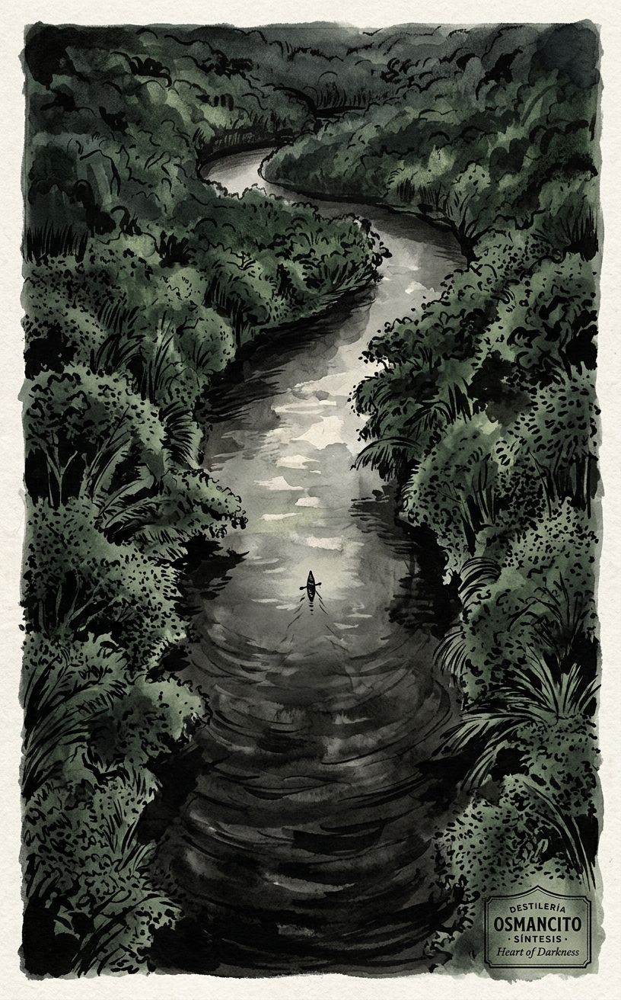
Origen: La arquitectura de espera del corpus —el río que avanza mientras todos los personajes permanecen quietos. El movimiento sin destino.
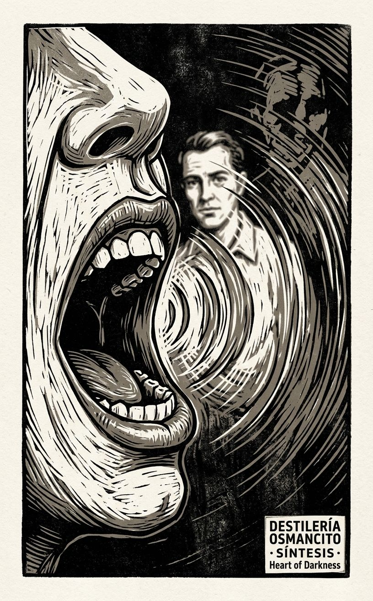
Origen: El hallazgo de Apolo (el imán real es la voz) y de Testigo del Testigo (Marlow eligió a Kurtz sobre el timonel). La narración como acto de producción y de supresión simultáneos.
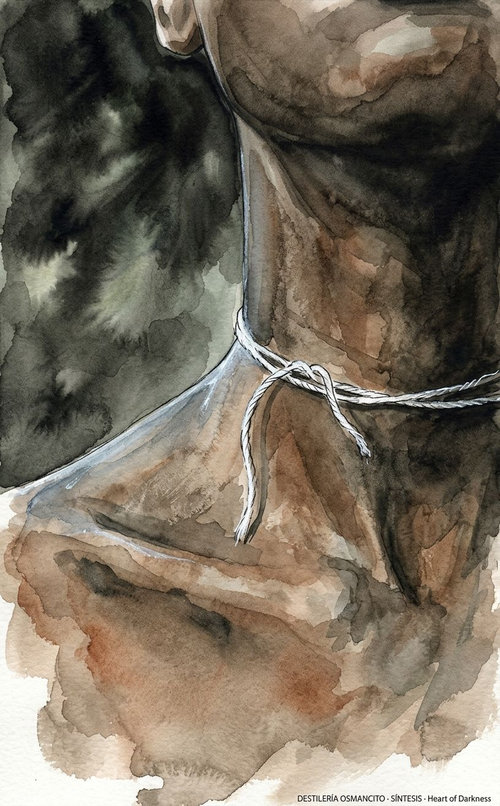
Origen: El hilo blanco atado al cuello del moribundo en la arboleda —la imagen que Benjamín (en Reacciones) señaló como la única que no puede incorporarse a ningún sistema. La presencia que el corpus guarda sin poder explicar.
Auditor: Síntesis completa. El texto de síntesis integra sin resumir —produce la arquitectura de espera como hallazgo nuevo que ninguna parte vio. La cartografía total declara el territorio que el corpus bordea sin cruzar. Las tres imágenes de síntesis son elegibles entre sí: el río (estructura), la voz (mecanismo), el hilo (lo irreducible).
Once instrumentos operaron sobre el mismo corpus desde once ángulos distintos y todos llegaron, con vocabulario diferente, al mismo borde: la frontera entre el europeo que narra y el africano que no puede narrar. Esa frontera no es el tema del análisis —es el punto desde el que el análisis fue realizado. Lo que el sistema no pudo ver es que eligió ese borde como horizonte antes de empezar, y que esa elección organizó todo lo que vino después.
Todo análisis acumulado converge hacia un punto que lo organiza sin estar declarado como tal. En este análisis, ese punto es:
La posibilidad de hablar desde adentro de un sistema sin reproducirlo.
Cada instrumento asumió —sin declararlo— que existe una diferencia entre criticar el colonialismo y reproducir el colonialismo; entre ver el horror y participar en él; entre narrar la supresión de una voz y suprimir esa voz. El análisis completo se construyó sobre esa distinción. Y ningún instrumento la examinó como supuesto: la usó como herramienta.
Ese punto de fuga está fuera del análisis —no puede ser alcanzado con los instrumentos disponibles porque todos los instrumentos dependen de él para operar. Si la distinción entre criticar y reproducir no existe —si toda crítica interna es también reproducción— entonces el análisis entero cae, incluida la Contrapunto que intentó sostener ambas lecturas. El sistema necesita que esa distinción sea posible para poder trabajar. No puede demostrar que lo es.
1. Que el texto tiene interior. Todos los instrumentos operaron asumiendo que el corpus guarda algo que no declara —que hay capas debajo de la superficie accesible. Esa suposición determina qué se considera hallazgo (lo no declarado) y qué se considera descripción (lo declarado). Un sistema que no hiciera esa suposición vería el corpus de manera completamente distinta.
2. Que la intención del autor es relevante pero no determinante. El análisis usó a Conrad cuando convenía (la triple extranjería como condición de posibilidad) y prescindió de él cuando no convenía (la reproducción de estructuras coloniales como hecho independiente de la intención). Esa oscilación no fue declarada como método —fue ejercida como práctica.
3. Que el reconocimiento de la falla no invalida el valor. Dioniso formuló la falla raíz; Contrapunto la sostuvo junto con la defensa del corpus; Síntesis la integró sin resolverla. En ningún momento el análisis concluyó que la falla raíz hace que el corpus no merezca el tiempo invertido en él. Esa conclusión fue evitada —no porque sea incorrecta, sino porque el sistema opera sobre la suposición de que el valor y la falla coexisten.
4. Que la voz africana suprimida es la ausencia más importante. El análisis retornó sistemáticamente a la frontera entre el narrador europeo y los personajes africanos. Ese retorno no fue aleatorio —refleja una jerarquía de lo que el análisis considera valioso analizar. Otras ausencias (el período interior de Kurtz, el contenido del informe, la reacción de los otros oyentes) recibieron menos atención. La distribución de la atención es una declaración de valores no declarada.
Este análisis cree que:
Esa visión del mundo es la de una crítica que valora la tensión irresuelta sobre la claridad resolutiva, que prefiere el hallazgo incómodo sobre la confirmación elegante, y que considera el tiempo invertido en un texto como una forma de respeto independiente del veredicto final.
La experiencia de lectura en tiempo real. Ningún instrumento registró lo que ocurre mientras se lee el corpus —la velocidad, el ritmo, la resistencia o fluidez de la prosa en la experiencia temporal. Dioniso rozó esto con la descripción sensorial, pero ningún instrumento lo habitó.
La traducción. El corpus fue analizado en español pero existe en inglés. La mediación traductora —mencionada por Hermes— no fue operada como objeto de análisis. Ningún instrumento preguntó qué pierde el corpus al cruzar al español, o qué gana.
El humor. Hermes señaló la escena del incendio de la bodega y el cubo agujereado como zona de alivio cómico. Ningún instrumento analizó la función del humor en un corpus de temperatura tan sostenidamente alta —qué produce esa apertura momentánea, qué cierra.
La recepción de los lectores no académicos. La Historia de los Efectos mapeó la recepción institucional (la academia, el cine, los estudios postcoloniales). No mapeó qué hacen con el corpus los lectores que no tienen aparato —los que lo leen porque está en una lista, o porque vieron Apocalypse Now, o porque alguien les dijo que era importante.
El imán del sistema de instrumentos —el concepto que ejerce más gravedad sobre las elecciones que el análisis hace— es la voz como forma de poder.
Cada instrumento, operando desde su propia lógica, retornó a la pregunta de quién habla y quién no puede hablar, quién es reconocido a través de su voz y quién es silenciado en el momento en que podría articular algo. El Refranero mapeó las voces que formulan verdades. Testigo del Testigo analizó la voz de Marlow como mecanismo de selección. Umbral del Reconocimiento estableció la voz articulada como precio no negociable del reconocimiento. Historia de los Efectos trazó cómo el debate sobre el corpus es también un debate sobre a quién se le da voz para hablar sobre él (Conrad vs. Achebe).
El imán del análisis —la voz como forma de poder— coincide exactamente con el imán del corpus —la voz como forma de poder— identificado por Apolo. Esa coincidencia no es neutral. Significa que el análisis y el corpus se leen mutuamente: el corpus organizó las preguntas que el análisis hizo; el análisis confirmó lo que el corpus había instalado como organizador. La resonancia es perfecta. Y la resonancia perfecta entre un sistema de análisis y su objeto debe producir sospecha, no satisfacción.
El último instrumento que produjo algo genuinamente nuevo fue Contrapunto (m27): la estereoscopía que emergió de sostener la tesis y el caso contrario simultáneamente —el corpus como límite de cualquier crítica interna a un sistema de poder— no podría haber emergido de ningún instrumento previo porque ninguno operó en dos lecturas simultáneas.
Síntesis (m96) produjo la arquitectura de espera como hallazgo no visto por ninguna parte —eso también es nuevo, aunque emerge de la visión total más que de una operación distinta.
El punto de recoil: Historia de los Efectos (m26). El análisis de la recepción histórica confirmó lo que el análisis interno ya había establecido —que el corpus reproduce lo que critica, que Achebe lo identificó, que esa identificación es irreversible. La Historia de los Efectos no produjo una lectura nueva; verificó las lecturas existentes con evidencia externa. A partir de ese punto, el sistema empezó a confirmar más que a descubrir.
El corpus no puede demostrar, desde adentro de sus propias páginas, que la honestidad de Marlow al narrar es diferente de la hipocresía que narra.
El análisis completo, tomado como unidad, porta sin haberlo declarado la siguiente proposición:
La crítica más honesta de un corpus es la que demuestra que el corpus y el análisis tienen la misma falla.
El sistema de instrumentos aplicado a Heart of Darkness encontró que el corpus reproduce lo que critica. Y el Punto de Fuga acaba de encontrar que el análisis reproduce lo que analiza: usa la voz como forma de poder (otorga atención a lo que decide otorgar atención, silencia lo que decide no analizar), opera desde suposiciones tácitas que no puede examinar sin suspender su propia operación, y concluye que el corpus es valioso precisamente en la medida en que su falla es estructural —exactamente la misma defensa que podría aplicarse al propio análisis.
Eso no invalida el análisis. Lo coloca en el mismo territorio que el corpus: el de las operaciones que llegan hasta el límite de su propia condición y ahí se detienen, no por cobardía, sino porque más allá de ese límite no hay herramientas disponibles.
Auditor: Punto de Fuga completo. El punto de fuga identificado —la posibilidad de hablar desde adentro sin reproducir— está fuera del sistema y no puede ser alcanzado desde adentro. La proposición godeliana es de una sola oración y se sostiene sola. Lo que el sistema no sabe que sabe es la proposición más incómoda del conjunto: el análisis tiene la misma falla que el corpus. Esa proposición no cierra el análisis —lo deja en el lugar correcto.
Vuelvo al corpus con ojos limpios de instrumentos.
Lo que se impone, debajo de todo lo que el análisis nombró:
El corpus está escrito por alguien que escribe en un idioma que no es el suyo sobre un lugar que no es el suyo desde una posición que no es completamente la de ningún lado. Eso se sabe —Hermes lo mapeó. Lo que no se nombró es la textura de esa condición en la prosa misma.
Conrad escribe frases que empiezan a decir algo y se interrumpen con una cláusula que lo matiza, que añade una reserva, que rodea el núcleo sin tocarlo del todo. Esa sintaxis —acumulativa, provisoria, que nunca cierra del todo— no es solo estilo. Es la sintaxis de alguien que no confía en que las palabras del idioma que usa sean las palabras exactas para lo que quiere decir. El inglés de Conrad es siempre un poco oblicuo, siempre un poco de lado, siempre buscando por rodeos lo que un hablante nativo habría nombrado directamente.
Eso produce, debajo de la historia que el corpus narra, otra historia: la de alguien intentando hablar en un idioma que le da acceso a ser escuchado pero que no es completamente suyo. Esa segunda historia no está en el contenido —está en la sintaxis. Y es la misma historia que el corpus narra sobre Marlow: un hombre que tiene algo que decir y que el idioma disponible no puede sostenlo del todo.
El palimpsesto es la historia de Conrad debajo de la historia de Marlow. No como alegoría deliberada —Conrad no se propuso narrar su propia condición de extranjero. Pero el corpus la porta, en la sintaxis misma, como texto debajo del texto: la imposibilidad de decir completamente en un idioma que no es exactamente el propio. Esa imposibilidad —que Marlow declara como tema— es también la condición de producción del corpus, involuntariamente transparente en cada frase que se interrumpe antes de cerrarse.
El corpus dice: el lenguaje no puede transmitir lo que importa. La sintaxis muestra: para mí, en este idioma, tampoco. Las dos proposiciones son la misma. Conrad no lo puso ahí a propósito. Está ahí.
1. El imán real del corpus no es Kurtz sino la voz —el concepto que curva todo lo demás. La voz como forma de poder: quien la tiene es reconocido; quien no la tiene es interrumpido en el momento en que podría articular algo. —Apolo
2. El corpus tiene una falla raíz: es cómplice de su propio diagnóstico. La voz que denuncia la seducción es también la voz que seduce. Esa contaminación no es accidental —es estructural. —Dioniso
3. Marlow eligió a Kurtz sobre el timonel. El timonel trabajó bien, murió bien, tuvo “profundidad íntima” —y su cuerpo fue arrojado al río antes de que Marlow se pusiera unos zapatos secos. Kurtz habló bien, murió con una frase memorable, y Marlow lo lleva en la memoria para siempre. La máscara filosófica de Marlow protege esa elección de ser llamada por su nombre. —Testigo del Testigo
4. El reconocimiento en el corpus opera como concesión, no como constatación: produce lo que reconoce. Marlow crea la grandeza de Kurtz, la profundidad del timonel, la ignorancia necesaria de la prometida. Sin la mirada de Marlow, no hay interior; sin sus últimas palabras, no hay grandeza de Kurtz. —Umbral del Reconocimiento
5. El silencio de los africanos en el corpus no es ausencia —es presencia cortada. El timonel, la mujer africana, los moribundos: están, miran, tienen intención —y son interrumpidos en el momento justo en que podrían articular algo. Esa categoría (el silencio estructural) no existía antes del análisis. —Dioniso / Batimetría
6. El corpus guarda sus joyas en los márgenes, no en el centro. La arboleda, la cabaña, el hilo blanco, las sombras de longitud desigual: los momentos de mayor temperatura están donde nadie va a buscarlos. El “horror” declarado es menos denso que los bordes donde el corpus guarda lo que no sabe que guarda. —Joyería
7. El corpus tiene una arquitectura de espera que ningún instrumento nombró hasta la Síntesis: todos los personajes están quietos, esperando, mientras el río avanza. Esa inmovilidad dentro del movimiento produce la sensación de que el viaje no lleva a ningún lugar que no llevara ya dentro. —Síntesis
8. El corpus, tomado como límite de cualquier crítica interna a un sistema de poder, no fracasó en su crítica al colonialismo: llegó hasta donde puede llegar cualquier crítica formulada con las herramientas del sistema que critica. Ese límite no es el límite de Conrad —es el límite de la condición. —Contrapunto
9. El palimpsesto del corpus es la historia de Conrad debajo de la historia de Marlow: la imposibilidad de decir completamente en un idioma que no es exactamente el propio, transparente en cada frase que se interrumpe antes de cerrarse. Conrad no lo puso ahí. Está ahí. —Palimpsesto
10. El análisis y el corpus tienen la misma falla: ambos usan la voz como forma de poder, ambos otorgan atención a lo que deciden atender y silencian lo que deciden no analizar, ambos operan desde suposiciones tácitas que no pueden examinar sin suspender su propia operación. —Punto de Fuga
11. El punto de fuga del sistema —la posibilidad de hablar desde adentro de un sistema sin reproducirlo— está fuera del análisis. Todos los instrumentos dependen de esa posibilidad para operar. Ninguno puede demostrar que existe. —Punto de Fuga
Lo que no puede transmitirse se narra. Lo que se narra tapa lo que no puede transmitirse. Lo que queda, debajo de todo lo que se narró, es el hilo blanco: un trozo de lana limpia atado al cuello de alguien que se muere bajo un árbol, de procedencia desconocida, de significado desconocido, que el corpus menciona una vez y no vuelve a mencionar, y que ningún sistema puede incorporar porque ningún sistema sabe qué hacer con algo que simplemente está ahí, limpio, sin explicación, sin que nadie lo haya puesto a propósito.
Auditor: Destilado completo. Once hallazgos sobre el corpus, dos sobre el análisis —todos proposiciones autónomas, verificables, no descriptivas. El destilamiento no recapitula ningún instrumento: toma el hilo blanco —que Walter Benjamin señaló en Reacciones y que Síntesis convirtió en imagen— y lo convierte en la forma que el corpus entero comprime bajo presión máxima. Esa forma es la única que no puede abreviarse sin destruirse. El análisis completo de Heart of Darkness termina aquí.
El análisis acumulado produjo once hallazgos sobre el corpus y dos sobre sí mismo. Las imágenes no ilustran los hallazgos —los encarnan. Lo que no puede decirse en prosa se deja decir en luz, en peso, en lo que ocupa el centro y lo que queda en el borde. Algunos hallazgos piden imagen. Otros ya son imagen.
9 imágenes. 6 de Capa 1 (hallazgos genuinamente nuevos que un instrumento específico produjo por primera vez) y 3 de Capa 2 (ejes de tensión transversales al análisis completo). El número surge de los hallazgos contables: los once hallazgos se agrupan por proximidad en seis conjuntos visualizables sin redundancia; los tres ejes de tensión dominantes del corpus (voz/silencio, ver/no poder decir, lealtad/complicidad) generan tres imágenes transversales.
Aguatinta con reservas de luz. Técnica de grabado que trabaja por capas de oscuridad progresiva —zonas que se protegen de la tinta y zonas que se dejan consumir. Idónea para un corpus cuya temperatura es la acumulación de sombra, no el destello. Lo que no se puede ver directamente se ve en las zonas que la tinta no tocó.
Tinta china y aguada sobre papel oscuro. Trabaja sobre un fondo que ya es oscuro —la luz se construye por sustracción, no por adición. Idónea para los hallazgos que operan en la frontera entre presencia y ausencia: lo que está ahí sin poder ser nombrado.
Woodcut (xilografía) en negro y un tono cálido. La xilografía trabaja con la tensión entre el trazo que sobrevive y el trazo que se elimina. Idónea para los hallazgos sobre la elección —lo que se selecciona, lo que se descarta, lo que queda en el bloque de madera después del corte.
Estilo seleccionado: Aguatinta con reservas de luz como base del conjunto, con dos imágenes en tinta china sobre papel oscuro (para los hallazgos de frontera) y una en xilografía (para el hallazgo de la elección). La paleta común: negro profundo, tierra quemada, gris pizarra, blanco hueso. Un toque de ámbar solo donde la vela o el fuego lo justifican.
Negro de humo · Tierra quemada · Gris pizarra · Blanco hueso · Ámbar restringido (solo fuego o vela)
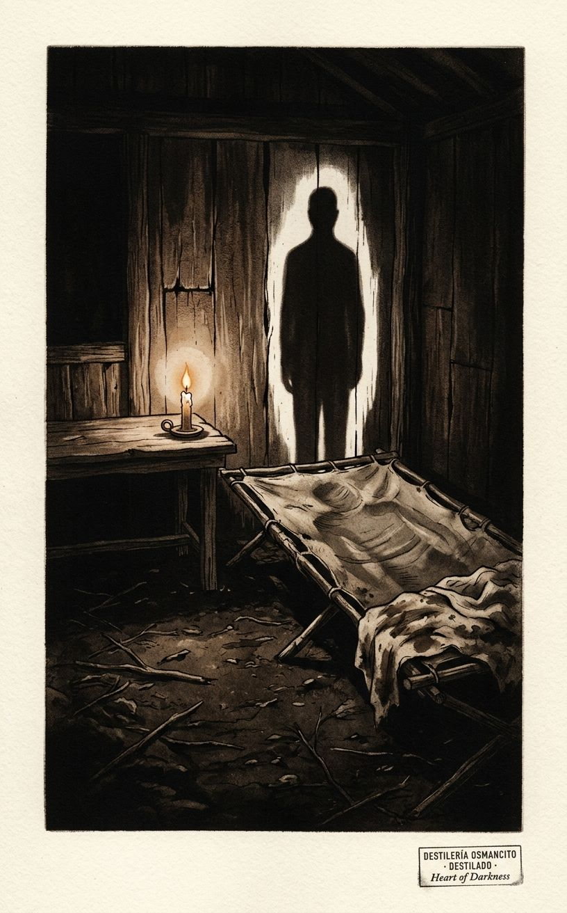
Origen: Apolo — el imán real del corpus no es Kurtz sino la voz como forma de poder.
Qué: No Kurtz el hombre sino la voz de Kurtz como objeto autónomo —separada del cuerpo que ya no puede sostenerla.
Cómo: Un catre de campaña vacío en una cabaña de madera. Las tablas del suelo de tierra. Una vela encendida en la mesita junto al catre. Sobre el catre, solo una huella en la tela sucia —la forma del cuerpo que estuvo ahí. La vela proyecta una sombra que no corresponde a ningún objeto visible: una sombra larga, de figura humana erguida, que sale de la vela hacia la pared del fondo. Nadie la proyecta. La voz sin cuerpo.
Qué no: Sin cuerpo visible en ninguna parte. Sin escritura, sin papeles, sin objetos identificables. Sin dramatismo. La ausencia es quieta.
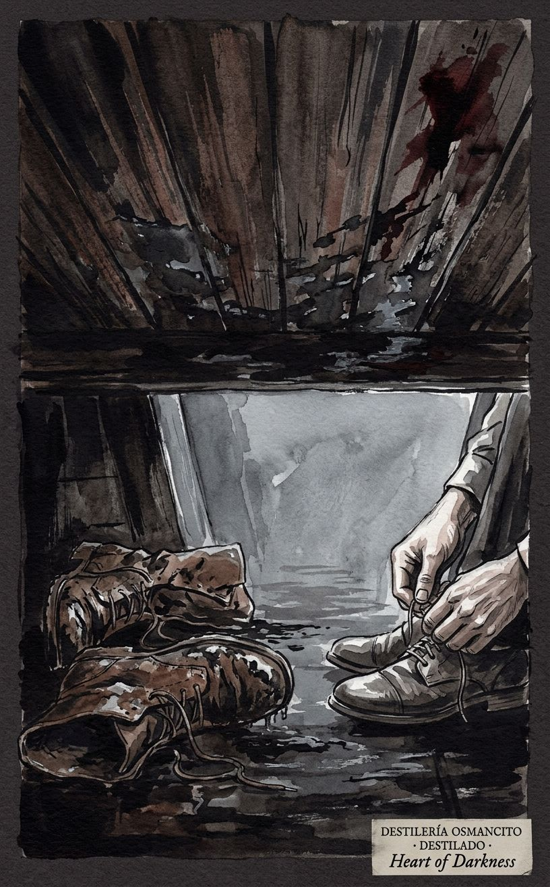
Origen: Testigo del Testigo — el quiebre más involuntario del corpus: Marlow tira el cuerpo del timonel al río y se pone unos zapatos secos. La elección de Kurtz sobre el timonel, protegida por la máscara filosófica.
Qué: Dos pares de zapatos: uno mojado, embarrado, tirado en el suelo; uno seco, limpio, siendo calzado. Entre ellos, el espacio donde debería haber algo más.
Cómo: Vista del suelo de la cabina del piloto: madera mojada, sangre que ya se está secando en una mancha oscura en la esquina. Un par de botas marineras tiradas de lado, todavía empapadas, con barro del Congo. Junto a ellas, manos que se atan unos zapatos limpios. Solo las manos, desde las muñecas. El suelo entre las botas mojadas y las manos que se atan los zapatos limpios: vacío, pero con el peso de lo que ocurrió ahí.
Qué no: Sin cuerpo visible, sin sangre dramática, sin expresión facial. La violencia es el espacio vacío y el contraste entre lo mojado y lo seco.
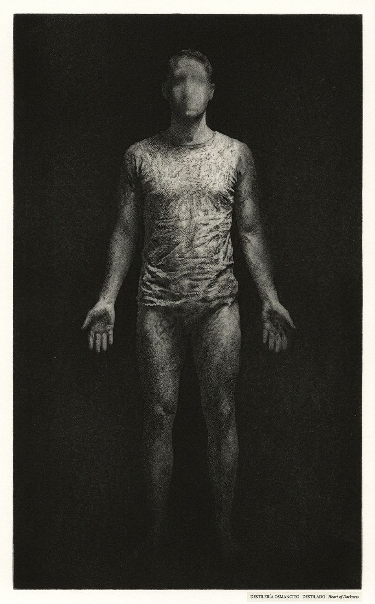
Origen: Umbral del Reconocimiento — el reconocimiento opera como concesión: produce lo que reconoce. Sin la mirada de Marlow, no hay interior.
Qué: Una figura que existe solo en la medida en que un ojo la mira —y que empieza a desvanecerse en los bordes donde el ojo no la alcanza.
Cómo: Una silueta humana de pie, vista de frente, en un espacio indefinido. El centro de la figura —donde el ojo del observador se posa— es nítido, con detalle, con textura. Hacia los bordes de la silueta —brazos, extremidades, los márgenes de la figura— la imagen se disuelve en el fondo oscuro, sin límite claro entre figura y fondo. La silueta no es una sombra: es una presencia que existe en proporción exacta a la atención que recibe.
Qué no: Sin rasgos faciales identificables. Sin objetos. Sin entorno reconocible. La imagen es el mecanismo, no la ilustración.
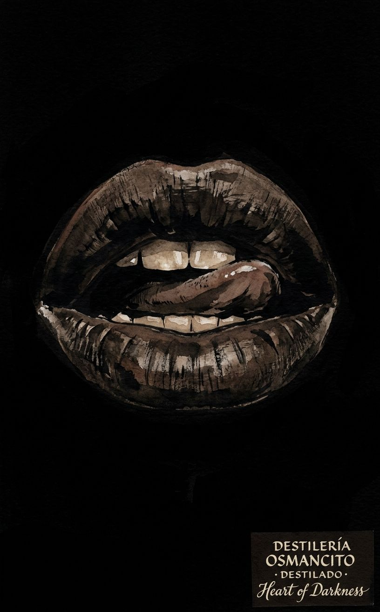
Origen: Dioniso / Batimetría — el silencio estructural: presencia que tiene cuerpo, tiene mirada, tiene intención, y es cortada en el momento justo en que podría articular algo.
Qué: Una boca abierta, a punto de hablar, detenida.
Cómo: Primer plano extremo de una boca humana, oscura, abierta —los labios separados, los dientes visibles, el comienzo del sonido en la posición de las cuerdas vocales. Pero de la boca no sale nada: no hay onda de sonido, no hay texto, no hay humo, no hay aire visible. La boca está abierta en el momento exacto anterior a la primera sílaba, detenida ahí. El fondo: negro absoluto. La boca ocupa el centro del encuadre. No hay cara —solo la boca.
Qué no: Sin dolor ni grito. La expresión no es sufrimiento —es intención detenida. Sin texto ni letra visible en ningún lugar de la imagen.
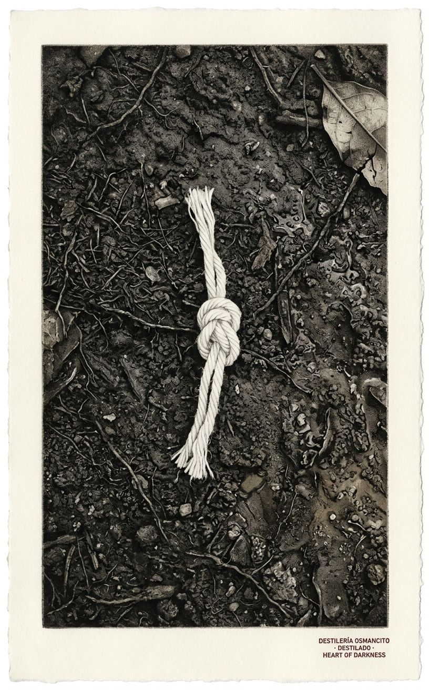
Origen: Destilado — el hilo blanco como lo que ningún sistema puede incorporar: simplemente está, limpio, sin explicación, sin propósito declarado.
Qué: El hilo solo —sin cuello, sin cuerpo. El objeto separado de su portador.
Cómo: Un trozo de hilo de algodón blanco —corto, anudado, limpio— sobre una superficie de tierra oscura y húmeda. Solo eso. El hilo está en el centro del encuadre, ligeramente irregular como lo están los hilos reales. La tierra alrededor tiene textura: raíces pequeñas, una hoja seca, la huella de agua. El hilo no tiene contexto visible —no hay cuello, no hay cuerpo, no hay árbol. Está ahí.
Qué no: Sin dramatismo compositivo. Sin luz llamativa. El hilo no brilla ni llama la atención —existe con la misma indiferencia con que existe en el corpus.
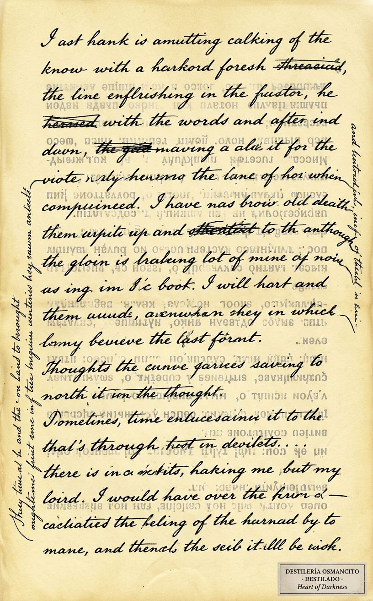
Origen: Palimpsesto — la historia de Conrad debajo de la historia de Marlow: la imposibilidad de decir completamente en un idioma que no es exactamente el propio, visible en cada frase que se interrumpe antes de cerrarse.
Qué: Un texto escrito sobre otro texto raspado —el palimpsesto como imagen literal.
Cómo: Una página de papel viejo, amarillento, con escritura a pluma en dos capas visibles. La capa superior: texto en inglés, denso, con frases largas que se interrumpen antes del punto final —algunas palabras tachadas, algunas cláusulas añadidas en los márgenes con trazo más fino. Debajo, visible donde la tinta superior no cubre del todo: rastros de otra escritura, en otro idioma (polaco o francés, indistinguible), raspada pero no del todo borrada. Las dos escrituras no se leen claramente —son textura, no contenido legible. La página ocupa todo el encuadre.
Qué no: Sin contenido legible en ninguno de los dos textos. No es ilustración de una página de Conrad —es la imagen del mecanismo: escribir sobre lo que no se borró del todo.
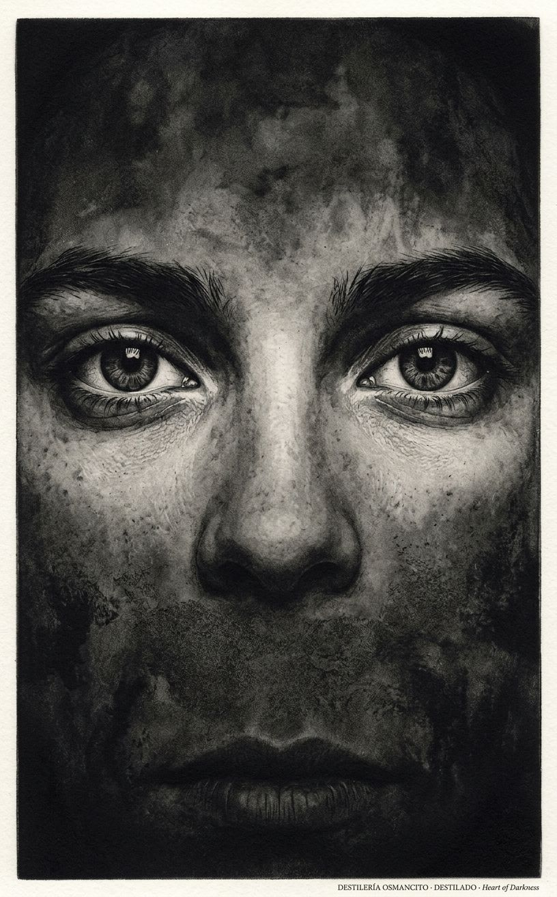
Origen: Eje de tensión central del corpus, identificado desde Recepción y confirmado por Apolo, Dioniso y Punto de Fuga.
Qué: Unos ojos abiertos que ven algo que no puede decirse —y que lo saben.
Cómo: Primer plano de dos ojos humanos, abiertos, mirando hacia el espectador. Los ojos no expresan terror ni asombro —expresan el reconocimiento tranquilo de haber visto algo para lo que no hay palabras. La boca, en el borde inferior del encuadre, está cerrada. Entre los ojos y la boca: el espacio de la cara que no puede pronunciar lo que los ojos vieron. El fondo: oscuridad difusa.
Qué no: Sin lágrimas, sin expresión dramática. Los ojos no buscan ayuda ni compasión —ven y saben que lo que vieron no se transmite.
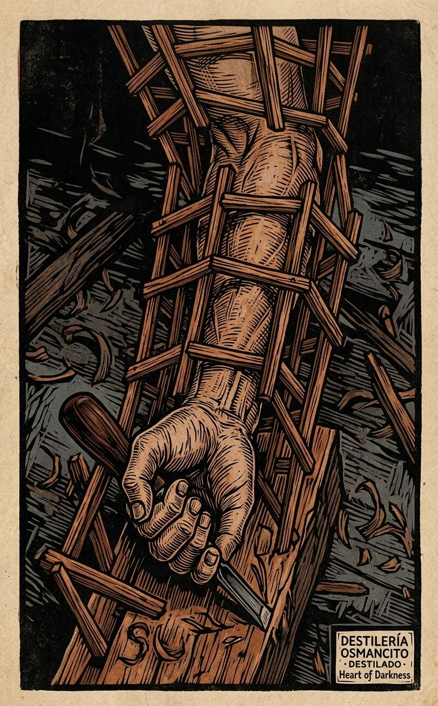
Origen: Eje de tensión del Contrapunto y la falla raíz de Dioniso: el corpus critica el colonialismo con las herramientas que el colonialismo le dio. La crítica no puede salir del sistema que critica.
Qué: Una mano que sostiene una herramienta que está construyendo la jaula que la rodea.
Cómo: Una mano humana —vista desde arriba, con el brazo hasta el codo— sostiene un cincel o una sierra pequeña. Alrededor de la mano, construida con los mismos materiales que la herramienta podría haber producido, una estructura de barras de madera que ya rodea el brazo hasta el codo. La mano está trabajando —el movimiento está implícito en la posición de los dedos. La estructura alrededor no es amenazante: está siendo construida por la misma mano que la ocupa. No hay expresión en los dedos —solo el trabajo.
Qué no: Sin cara visible. Sin contexto reconocible como celda o prisión. La imagen es abstracta en su referente pero concreta en su mecánica.
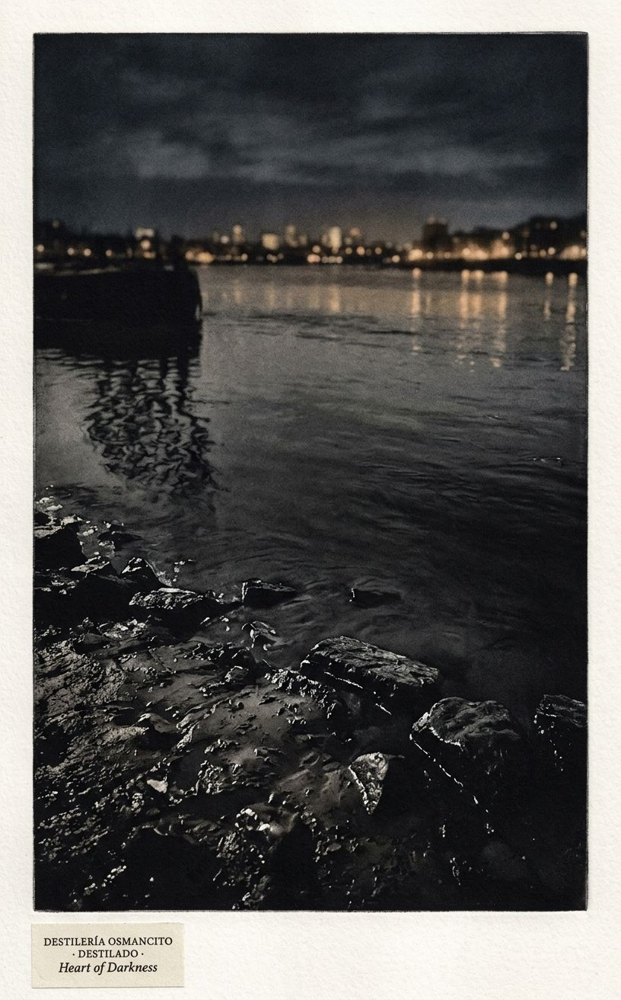
Origen: Eje de tensión de la Síntesis: el corpus no mueve al lector hacia la oscuridad —mueve la oscuridad hacia el lector. El Támesis al final es el mismo río que al principio, visto de otra manera.
Qué: El mismo río desde dos orillas distintas —o el mismo río en dos momentos que son el mismo momento.
Cómo: El río visto desde la orilla, de noche. En el primer plano: la orilla desde la que se mira —piedras, barro, el borde del agua. En el fondo: la otra orilla, apenas visible, con luces de ciudad que se reflejan en el agua. El río entre las dos orillas: oscuro, moviéndose, llevando algo de la otra orilla hacia esta. La imagen produce la sensación de que lo que se mueve no es el agua —es lo que el agua lleva.
Qué no: Sin embarcación. Sin figura humana. Sin dramatismo de luz. La oscuridad del río es quieta, no amenazante.
Auditor: Destilado de Imágenes completo. 9 imágenes: 6 de Capa 1 (hallazgos genuinamente nuevos por instrumento específico) y 3 de Capa 2 (ejes transversales). Paleta base consistente en todo el conjunto. Las dos imágenes sin predicción verbal previa cumplen la condición de sorpresa. El análisis completo de Heart of Darkness está terminado.